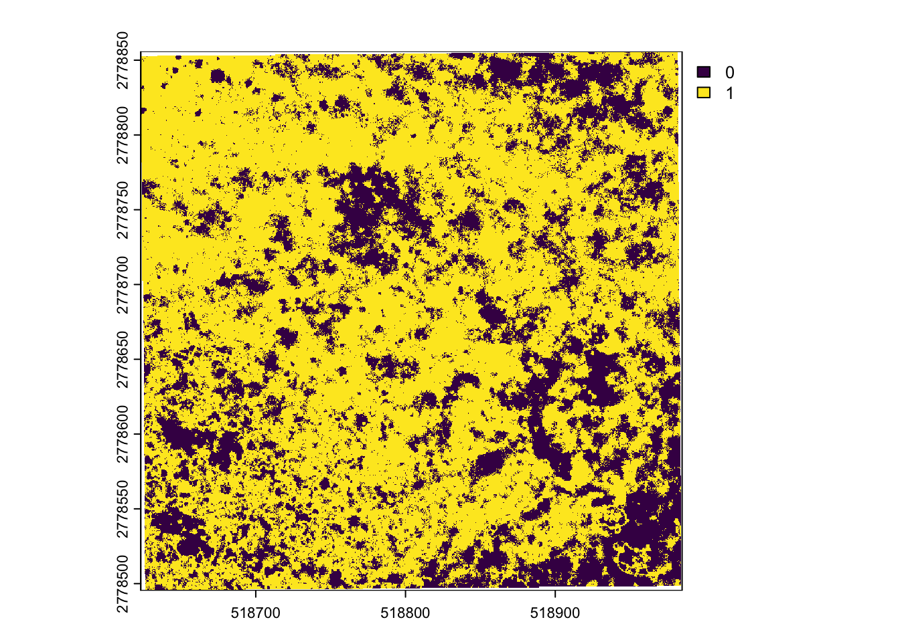
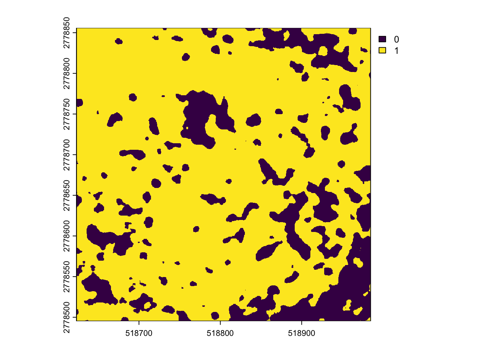

This section goes over what environmental variables we are using for our iSSFs. In this example, we will be using a two class (dense and sparse/bare) map of submerged aquatic vegetation (SAV) mapped using aerial imagery flown over our study site. The map was made using photointerpreted points to train a Random Forest algorithm on the spectral information within the aerial imagery. We will be using this map to also calculate spatial pattern metrics using the dense class of SAV, which are measures of composition and configuration of the seascape. Included in this section will also be the setup of the data for iSSFs, including calculating the “false” steps that the iSSFs use to determine habitat selection.
We will end up with 6 environmental variables: class of SAV, PLAND (Percentage of Landscape that the dense SAV class makes up), Edge Density (the density of edges of the dense SAV class), Patch Density (the density of patches of the dense SAV class), Division (a measure of likelihood that an adjacent cell is the same class as the cell you are calculating this metric on), and Mean Shape (a measure of how complex the patches of dense SAV are). This is where you can substitute any environmental data you may have based on your questions.
#Load in librarieslibrary(amt) #Package that iSSFs are in## ## Attaching package: 'amt'## The following object is masked from 'package:stats':## ## filterlibrary(tidyverse)## ── Attaching core tidyverse packages ──────────────────────── tidyverse 2.0.0 ──## ✔ dplyr 1.1.4 ✔ readr 2.1.5## ✔ forcats 1.0.1 ✔ stringr 1.5.2## ✔ ggplot2 4.0.0 ✔ tibble 3.3.0## ✔ lubridate 1.9.4 ✔ tidyr 1.3.1## ✔ purrr 1.1.0## ── Conflicts ────────────────────────────────────────── tidyverse_conflicts() ──## ✖ dplyr::filter() masks amt::filter(), stats::filter()## ✖ dplyr::lag() masks stats::lag()## ℹ Use the conflicted package (<http://conflicted.r-lib.org/>) to force all conflicts to become errorslibrary(survival)library(terra)## terra 1.8.70## ## Attaching package: 'terra'## ## The following object is masked from 'package:tidyr':## ## extractlibrary(sf)## Warning: package 'sf' was built under R version 4.5.2## Linking to GEOS 3.13.0, GDAL 3.8.5, PROJ 9.5.1; sf_use_s2() is TRUElibrary(furrr) #for parallel processing for landscape metrics. Makes it much quicker## Loading required package: future## ## Attaching package: 'future'## ## The following object is masked from 'package:survival':## ## clusterlibrary(purrr)library(ggeffects)library(landscapemetrics) #package for calculating spatial pattern metricsrdat <-read_csv('data/interpolated_hmm_states_30min.csv')## Rows: 6955 Columns: 10## ── Column specification ────────────────────────────────────────────────────────## Delimiter: ","## chr (1): ID## dbl (8): track, tag, x, y, step, angle, angle_deg, state## dttm (1): ts## ## ℹ Use `spec()` to retrieve the full column specification for this data.## ℹ Specify the column types or set `show_col_types = FALSE` to quiet this message.rmap <-rast('maps/rmap_dense.tif')plot(rmap)

# Make fish tracks with the amt functionalityfish_trackr <- rdat %>%mutate(ID =as.factor(ID),ts =as.POSIXct(ts, format ="%Y-%m-%d %H:%M:%OS", tz ="UTC")) %>%make_track(.x = x, # X coordinate column.y = y, # Y coordinate column.t = ts, # Timestamp columnid = ID, # Individual ID columncrs =st_crs(rmap),state = state)# Convert the track to observed steps, grouped by track# This calculates step length (sl_) and turn angle (ta_) for the observed steps.steps_obsr <- fish_trackr %>%steps(keep_cols ='end') %>% dplyr::filter(!is.na(ta_))
Generating random steps for iSSFs
Now that we have our observed data set up for environmental extraction and iSSF calculation, we need to calculate the random steps that the iSSFs need to compare against our observed step. In this workshop, we are just going to do a 10 - 1 ratio, but in the actual paper we are using a 100 to 1 ratio. This will lead to lower error in the model, but take A LOT longer.
# Generate random steps (10 random steps for every 1 observed step)steps_randr <- steps_obsr %>%random_steps(n_control =10)#We have our random steps, now we need to extract the habitat variables at the end of each step - The HMM state is preserved across each stephead(steps_randr)## # A tibble: 6 × 13## x1_ x2_ y1_ y2_ sl_ ta_ id state t1_ ## * <dbl> <dbl> <dbl> <dbl> <dbl> <dbl> <fct> <dbl> <dttm> ## 1 518711. 518712. 2778817. 2.78e6 3.29 0.594 3451… 1 2021-12-22 06:12:13## 2 518711. 518713. 2778817. 2.78e6 7.94 0.417 3451… 1 2021-12-22 06:12:13## 3 518711. 519080. 2778817. 2.78e6 389. 2.08 3451… 1 2021-12-22 06:12:13## 4 518711. 518725. 2778817. 2.78e6 150. 0.281 3451… 1 2021-12-22 06:12:13## 5 518711. 518721. 2778817. 2.78e6 10.6 1.79 3451… 1 2021-12-22 06:12:13## 6 518711. 518711. 2778817. 2.78e6 0.157 -1.24 3451… 1 2021-12-22 06:12:13## # ℹ 4 more variables: t2_ <dttm>, dt_ <drtn>, case_ <lgl>, step_id_ <dbl>sr <- steps_randr %>%drop_na() %>% dplyr::mutate(ID =1:n()) #drop NAs and create an ID column to calculate spatial pattern metrics across
Extracting environmental data
We have our data in the format we need to both extract classes and run spatial pattern metrics on them. However, do you remember when we told you that the environmental data needs to match the resolution of your environmental data? Well, here is where it comes into play. For the extraction of SAV classes, we are going to use a kernel to calculate the class most present within a 10m x 10m square around each cell in our map. This mimics the 10m error we filtered by for our positions. We will then extract the class at each position using this new map.
#create a kernel for the map to calculate the majority class withkernel <-matrix(1, nrow =31, ncol =31)#Apply the kernel across all of the cells in the original map and plot itrmap_kernel <-focal(rmap, w = kernel, fun ="modal", na.rm =TRUE)plot(rmap_kernel) #it reduces the complexity, but is better for fitting the data. We will use the complexity of the original map to calculate spatial pattern metrics

#create a spatialpointsdataframe and extract from mapsr2 <-st_as_sf(sr, coords =c("x2_", "y2_"), crs =st_crs(rmap_kernel)) %>% terra::extract(x = rmap_kernel, y = ., ID = F) %>%bind_cols(sr) %>%mutate(class =if_else(focal_modal ==1,2,1)) %>%drop_na() %>% dplyr::select(-focal_modal)
If the class is 2, it is dense SAV and if it is 1, it is sparse SAV/bare sediment. Now that we have our classes extracted, we are going to calculate some spatial pattern metrics. To do this, we are going to calculate the 5 variables brought up in the intro: PLAND, ED, PD, Divisionm and Shape_mn.
This next code block runs the spatial pattern metrics. However, it takes about 6.5 minutes to run this on a fast computer. For the sake of time, we are going to provide the resulting dataset. Unlike the YAPS position calculations, this code WILL work if you decide to run it. This will be the last step before we run the iSSFs!
##Just keep coordinates for the landscapemetrics package to recognize itrcoord <-as.data.frame(cbind(sr2$x2_, sr2$y2_))rcoord_sf <-st_as_sf(rcoord, coords =c("V1", "V2"), crs =st_crs(rmap))plan(multisession, workers =max(1, parallel::detectCores() -1)) # Use multisession to run on multiple coresresult_metr <-1:nrow(rcoord_sf) %>%future_map(function(i) { rmap_r <-rast("maps/rmap_dense.tif")sample_lsm( rmap_r,y =st_geometry(rcoord_sf[i, ]), # Ensure geometry is passedsize =15,what =c("lsm_c_pd", "lsm_c_ed","lsm_c_division","lsm_c_pland", "lsm_c_shape_mn" ),shape ="circle" ) })## Warning: package ‘sf’ was built under R version 4.5.2## Warning: The 'perecentage_inside' is below 90% for at least one buffer.## Warning: The 'perecentage_inside' is below 90% for at least one buffer.## Warning: The 'perecentage_inside' is below 90% for at least one buffer.## Warning: The 'perecentage_inside' is below 90% for at least one buffer.## Warning: The 'perecentage_inside' is below 90% for at least one buffer.## Warning: The 'perecentage_inside' is below 90% for at least one buffer.## Warning: The 'perecentage_inside' is below 90% for at least one buffer.## Warning: The 'perecentage_inside' is below 90% for at least one buffer.## Warning: The 'perecentage_inside' is below 90% for at least one buffer.## Warning: The 'perecentage_inside' is below 90% for at least one buffer.## Warning: The 'perecentage_inside' is below 90% for at least one buffer.## Warning: The 'perecentage_inside' is below 90% for at least one buffer.## Warning: The 'perecentage_inside' is below 90% for at least one buffer.## Warning: The 'perecentage_inside' is below 90% for at least one buffer.## Warning: The 'perecentage_inside' is below 90% for at least one buffer.## Warning: The 'perecentage_inside' is below 90% for at least one buffer.## Warning: The 'perecentage_inside' is below 90% for at least one buffer.## Warning: The 'perecentage_inside' is below 90% for at least one buffer.## Warning: The 'perecentage_inside' is below 90% for at least one buffer.## Warning: The 'perecentage_inside' is below 90% for at least one buffer.## Warning: The 'perecentage_inside' is below 90% for at least one buffer.## Warning: The 'perecentage_inside' is below 90% for at least one buffer.## Warning: The 'perecentage_inside' is below 90% for at least one buffer.## Warning: The 'perecentage_inside' is below 90% for at least one buffer.## Warning: The 'perecentage_inside' is below 90% for at least one buffer.## Warning: The 'perecentage_inside' is below 90% for at least one buffer.## Warning: The 'perecentage_inside' is below 90% for at least one buffer.## Warning: The 'perecentage_inside' is below 90% for at least one buffer.## Warning: The 'perecentage_inside' is below 90% for at least one buffer.## Warning: The 'perecentage_inside' is below 90% for at least one buffer.## Warning: The 'perecentage_inside' is below 90% for at least one buffer.## Warning: The 'perecentage_inside' is below 90% for at least one buffer.## Warning: The 'perecentage_inside' is below 90% for at least one buffer.## Warning: The 'perecentage_inside' is below 90% for at least one buffer.## Warning: The 'perecentage_inside' is below 90% for at least one buffer.## Warning: The 'perecentage_inside' is below 90% for at least one buffer.## Warning: The 'perecentage_inside' is below 90% for at least one buffer.## Warning: The 'perecentage_inside' is below 90% for at least one buffer.## Warning: The 'perecentage_inside' is below 90% for at least one buffer.## Warning: The 'perecentage_inside' is below 90% for at least one buffer.## Warning: The 'perecentage_inside' is below 90% for at least one buffer.## Warning: The 'perecentage_inside' is below 90% for at least one buffer.## Warning: The 'perecentage_inside' is below 90% for at least one buffer.## Warning: The 'perecentage_inside' is below 90% for at least one buffer.## Warning: The 'perecentage_inside' is below 90% for at least one buffer.## Warning: The 'perecentage_inside' is below 90% for at least one buffer.## Warning: The 'perecentage_inside' is below 90% for at least one buffer.## Warning: The 'perecentage_inside' is below 90% for at least one buffer.## Warning: The 'perecentage_inside' is below 90% for at least one buffer.## Warning: The 'perecentage_inside' is below 90% for at least one buffer.## Warning: The 'perecentage_inside' is below 90% for at least one buffer.## Warning: The 'perecentage_inside' is below 90% for at least one buffer.## Warning: The 'perecentage_inside' is below 90% for at least one buffer.## Warning: The 'perecentage_inside' is below 90% for at least one buffer.## Warning: The 'perecentage_inside' is below 90% for at least one buffer.## Warning: The 'perecentage_inside' is below 90% for at least one buffer.## Warning: The 'perecentage_inside' is below 90% for at least one buffer.## Warning: The 'perecentage_inside' is below 90% for at least one buffer.## Warning: The 'perecentage_inside' is below 90% for at least one buffer.## Warning: The 'perecentage_inside' is below 90% for at least one buffer.## Warning: The 'perecentage_inside' is below 90% for at least one buffer.## Warning: The 'perecentage_inside' is below 90% for at least one buffer.## Warning: The 'perecentage_inside' is below 90% for at least one buffer.## Warning: The 'perecentage_inside' is below 90% for at least one buffer.## Warning: The 'perecentage_inside' is below 90% for at least one buffer.## Warning: The 'perecentage_inside' is below 90% for at least one buffer.## Warning: The 'perecentage_inside' is below 90% for at least one buffer.## Warning: The 'perecentage_inside' is below 90% for at least one buffer.## Warning: The 'perecentage_inside' is below 90% for at least one buffer.## Warning: The 'perecentage_inside' is below 90% for at least one buffer.## Warning: The 'perecentage_inside' is below 90% for at least one buffer.## Warning: The 'perecentage_inside' is below 90% for at least one buffer.## Warning: The 'perecentage_inside' is below 90% for at least one buffer.## Warning: The 'perecentage_inside' is below 90% for at least one buffer.## Warning: The 'perecentage_inside' is below 90% for at least one buffer.## Warning: The 'perecentage_inside' is below 90% for at least one buffer.## Warning: The 'perecentage_inside' is below 90% for at least one buffer.## Warning: The 'perecentage_inside' is below 90% for at least one buffer.## Warning: The 'perecentage_inside' is below 90% for at least one buffer.## Warning: The 'perecentage_inside' is below 90% for at least one buffer.## Warning: The 'perecentage_inside' is below 90% for at least one buffer.## Warning: The 'perecentage_inside' is below 90% for at least one buffer.## Warning: The 'perecentage_inside' is below 90% for at least one buffer.## Warning: The 'perecentage_inside' is below 90% for at least one buffer.## Warning: The 'perecentage_inside' is below 90% for at least one buffer.## Warning: The 'perecentage_inside' is below 90% for at least one buffer.## Warning: The 'perecentage_inside' is below 90% for at least one buffer.## Warning: The 'perecentage_inside' is below 90% for at least one buffer.## Warning: The 'perecentage_inside' is below 90% for at least one buffer.## Warning: The 'perecentage_inside' is below 90% for at least one buffer.## Warning: The 'perecentage_inside' is below 90% for at least one buffer.## Warning: The 'perecentage_inside' is below 90% for at least one buffer.## Warning: The 'perecentage_inside' is below 90% for at least one buffer.## Warning: The 'perecentage_inside' is below 90% for at least one buffer.## Warning: The 'perecentage_inside' is below 90% for at least one buffer.## Warning: The 'perecentage_inside' is below 90% for at least one buffer.## Warning: The 'perecentage_inside' is below 90% for at least one buffer.## Warning: The 'perecentage_inside' is below 90% for at least one buffer.## Warning: The 'perecentage_inside' is below 90% for at least one buffer.## Warning: The 'perecentage_inside' is below 90% for at least one buffer.## Warning: The 'perecentage_inside' is below 90% for at least one buffer.## Warning: The 'perecentage_inside' is below 90% for at least one buffer.## Warning: The 'perecentage_inside' is below 90% for at least one buffer.## Warning: The 'perecentage_inside' is below 90% for at least one buffer.## Warning: The 'perecentage_inside' is below 90% for at least one buffer.## Warning: The 'perecentage_inside' is below 90% for at least one buffer.## Warning: The 'perecentage_inside' is below 90% for at least one buffer.## Warning: The 'perecentage_inside' is below 90% for at least one buffer.## Warning: The 'perecentage_inside' is below 90% for at least one buffer.## Warning: The 'perecentage_inside' is below 90% for at least one buffer.## Warning: The 'perecentage_inside' is below 90% for at least one buffer.## Warning: The 'perecentage_inside' is below 90% for at least one buffer.## Warning: The 'perecentage_inside' is below 90% for at least one buffer.## Warning: The 'perecentage_inside' is below 90% for at least one buffer.## Warning: The 'perecentage_inside' is below 90% for at least one buffer.## Warning: The 'perecentage_inside' is below 90% for at least one buffer.## Warning: The 'perecentage_inside' is below 90% for at least one buffer.## Warning: The 'perecentage_inside' is below 90% for at least one buffer.## Warning: The 'perecentage_inside' is below 90% for at least one buffer.## Warning: The 'perecentage_inside' is below 90% for at least one buffer.## Warning: The 'perecentage_inside' is below 90% for at least one buffer.## Warning: The 'perecentage_inside' is below 90% for at least one buffer.## Warning: The 'perecentage_inside' is below 90% for at least one buffer.## Warning: The 'perecentage_inside' is below 90% for at least one buffer.## Warning: The 'perecentage_inside' is below 90% for at least one buffer.## Warning: The 'perecentage_inside' is below 90% for at least one buffer.## Warning: The 'perecentage_inside' is below 90% for at least one buffer.## Warning: The 'perecentage_inside' is below 90% for at least one buffer.## Warning: The 'perecentage_inside' is below 90% for at least one buffer.## Warning: The 'perecentage_inside' is below 90% for at least one buffer.## Warning: The 'perecentage_inside' is below 90% for at least one buffer.## Warning: The 'perecentage_inside' is below 90% for at least one buffer.## Warning: The 'perecentage_inside' is below 90% for at least one buffer.## Warning: The 'perecentage_inside' is below 90% for at least one buffer.## Warning: The 'perecentage_inside' is below 90% for at least one buffer.## Warning: The 'perecentage_inside' is below 90% for at least one buffer.## Warning: The 'perecentage_inside' is below 90% for at least one buffer.## Warning: The 'perecentage_inside' is below 90% for at least one buffer.## Warning: The 'perecentage_inside' is below 90% for at least one buffer.## Warning: The 'perecentage_inside' is below 90% for at least one buffer.## Warning: The 'perecentage_inside' is below 90% for at least one buffer.## Warning: The 'perecentage_inside' is below 90% for at least one buffer.## Warning: The 'perecentage_inside' is below 90% for at least one buffer.## Warning: The 'perecentage_inside' is below 90% for at least one buffer.## Warning: The 'perecentage_inside' is below 90% for at least one buffer.## Warning: The 'perecentage_inside' is below 90% for at least one buffer.## Warning: The 'perecentage_inside' is below 90% for at least one buffer.## Warning: The 'perecentage_inside' is below 90% for at least one buffer.## Warning: The 'perecentage_inside' is below 90% for at least one buffer.## Warning: The 'perecentage_inside' is below 90% for at least one buffer.## Warning: The 'perecentage_inside' is below 90% for at least one buffer.## Warning: The 'perecentage_inside' is below 90% for at least one buffer.## Warning: The 'perecentage_inside' is below 90% for at least one buffer.## Warning: The 'perecentage_inside' is below 90% for at least one buffer.## Warning: The 'perecentage_inside' is below 90% for at least one buffer.## Warning: The 'perecentage_inside' is below 90% for at least one buffer.## Warning: The 'perecentage_inside' is below 90% for at least one buffer.## Warning: The 'perecentage_inside' is below 90% for at least one buffer.## Warning: The 'perecentage_inside' is below 90% for at least one buffer.## Warning: The 'perecentage_inside' is below 90% for at least one buffer.## Warning: The 'perecentage_inside' is below 90% for at least one buffer.## Warning: The 'perecentage_inside' is below 90% for at least one buffer.## Warning: The 'perecentage_inside' is below 90% for at least one buffer.## Warning: The 'perecentage_inside' is below 90% for at least one buffer.## Warning: The 'perecentage_inside' is below 90% for at least one buffer.## Warning: The 'perecentage_inside' is below 90% for at least one buffer.## Warning: The 'perecentage_inside' is below 90% for at least one buffer.## Warning: The 'perecentage_inside' is below 90% for at least one buffer.## Warning: The 'perecentage_inside' is below 90% for at least one buffer.## Warning: The 'perecentage_inside' is below 90% for at least one buffer.## Warning: The 'perecentage_inside' is below 90% for at least one buffer.## Warning: The 'perecentage_inside' is below 90% for at least one buffer.## Warning: The 'perecentage_inside' is below 90% for at least one buffer.## Warning: The 'perecentage_inside' is below 90% for at least one buffer.## Warning: The 'perecentage_inside' is below 90% for at least one buffer.## Warning: The 'perecentage_inside' is below 90% for at least one buffer.## Warning: The 'perecentage_inside' is below 90% for at least one buffer.## Warning: The 'perecentage_inside' is below 90% for at least one buffer.## Warning: The 'perecentage_inside' is below 90% for at least one buffer.## Warning: The 'perecentage_inside' is below 90% for at least one buffer.## Warning: The 'perecentage_inside' is below 90% for at least one buffer.## Warning: The 'perecentage_inside' is below 90% for at least one buffer.## Warning: The 'perecentage_inside' is below 90% for at least one buffer.## Warning: The 'perecentage_inside' is below 90% for at least one buffer.## Warning: The 'perecentage_inside' is below 90% for at least one buffer.## Warning: The 'perecentage_inside' is below 90% for at least one buffer.## Warning: The 'perecentage_inside' is below 90% for at least one buffer.## Warning: The 'perecentage_inside' is below 90% for at least one buffer.## Warning: The 'perecentage_inside' is below 90% for at least one buffer.## Warning: The 'perecentage_inside' is below 90% for at least one buffer.## Warning: The 'perecentage_inside' is below 90% for at least one buffer.## Warning: The 'perecentage_inside' is below 90% for at least one buffer.## Warning: The 'perecentage_inside' is below 90% for at least one buffer.## Warning: The 'perecentage_inside' is below 90% for at least one buffer.## Warning: The 'perecentage_inside' is below 90% for at least one buffer.## Warning: The 'perecentage_inside' is below 90% for at least one buffer.## Warning: The 'perecentage_inside' is below 90% for at least one buffer.## Warning: The 'perecentage_inside' is below 90% for at least one buffer.## Warning: The 'perecentage_inside' is below 90% for at least one buffer.## Warning: The 'perecentage_inside' is below 90% for at least one buffer.## Warning: The 'perecentage_inside' is below 90% for at least one buffer.## Warning: The 'perecentage_inside' is below 90% for at least one buffer.## Warning: The 'perecentage_inside' is below 90% for at least one buffer.## Warning: The 'perecentage_inside' is below 90% for at least one buffer.## Warning: The 'perecentage_inside' is below 90% for at least one buffer.## Warning: The 'perecentage_inside' is below 90% for at least one buffer.## Warning: The 'perecentage_inside' is below 90% for at least one buffer.## Warning: The 'perecentage_inside' is below 90% for at least one buffer.## Warning: The 'perecentage_inside' is below 90% for at least one buffer.## Warning: The 'perecentage_inside' is below 90% for at least one buffer.## Warning: The 'perecentage_inside' is below 90% for at least one buffer.## Warning: The 'perecentage_inside' is below 90% for at least one buffer.## Warning: The 'perecentage_inside' is below 90% for at least one buffer.## Warning: The 'perecentage_inside' is below 90% for at least one buffer.## Warning: The 'perecentage_inside' is below 90% for at least one buffer.## Warning: The 'perecentage_inside' is below 90% for at least one buffer.## Warning: The 'perecentage_inside' is below 90% for at least one buffer.## Warning: The 'perecentage_inside' is below 90% for at least one buffer.## Warning: The 'perecentage_inside' is below 90% for at least one buffer.## Warning: The 'perecentage_inside' is below 90% for at least one buffer.## Warning: The 'perecentage_inside' is below 90% for at least one buffer.## Warning: The 'perecentage_inside' is below 90% for at least one buffer.## Warning: The 'perecentage_inside' is below 90% for at least one buffer.## Warning: The 'perecentage_inside' is below 90% for at least one buffer.## Warning: The 'perecentage_inside' is below 90% for at least one buffer.## Warning: The 'perecentage_inside' is below 90% for at least one buffer.## Warning: The 'perecentage_inside' is below 90% for at least one buffer.## Warning: The 'perecentage_inside' is below 90% for at least one buffer.## Warning: The 'perecentage_inside' is below 90% for at least one buffer.## Warning: The 'perecentage_inside' is below 90% for at least one buffer.## Warning: The 'perecentage_inside' is below 90% for at least one buffer.## Warning: The 'perecentage_inside' is below 90% for at least one buffer.## Warning: The 'perecentage_inside' is below 90% for at least one buffer.## Warning: The 'perecentage_inside' is below 90% for at least one buffer.## Warning: The 'perecentage_inside' is below 90% for at least one buffer.## Warning: The 'perecentage_inside' is below 90% for at least one buffer.## Warning: The 'perecentage_inside' is below 90% for at least one buffer.## Warning: The 'perecentage_inside' is below 90% for at least one buffer.## Warning: The 'perecentage_inside' is below 90% for at least one buffer.## Warning: The 'perecentage_inside' is below 90% for at least one buffer.## Warning: The 'perecentage_inside' is below 90% for at least one buffer.## Warning: The 'perecentage_inside' is below 90% for at least one buffer.## Warning: The 'perecentage_inside' is below 90% for at least one buffer.## Warning: The 'perecentage_inside' is below 90% for at least one buffer.## Warning: The 'perecentage_inside' is below 90% for at least one buffer.## Warning: The 'perecentage_inside' is below 90% for at least one buffer.## Warning: The 'perecentage_inside' is below 90% for at least one buffer.## Warning: The 'perecentage_inside' is below 90% for at least one buffer.## Warning: The 'perecentage_inside' is below 90% for at least one buffer.## Warning: The 'perecentage_inside' is below 90% for at least one buffer.## Warning: The 'perecentage_inside' is below 90% for at least one buffer.## Warning: package ‘sf’ was built under R version 4.5.2## Warning: The 'perecentage_inside' is below 90% for at least one buffer.## Warning: The 'perecentage_inside' is below 90% for at least one buffer.## Warning: The 'perecentage_inside' is below 90% for at least one buffer.## Warning: The 'perecentage_inside' is below 90% for at least one buffer.## Warning: The 'perecentage_inside' is below 90% for at least one buffer.## Warning: The 'perecentage_inside' is below 90% for at least one buffer.## Warning: The 'perecentage_inside' is below 90% for at least one buffer.## Warning: The 'perecentage_inside' is below 90% for at least one buffer.## Warning: The 'perecentage_inside' is below 90% for at least one buffer.## Warning: The 'perecentage_inside' is below 90% for at least one buffer.## Warning: The 'perecentage_inside' is below 90% for at least one buffer.## Warning: The 'perecentage_inside' is below 90% for at least one buffer.## Warning: The 'perecentage_inside' is below 90% for at least one buffer.## Warning: The 'perecentage_inside' is below 90% for at least one buffer.## Warning: The 'perecentage_inside' is below 90% for at least one buffer.## Warning: The 'perecentage_inside' is below 90% for at least one buffer.## Warning: The 'perecentage_inside' is below 90% for at least one buffer.## Warning: The 'perecentage_inside' is below 90% for at least one buffer.## Warning: The 'perecentage_inside' is below 90% for at least one buffer.## Warning: The 'perecentage_inside' is below 90% for at least one buffer.## Warning: The 'perecentage_inside' is below 90% for at least one buffer.## Warning: The 'perecentage_inside' is below 90% for at least one buffer.## Warning: The 'perecentage_inside' is below 90% for at least one buffer.## Warning: The 'perecentage_inside' is below 90% for at least one buffer.## Warning: The 'perecentage_inside' is below 90% for at least one buffer.## Warning: The 'perecentage_inside' is below 90% for at least one buffer.## Warning: The 'perecentage_inside' is below 90% for at least one buffer.## Warning: The 'perecentage_inside' is below 90% for at least one buffer.## Warning: The 'perecentage_inside' is below 90% for at least one buffer.## Warning: The 'perecentage_inside' is below 90% for at least one buffer.## Warning: The 'perecentage_inside' is below 90% for at least one buffer.## Warning: The 'perecentage_inside' is below 90% for at least one buffer.## Warning: The 'perecentage_inside' is below 90% for at least one buffer.## Warning: The 'perecentage_inside' is below 90% for at least one buffer.## Warning: The 'perecentage_inside' is below 90% for at least one buffer.## Warning: The 'perecentage_inside' is below 90% for at least one buffer.## Warning: The 'perecentage_inside' is below 90% for at least one buffer.## Warning: The 'perecentage_inside' is below 90% for at least one buffer.## Warning: The 'perecentage_inside' is below 90% for at least one buffer.## Warning: The 'perecentage_inside' is below 90% for at least one buffer.## Warning: The 'perecentage_inside' is below 90% for at least one buffer.## Warning: The 'perecentage_inside' is below 90% for at least one buffer.## Warning: The 'perecentage_inside' is below 90% for at least one buffer.## Warning: The 'perecentage_inside' is below 90% for at least one buffer.## Warning: The 'perecentage_inside' is below 90% for at least one buffer.## Warning: The 'perecentage_inside' is below 90% for at least one buffer.## Warning: The 'perecentage_inside' is below 90% for at least one buffer.## Warning: The 'perecentage_inside' is below 90% for at least one buffer.## Warning: The 'perecentage_inside' is below 90% for at least one buffer.## Warning: The 'perecentage_inside' is below 90% for at least one buffer.## Warning: The 'perecentage_inside' is below 90% for at least one buffer.## Warning: The 'perecentage_inside' is below 90% for at least one buffer.## Warning: The 'perecentage_inside' is below 90% for at least one buffer.## Warning: The 'perecentage_inside' is below 90% for at least one buffer.## Warning: The 'perecentage_inside' is below 90% for at least one buffer.## Warning: The 'perecentage_inside' is below 90% for at least one buffer.## Warning: The 'perecentage_inside' is below 90% for at least one buffer.## Warning: The 'perecentage_inside' is below 90% for at least one buffer.## Warning: The 'perecentage_inside' is below 90% for at least one buffer.## Warning: The 'perecentage_inside' is below 90% for at least one buffer.## Warning: The 'perecentage_inside' is below 90% for at least one buffer.## Warning: The 'perecentage_inside' is below 90% for at least one buffer.## Warning: The 'perecentage_inside' is below 90% for at least one buffer.## Warning: The 'perecentage_inside' is below 90% for at least one buffer.## Warning: The 'perecentage_inside' is below 90% for at least one buffer.## Warning: The 'perecentage_inside' is below 90% for at least one buffer.## Warning: The 'perecentage_inside' is below 90% for at least one buffer.## Warning: The 'perecentage_inside' is below 90% for at least one buffer.## Warning: The 'perecentage_inside' is below 90% for at least one buffer.## Warning: The 'perecentage_inside' is below 90% for at least one buffer.## Warning: The 'perecentage_inside' is below 90% for at least one buffer.## Warning: The 'perecentage_inside' is below 90% for at least one buffer.## Warning: The 'perecentage_inside' is below 90% for at least one buffer.## Warning: The 'perecentage_inside' is below 90% for at least one buffer.## Warning: The 'perecentage_inside' is below 90% for at least one buffer.## Warning: The 'perecentage_inside' is below 90% for at least one buffer.## Warning: The 'perecentage_inside' is below 90% for at least one buffer.## Warning: The 'perecentage_inside' is below 90% for at least one buffer.## Warning: The 'perecentage_inside' is below 90% for at least one buffer.## Warning: The 'perecentage_inside' is below 90% for at least one buffer.## Warning: The 'perecentage_inside' is below 90% for at least one buffer.## Warning: The 'perecentage_inside' is below 90% for at least one buffer.## Warning: The 'perecentage_inside' is below 90% for at least one buffer.## Warning: The 'perecentage_inside' is below 90% for at least one buffer.## Warning: The 'perecentage_inside' is below 90% for at least one buffer.## Warning: The 'perecentage_inside' is below 90% for at least one buffer.## Warning: The 'perecentage_inside' is below 90% for at least one buffer.## Warning: The 'perecentage_inside' is below 90% for at least one buffer.## Warning: The 'perecentage_inside' is below 90% for at least one buffer.## Warning: The 'perecentage_inside' is below 90% for at least one buffer.## Warning: The 'perecentage_inside' is below 90% for at least one buffer.## Warning: The 'perecentage_inside' is below 90% for at least one buffer.## Warning: The 'perecentage_inside' is below 90% for at least one buffer.## Warning: The 'perecentage_inside' is below 90% for at least one buffer.## Warning: The 'perecentage_inside' is below 90% for at least one buffer.## Warning: The 'perecentage_inside' is below 90% for at least one buffer.## Warning: The 'perecentage_inside' is below 90% for at least one buffer.## Warning: The 'perecentage_inside' is below 90% for at least one buffer.## Warning: The 'perecentage_inside' is below 90% for at least one buffer.## Warning: The 'perecentage_inside' is below 90% for at least one buffer.## Warning: The 'perecentage_inside' is below 90% for at least one buffer.## Warning: The 'perecentage_inside' is below 90% for at least one buffer.## Warning: The 'perecentage_inside' is below 90% for at least one buffer.## Warning: The 'perecentage_inside' is below 90% for at least one buffer.## Warning: The 'perecentage_inside' is below 90% for at least one buffer.## Warning: The 'perecentage_inside' is below 90% for at least one buffer.## Warning: The 'perecentage_inside' is below 90% for at least one buffer.## Warning: The 'perecentage_inside' is below 90% for at least one buffer.## Warning: The 'perecentage_inside' is below 90% for at least one buffer.## Warning: The 'perecentage_inside' is below 90% for at least one buffer.## Warning: The 'perecentage_inside' is below 90% for at least one buffer.## Warning: The 'perecentage_inside' is below 90% for at least one buffer.## Warning: The 'perecentage_inside' is below 90% for at least one buffer.## Warning: The 'perecentage_inside' is below 90% for at least one buffer.## Warning: The 'perecentage_inside' is below 90% for at least one buffer.## Warning: The 'perecentage_inside' is below 90% for at least one buffer.## Warning: The 'perecentage_inside' is below 90% for at least one buffer.## Warning: The 'perecentage_inside' is below 90% for at least one buffer.## Warning: The 'perecentage_inside' is below 90% for at least one buffer.## Warning: The 'perecentage_inside' is below 90% for at least one buffer.## Warning: The 'perecentage_inside' is below 90% for at least one buffer.## Warning: The 'perecentage_inside' is below 90% for at least one buffer.## Warning: The 'perecentage_inside' is below 90% for at least one buffer.## Warning: The 'perecentage_inside' is below 90% for at least one buffer.## Warning: The 'perecentage_inside' is below 90% for at least one buffer.## Warning: The 'perecentage_inside' is below 90% for at least one buffer.## Warning: The 'perecentage_inside' is below 90% for at least one buffer.## Warning: The 'perecentage_inside' is below 90% for at least one buffer.## Warning: The 'perecentage_inside' is below 90% for at least one buffer.## Warning: The 'perecentage_inside' is below 90% for at least one buffer.## Warning: The 'perecentage_inside' is below 90% for at least one buffer.## Warning: The 'perecentage_inside' is below 90% for at least one buffer.## Warning: The 'perecentage_inside' is below 90% for at least one buffer.## Warning: The 'perecentage_inside' is below 90% for at least one buffer.## Warning: The 'perecentage_inside' is below 90% for at least one buffer.## Warning: The 'perecentage_inside' is below 90% for at least one buffer.## Warning: The 'perecentage_inside' is below 90% for at least one buffer.## Warning: The 'perecentage_inside' is below 90% for at least one buffer.## Warning: The 'perecentage_inside' is below 90% for at least one buffer.## Warning: The 'perecentage_inside' is below 90% for at least one buffer.## Warning: The 'perecentage_inside' is below 90% for at least one buffer.## Warning: The 'perecentage_inside' is below 90% for at least one buffer.## Warning: The 'perecentage_inside' is below 90% for at least one buffer.## Warning: The 'perecentage_inside' is below 90% for at least one buffer.## Warning: The 'perecentage_inside' is below 90% for at least one buffer.## Warning: The 'perecentage_inside' is below 90% for at least one buffer.## Warning: The 'perecentage_inside' is below 90% for at least one buffer.## Warning: The 'perecentage_inside' is below 90% for at least one buffer.## Warning: The 'perecentage_inside' is below 90% for at least one buffer.## Warning: The 'perecentage_inside' is below 90% for at least one buffer.## Warning: The 'perecentage_inside' is below 90% for at least one buffer.## Warning: The 'perecentage_inside' is below 90% for at least one buffer.## Warning: The 'perecentage_inside' is below 90% for at least one buffer.## Warning: The 'perecentage_inside' is below 90% for at least one buffer.## Warning: The 'perecentage_inside' is below 90% for at least one buffer.## Warning: The 'perecentage_inside' is below 90% for at least one buffer.## Warning: The 'perecentage_inside' is below 90% for at least one buffer.## Warning: The 'perecentage_inside' is below 90% for at least one buffer.## Warning: The 'perecentage_inside' is below 90% for at least one buffer.## Warning: The 'perecentage_inside' is below 90% for at least one buffer.## Warning: The 'perecentage_inside' is below 90% for at least one buffer.## Warning: The 'perecentage_inside' is below 90% for at least one buffer.## Warning: The 'perecentage_inside' is below 90% for at least one buffer.## Warning: The 'perecentage_inside' is below 90% for at least one buffer.## Warning: The 'perecentage_inside' is below 90% for at least one buffer.## Warning: The 'perecentage_inside' is below 90% for at least one buffer.## Warning: The 'perecentage_inside' is below 90% for at least one buffer.## Warning: The 'perecentage_inside' is below 90% for at least one buffer.## Warning: The 'perecentage_inside' is below 90% for at least one buffer.## Warning: The 'perecentage_inside' is below 90% for at least one buffer.## Warning: The 'perecentage_inside' is below 90% for at least one buffer.## Warning: The 'perecentage_inside' is below 90% for at least one buffer.## Warning: The 'perecentage_inside' is below 90% for at least one buffer.## Warning: The 'perecentage_inside' is below 90% for at least one buffer.## Warning: The 'perecentage_inside' is below 90% for at least one buffer.## Warning: The 'perecentage_inside' is below 90% for at least one buffer.## Warning: The 'perecentage_inside' is below 90% for at least one buffer.## Warning: The 'perecentage_inside' is below 90% for at least one buffer.## Warning: The 'perecentage_inside' is below 90% for at least one buffer.## Warning: The 'perecentage_inside' is below 90% for at least one buffer.## Warning: The 'perecentage_inside' is below 90% for at least one buffer.## Warning: The 'perecentage_inside' is below 90% for at least one buffer.## Warning: The 'perecentage_inside' is below 90% for at least one buffer.## Warning: The 'perecentage_inside' is below 90% for at least one buffer.## Warning: The 'perecentage_inside' is below 90% for at least one buffer.## Warning: The 'perecentage_inside' is below 90% for at least one buffer.## Warning: The 'perecentage_inside' is below 90% for at least one buffer.## Warning: The 'perecentage_inside' is below 90% for at least one buffer.## Warning: The 'perecentage_inside' is below 90% for at least one buffer.## Warning: The 'perecentage_inside' is below 90% for at least one buffer.## Warning: The 'perecentage_inside' is below 90% for at least one buffer.## Warning: The 'perecentage_inside' is below 90% for at least one buffer.## Warning: The 'perecentage_inside' is below 90% for at least one buffer.## Warning: The 'perecentage_inside' is below 90% for at least one buffer.## Warning: The 'perecentage_inside' is below 90% for at least one buffer.## Warning: The 'perecentage_inside' is below 90% for at least one buffer.## Warning: The 'perecentage_inside' is below 90% for at least one buffer.## Warning: The 'perecentage_inside' is below 90% for at least one buffer.## Warning: The 'perecentage_inside' is below 90% for at least one buffer.## Warning: The 'perecentage_inside' is below 90% for at least one buffer.## Warning: The 'perecentage_inside' is below 90% for at least one buffer.## Warning: The 'perecentage_inside' is below 90% for at least one buffer.## Warning: The 'perecentage_inside' is below 90% for at least one buffer.## Warning: The 'perecentage_inside' is below 90% for at least one buffer.## Warning: The 'perecentage_inside' is below 90% for at least one buffer.## Warning: The 'perecentage_inside' is below 90% for at least one buffer.## Warning: The 'perecentage_inside' is below 90% for at least one buffer.## Warning: The 'perecentage_inside' is below 90% for at least one buffer.## Warning: The 'perecentage_inside' is below 90% for at least one buffer.## Warning: The 'perecentage_inside' is below 90% for at least one buffer.## Warning: The 'perecentage_inside' is below 90% for at least one buffer.## Warning: The 'perecentage_inside' is below 90% for at least one buffer.## Warning: The 'perecentage_inside' is below 90% for at least one buffer.## Warning: The 'perecentage_inside' is below 90% for at least one buffer.## Warning: The 'perecentage_inside' is below 90% for at least one buffer.## Warning: The 'perecentage_inside' is below 90% for at least one buffer.## Warning: The 'perecentage_inside' is below 90% for at least one buffer.## Warning: The 'perecentage_inside' is below 90% for at least one buffer.## Warning: The 'perecentage_inside' is below 90% for at least one buffer.## Warning: The 'perecentage_inside' is below 90% for at least one buffer.## Warning: The 'perecentage_inside' is below 90% for at least one buffer.## Warning: The 'perecentage_inside' is below 90% for at least one buffer.## Warning: The 'perecentage_inside' is below 90% for at least one buffer.## Warning: The 'perecentage_inside' is below 90% for at least one buffer.## Warning: The 'perecentage_inside' is below 90% for at least one buffer.## Warning: The 'perecentage_inside' is below 90% for at least one buffer.## Warning: The 'perecentage_inside' is below 90% for at least one buffer.## Warning: The 'perecentage_inside' is below 90% for at least one buffer.## Warning: The 'perecentage_inside' is below 90% for at least one buffer.## Warning: The 'perecentage_inside' is below 90% for at least one buffer.## Warning: The 'perecentage_inside' is below 90% for at least one buffer.## Warning: The 'perecentage_inside' is below 90% for at least one buffer.## Warning: The 'perecentage_inside' is below 90% for at least one buffer.## Warning: The 'perecentage_inside' is below 90% for at least one buffer.## Warning: The 'perecentage_inside' is below 90% for at least one buffer.## Warning: The 'perecentage_inside' is below 90% for at least one buffer.## Warning: The 'perecentage_inside' is below 90% for at least one buffer.## Warning: The 'perecentage_inside' is below 90% for at least one buffer.## Warning: The 'perecentage_inside' is below 90% for at least one buffer.## Warning: The 'perecentage_inside' is below 90% for at least one buffer.## Warning: The 'perecentage_inside' is below 90% for at least one buffer.## Warning: The 'perecentage_inside' is below 90% for at least one buffer.## Warning: The 'perecentage_inside' is below 90% for at least one buffer.## Warning: The 'perecentage_inside' is below 90% for at least one buffer.## Warning: The 'perecentage_inside' is below 90% for at least one buffer.## Warning: The 'perecentage_inside' is below 90% for at least one buffer.## Warning: The 'perecentage_inside' is below 90% for at least one buffer.## Warning: The 'perecentage_inside' is below 90% for at least one buffer.## Warning: The 'perecentage_inside' is below 90% for at least one buffer.## Warning: The 'perecentage_inside' is below 90% for at least one buffer.## Warning: The 'perecentage_inside' is below 90% for at least one buffer.## Warning: The 'perecentage_inside' is below 90% for at least one buffer.## Warning: The 'perecentage_inside' is below 90% for at least one buffer.## Warning: The 'perecentage_inside' is below 90% for at least one buffer.## Warning: The 'perecentage_inside' is below 90% for at least one buffer.## Warning: The 'perecentage_inside' is below 90% for at least one buffer.## Warning: The 'perecentage_inside' is below 90% for at least one buffer.## Warning: The 'perecentage_inside' is below 90% for at least one buffer.## Warning: The 'perecentage_inside' is below 90% for at least one buffer.## Warning: The 'perecentage_inside' is below 90% for at least one buffer.## Warning: The 'perecentage_inside' is below 90% for at least one buffer.## Warning: The 'perecentage_inside' is below 90% for at least one buffer.## Warning: The 'perecentage_inside' is below 90% for at least one buffer.## Warning: The 'perecentage_inside' is below 90% for at least one buffer.## Warning: The 'perecentage_inside' is below 90% for at least one buffer.## Warning: The 'perecentage_inside' is below 90% for at least one buffer.## Warning: The 'perecentage_inside' is below 90% for at least one buffer.## Warning: The 'perecentage_inside' is below 90% for at least one buffer.## Warning: The 'perecentage_inside' is below 90% for at least one buffer.## Warning: The 'perecentage_inside' is below 90% for at least one buffer.## Warning: The 'perecentage_inside' is below 90% for at least one buffer.## Warning: The 'perecentage_inside' is below 90% for at least one buffer.## Warning: The 'perecentage_inside' is below 90% for at least one buffer.## Warning: The 'perecentage_inside' is below 90% for at least one buffer.## Warning: The 'perecentage_inside' is below 90% for at least one buffer.## Warning: The 'perecentage_inside' is below 90% for at least one buffer.## Warning: The 'perecentage_inside' is below 90% for at least one buffer.## Warning: The 'perecentage_inside' is below 90% for at least one buffer.## Warning: The 'perecentage_inside' is below 90% for at least one buffer.## Warning: The 'perecentage_inside' is below 90% for at least one buffer.## Warning: The 'perecentage_inside' is below 90% for at least one buffer.## Warning: The 'perecentage_inside' is below 90% for at least one buffer.## Warning: The 'perecentage_inside' is below 90% for at least one buffer.## Warning: The 'perecentage_inside' is below 90% for at least one buffer.## Warning: The 'perecentage_inside' is below 90% for at least one buffer.## Warning: The 'perecentage_inside' is below 90% for at least one buffer.## Warning: The 'perecentage_inside' is below 90% for at least one buffer.## Warning: The 'perecentage_inside' is below 90% for at least one buffer.## Warning: The 'perecentage_inside' is below 90% for at least one buffer.## Warning: The 'perecentage_inside' is below 90% for at least one buffer.## Warning: The 'perecentage_inside' is below 90% for at least one buffer.## Warning: The 'perecentage_inside' is below 90% for at least one buffer.## Warning: The 'perecentage_inside' is below 90% for at least one buffer.## Warning: The 'perecentage_inside' is below 90% for at least one buffer.## Warning: The 'perecentage_inside' is below 90% for at least one buffer.## Warning: The 'perecentage_inside' is below 90% for at least one buffer.## Warning: The 'perecentage_inside' is below 90% for at least one buffer.## Warning: The 'perecentage_inside' is below 90% for at least one buffer.## Warning: The 'perecentage_inside' is below 90% for at least one buffer.## Warning: The 'perecentage_inside' is below 90% for at least one buffer.## Warning: The 'perecentage_inside' is below 90% for at least one buffer.## Warning: The 'perecentage_inside' is below 90% for at least one buffer.## Warning: The 'perecentage_inside' is below 90% for at least one buffer.## Warning: The 'perecentage_inside' is below 90% for at least one buffer.## Warning: The 'perecentage_inside' is below 90% for at least one buffer.## Warning: The 'perecentage_inside' is below 90% for at least one buffer.## Warning: The 'perecentage_inside' is below 90% for at least one buffer.## Warning: The 'perecentage_inside' is below 90% for at least one buffer.## Warning: The 'perecentage_inside' is below 90% for at least one buffer.## Warning: The 'perecentage_inside' is below 90% for at least one buffer.## Warning: The 'perecentage_inside' is below 90% for at least one buffer.## Warning: The 'perecentage_inside' is below 90% for at least one buffer.## Warning: The 'perecentage_inside' is below 90% for at least one buffer.## Warning: The 'perecentage_inside' is below 90% for at least one buffer.## Warning: The 'perecentage_inside' is below 90% for at least one buffer.## Warning: The 'perecentage_inside' is below 90% for at least one buffer.## Warning: The 'perecentage_inside' is below 90% for at least one buffer.## Warning: The 'perecentage_inside' is below 90% for at least one buffer.## Warning: The 'perecentage_inside' is below 90% for at least one buffer.## Warning: The 'perecentage_inside' is below 90% for at least one buffer.## Warning: The 'perecentage_inside' is below 90% for at least one buffer.## Warning: The 'perecentage_inside' is below 90% for at least one buffer.## Warning: The 'perecentage_inside' is below 90% for at least one buffer.## Warning: The 'perecentage_inside' is below 90% for at least one buffer.## Warning: The 'perecentage_inside' is below 90% for at least one buffer.## Warning: The 'perecentage_inside' is below 90% for at least one buffer.## Warning: The 'perecentage_inside' is below 90% for at least one buffer.## Warning: The 'perecentage_inside' is below 90% for at least one buffer.## Warning: The 'perecentage_inside' is below 90% for at least one buffer.## Warning: The 'perecentage_inside' is below 90% for at least one buffer.## Warning: The 'perecentage_inside' is below 90% for at least one buffer.## Warning: The 'perecentage_inside' is below 90% for at least one buffer.## Warning: The 'perecentage_inside' is below 90% for at least one buffer.## Warning: The 'perecentage_inside' is below 90% for at least one buffer.## Warning: The 'perecentage_inside' is below 90% for at least one buffer.## Warning: The 'perecentage_inside' is below 90% for at least one buffer.## Warning: The 'perecentage_inside' is below 90% for at least one buffer.## Warning: The 'perecentage_inside' is below 90% for at least one buffer.## Warning: The 'perecentage_inside' is below 90% for at least one buffer.## Warning: The 'perecentage_inside' is below 90% for at least one buffer.## Warning: The 'perecentage_inside' is below 90% for at least one buffer.## Warning: The 'perecentage_inside' is below 90% for at least one buffer.## Warning: The 'perecentage_inside' is below 90% for at least one buffer.## Warning: The 'perecentage_inside' is below 90% for at least one buffer.## Warning: The 'perecentage_inside' is below 90% for at least one buffer.## Warning: The 'perecentage_inside' is below 90% for at least one buffer.## Warning: The 'perecentage_inside' is below 90% for at least one buffer.## Warning: The 'perecentage_inside' is below 90% for at least one buffer.## Warning: The 'perecentage_inside' is below 90% for at least one buffer.## Warning: The 'perecentage_inside' is below 90% for at least one buffer.## Warning: The 'perecentage_inside' is below 90% for at least one buffer.## Warning: The 'perecentage_inside' is below 90% for at least one buffer.## Warning: The 'perecentage_inside' is below 90% for at least one buffer.## Warning: package ‘sf’ was built under R version 4.5.2## Warning: The 'perecentage_inside' is below 90% for at least one buffer.## Warning: The 'perecentage_inside' is below 90% for at least one buffer.## Warning: The 'perecentage_inside' is below 90% for at least one buffer.## Warning: The 'perecentage_inside' is below 90% for at least one buffer.## Warning: The 'perecentage_inside' is below 90% for at least one buffer.## Warning: The 'perecentage_inside' is below 90% for at least one buffer.## Warning: The 'perecentage_inside' is below 90% for at least one buffer.## Warning: The 'perecentage_inside' is below 90% for at least one buffer.## Warning: The 'perecentage_inside' is below 90% for at least one buffer.## Warning: The 'perecentage_inside' is below 90% for at least one buffer.## Warning: The 'perecentage_inside' is below 90% for at least one buffer.## Warning: The 'perecentage_inside' is below 90% for at least one buffer.## Warning: The 'perecentage_inside' is below 90% for at least one buffer.## Warning: The 'perecentage_inside' is below 90% for at least one buffer.## Warning: The 'perecentage_inside' is below 90% for at least one buffer.## Warning: The 'perecentage_inside' is below 90% for at least one buffer.## Warning: The 'perecentage_inside' is below 90% for at least one buffer.## Warning: The 'perecentage_inside' is below 90% for at least one buffer.## Warning: The 'perecentage_inside' is below 90% for at least one buffer.## Warning: The 'perecentage_inside' is below 90% for at least one buffer.## Warning: The 'perecentage_inside' is below 90% for at least one buffer.## Warning: The 'perecentage_inside' is below 90% for at least one buffer.## Warning: The 'perecentage_inside' is below 90% for at least one buffer.## Warning: The 'perecentage_inside' is below 90% for at least one buffer.## Warning: The 'perecentage_inside' is below 90% for at least one buffer.## Warning: The 'perecentage_inside' is below 90% for at least one buffer.## Warning: The 'perecentage_inside' is below 90% for at least one buffer.## Warning: The 'perecentage_inside' is below 90% for at least one buffer.## Warning: The 'perecentage_inside' is below 90% for at least one buffer.## Warning: The 'perecentage_inside' is below 90% for at least one buffer.## Warning: The 'perecentage_inside' is below 90% for at least one buffer.## Warning: The 'perecentage_inside' is below 90% for at least one buffer.## Warning: The 'perecentage_inside' is below 90% for at least one buffer.## Warning: The 'perecentage_inside' is below 90% for at least one buffer.## Warning: The 'perecentage_inside' is below 90% for at least one buffer.## Warning: The 'perecentage_inside' is below 90% for at least one buffer.## Warning: The 'perecentage_inside' is below 90% for at least one buffer.## Warning: The 'perecentage_inside' is below 90% for at least one buffer.## Warning: The 'perecentage_inside' is below 90% for at least one buffer.## Warning: The 'perecentage_inside' is below 90% for at least one buffer.## Warning: The 'perecentage_inside' is below 90% for at least one buffer.## Warning: The 'perecentage_inside' is below 90% for at least one buffer.## Warning: The 'perecentage_inside' is below 90% for at least one buffer.## Warning: The 'perecentage_inside' is below 90% for at least one buffer.## Warning: The 'perecentage_inside' is below 90% for at least one buffer.## Warning: The 'perecentage_inside' is below 90% for at least one buffer.## Warning: The 'perecentage_inside' is below 90% for at least one buffer.## Warning: The 'perecentage_inside' is below 90% for at least one buffer.## Warning: The 'perecentage_inside' is below 90% for at least one buffer.## Warning: The 'perecentage_inside' is below 90% for at least one buffer.## Warning: The 'perecentage_inside' is below 90% for at least one buffer.## Warning: The 'perecentage_inside' is below 90% for at least one buffer.## Warning: The 'perecentage_inside' is below 90% for at least one buffer.## Warning: The 'perecentage_inside' is below 90% for at least one buffer.## Warning: The 'perecentage_inside' is below 90% for at least one buffer.## Warning: The 'perecentage_inside' is below 90% for at least one buffer.## Warning: The 'perecentage_inside' is below 90% for at least one buffer.## Warning: The 'perecentage_inside' is below 90% for at least one buffer.## Warning: The 'perecentage_inside' is below 90% for at least one buffer.## Warning: The 'perecentage_inside' is below 90% for at least one buffer.## Warning: The 'perecentage_inside' is below 90% for at least one buffer.## Warning: The 'perecentage_inside' is below 90% for at least one buffer.## Warning: The 'perecentage_inside' is below 90% for at least one buffer.## Warning: The 'perecentage_inside' is below 90% for at least one buffer.## Warning: The 'perecentage_inside' is below 90% for at least one buffer.## Warning: The 'perecentage_inside' is below 90% for at least one buffer.## Warning: The 'perecentage_inside' is below 90% for at least one buffer.## Warning: The 'perecentage_inside' is below 90% for at least one buffer.## Warning: The 'perecentage_inside' is below 90% for at least one buffer.## Warning: The 'perecentage_inside' is below 90% for at least one buffer.## Warning: The 'perecentage_inside' is below 90% for at least one buffer.## Warning: The 'perecentage_inside' is below 90% for at least one buffer.## Warning: The 'perecentage_inside' is below 90% for at least one buffer.## Warning: The 'perecentage_inside' is below 90% for at least one buffer.## Warning: The 'perecentage_inside' is below 90% for at least one buffer.## Warning: The 'perecentage_inside' is below 90% for at least one buffer.## Warning: The 'perecentage_inside' is below 90% for at least one buffer.## Warning: The 'perecentage_inside' is below 90% for at least one buffer.## Warning: The 'perecentage_inside' is below 90% for at least one buffer.## Warning: The 'perecentage_inside' is below 90% for at least one buffer.## Warning: The 'perecentage_inside' is below 90% for at least one buffer.## Warning: The 'perecentage_inside' is below 90% for at least one buffer.## Warning: The 'perecentage_inside' is below 90% for at least one buffer.## Warning: The 'perecentage_inside' is below 90% for at least one buffer.## Warning: The 'perecentage_inside' is below 90% for at least one buffer.## Warning: The 'perecentage_inside' is below 90% for at least one buffer.## Warning: The 'perecentage_inside' is below 90% for at least one buffer.## Warning: The 'perecentage_inside' is below 90% for at least one buffer.## Warning: The 'perecentage_inside' is below 90% for at least one buffer.## Warning: The 'perecentage_inside' is below 90% for at least one buffer.## Warning: The 'perecentage_inside' is below 90% for at least one buffer.## Warning: The 'perecentage_inside' is below 90% for at least one buffer.## Warning: The 'perecentage_inside' is below 90% for at least one buffer.## Warning: The 'perecentage_inside' is below 90% for at least one buffer.## Warning: The 'perecentage_inside' is below 90% for at least one buffer.## Warning: The 'perecentage_inside' is below 90% for at least one buffer.## Warning: The 'perecentage_inside' is below 90% for at least one buffer.## Warning: The 'perecentage_inside' is below 90% for at least one buffer.## Warning: The 'perecentage_inside' is below 90% for at least one buffer.## Warning: The 'perecentage_inside' is below 90% for at least one buffer.## Warning: The 'perecentage_inside' is below 90% for at least one buffer.## Warning: The 'perecentage_inside' is below 90% for at least one buffer.## Warning: The 'perecentage_inside' is below 90% for at least one buffer.## Warning: The 'perecentage_inside' is below 90% for at least one buffer.## Warning: The 'perecentage_inside' is below 90% for at least one buffer.## Warning: The 'perecentage_inside' is below 90% for at least one buffer.## Warning: The 'perecentage_inside' is below 90% for at least one buffer.## Warning: The 'perecentage_inside' is below 90% for at least one buffer.## Warning: The 'perecentage_inside' is below 90% for at least one buffer.## Warning: The 'perecentage_inside' is below 90% for at least one buffer.## Warning: The 'perecentage_inside' is below 90% for at least one buffer.## Warning: The 'perecentage_inside' is below 90% for at least one buffer.## Warning: The 'perecentage_inside' is below 90% for at least one buffer.## Warning: The 'perecentage_inside' is below 90% for at least one buffer.## Warning: The 'perecentage_inside' is below 90% for at least one buffer.## Warning: The 'perecentage_inside' is below 90% for at least one buffer.## Warning: The 'perecentage_inside' is below 90% for at least one buffer.## Warning: The 'perecentage_inside' is below 90% for at least one buffer.## Warning: The 'perecentage_inside' is below 90% for at least one buffer.## Warning: The 'perecentage_inside' is below 90% for at least one buffer.## Warning: The 'perecentage_inside' is below 90% for at least one buffer.## Warning: The 'perecentage_inside' is below 90% for at least one buffer.## Warning: The 'perecentage_inside' is below 90% for at least one buffer.## Warning: The 'perecentage_inside' is below 90% for at least one buffer.## Warning: The 'perecentage_inside' is below 90% for at least one buffer.## Warning: The 'perecentage_inside' is below 90% for at least one buffer.## Warning: The 'perecentage_inside' is below 90% for at least one buffer.## Warning: The 'perecentage_inside' is below 90% for at least one buffer.## Warning: The 'perecentage_inside' is below 90% for at least one buffer.## Warning: The 'perecentage_inside' is below 90% for at least one buffer.## Warning: The 'perecentage_inside' is below 90% for at least one buffer.## Warning: The 'perecentage_inside' is below 90% for at least one buffer.## Warning: The 'perecentage_inside' is below 90% for at least one buffer.## Warning: The 'perecentage_inside' is below 90% for at least one buffer.## Warning: The 'perecentage_inside' is below 90% for at least one buffer.## Warning: The 'perecentage_inside' is below 90% for at least one buffer.## Warning: The 'perecentage_inside' is below 90% for at least one buffer.## Warning: The 'perecentage_inside' is below 90% for at least one buffer.## Warning: The 'perecentage_inside' is below 90% for at least one buffer.## Warning: The 'perecentage_inside' is below 90% for at least one buffer.## Warning: The 'perecentage_inside' is below 90% for at least one buffer.## Warning: The 'perecentage_inside' is below 90% for at least one buffer.## Warning: The 'perecentage_inside' is below 90% for at least one buffer.## Warning: The 'perecentage_inside' is below 90% for at least one buffer.## Warning: The 'perecentage_inside' is below 90% for at least one buffer.## Warning: The 'perecentage_inside' is below 90% for at least one buffer.## Warning: The 'perecentage_inside' is below 90% for at least one buffer.## Warning: The 'perecentage_inside' is below 90% for at least one buffer.## Warning: The 'perecentage_inside' is below 90% for at least one buffer.## Warning: The 'perecentage_inside' is below 90% for at least one buffer.## Warning: The 'perecentage_inside' is below 90% for at least one buffer.## Warning: The 'perecentage_inside' is below 90% for at least one buffer.## Warning: The 'perecentage_inside' is below 90% for at least one buffer.## Warning: The 'perecentage_inside' is below 90% for at least one buffer.## Warning: The 'perecentage_inside' is below 90% for at least one buffer.## Warning: The 'perecentage_inside' is below 90% for at least one buffer.## Warning: The 'perecentage_inside' is below 90% for at least one buffer.## Warning: The 'perecentage_inside' is below 90% for at least one buffer.## Warning: The 'perecentage_inside' is below 90% for at least one buffer.## Warning: The 'perecentage_inside' is below 90% for at least one buffer.## Warning: The 'perecentage_inside' is below 90% for at least one buffer.## Warning: The 'perecentage_inside' is below 90% for at least one buffer.## Warning: The 'perecentage_inside' is below 90% for at least one buffer.## Warning: The 'perecentage_inside' is below 90% for at least one buffer.## Warning: The 'perecentage_inside' is below 90% for at least one buffer.## Warning: The 'perecentage_inside' is below 90% for at least one buffer.## Warning: The 'perecentage_inside' is below 90% for at least one buffer.## Warning: The 'perecentage_inside' is below 90% for at least one buffer.## Warning: The 'perecentage_inside' is below 90% for at least one buffer.## Warning: The 'perecentage_inside' is below 90% for at least one buffer.## Warning: The 'perecentage_inside' is below 90% for at least one buffer.## Warning: The 'perecentage_inside' is below 90% for at least one buffer.## Warning: The 'perecentage_inside' is below 90% for at least one buffer.## Warning: The 'perecentage_inside' is below 90% for at least one buffer.## Warning: The 'perecentage_inside' is below 90% for at least one buffer.## Warning: The 'perecentage_inside' is below 90% for at least one buffer.## Warning: The 'perecentage_inside' is below 90% for at least one buffer.## Warning: The 'perecentage_inside' is below 90% for at least one buffer.## Warning: The 'perecentage_inside' is below 90% for at least one buffer.## Warning: The 'perecentage_inside' is below 90% for at least one buffer.## Warning: The 'perecentage_inside' is below 90% for at least one buffer.## Warning: The 'perecentage_inside' is below 90% for at least one buffer.## Warning: The 'perecentage_inside' is below 90% for at least one buffer.## Warning: The 'perecentage_inside' is below 90% for at least one buffer.## Warning: The 'perecentage_inside' is below 90% for at least one buffer.## Warning: The 'perecentage_inside' is below 90% for at least one buffer.## Warning: The 'perecentage_inside' is below 90% for at least one buffer.## Warning: The 'perecentage_inside' is below 90% for at least one buffer.## Warning: The 'perecentage_inside' is below 90% for at least one buffer.## Warning: The 'perecentage_inside' is below 90% for at least one buffer.## Warning: The 'perecentage_inside' is below 90% for at least one buffer.## Warning: The 'perecentage_inside' is below 90% for at least one buffer.## Warning: The 'perecentage_inside' is below 90% for at least one buffer.## Warning: The 'perecentage_inside' is below 90% for at least one buffer.## Warning: The 'perecentage_inside' is below 90% for at least one buffer.## Warning: The 'perecentage_inside' is below 90% for at least one buffer.## Warning: The 'perecentage_inside' is below 90% for at least one buffer.## Warning: The 'perecentage_inside' is below 90% for at least one buffer.## Warning: The 'perecentage_inside' is below 90% for at least one buffer.## Warning: The 'perecentage_inside' is below 90% for at least one buffer.## Warning: The 'perecentage_inside' is below 90% for at least one buffer.## Warning: The 'perecentage_inside' is below 90% for at least one buffer.## Warning: The 'perecentage_inside' is below 90% for at least one buffer.## Warning: The 'perecentage_inside' is below 90% for at least one buffer.## Warning: The 'perecentage_inside' is below 90% for at least one buffer.## Warning: The 'perecentage_inside' is below 90% for at least one buffer.## Warning: The 'perecentage_inside' is below 90% for at least one buffer.## Warning: The 'perecentage_inside' is below 90% for at least one buffer.## Warning: The 'perecentage_inside' is below 90% for at least one buffer.## Warning: The 'perecentage_inside' is below 90% for at least one buffer.## Warning: The 'perecentage_inside' is below 90% for at least one buffer.## Warning: The 'perecentage_inside' is below 90% for at least one buffer.## Warning: The 'perecentage_inside' is below 90% for at least one buffer.## Warning: The 'perecentage_inside' is below 90% for at least one buffer.## Warning: The 'perecentage_inside' is below 90% for at least one buffer.## Warning: The 'perecentage_inside' is below 90% for at least one buffer.## Warning: The 'perecentage_inside' is below 90% for at least one buffer.## Warning: The 'perecentage_inside' is below 90% for at least one buffer.## Warning: The 'perecentage_inside' is below 90% for at least one buffer.## Warning: The 'perecentage_inside' is below 90% for at least one buffer.## Warning: The 'perecentage_inside' is below 90% for at least one buffer.## Warning: The 'perecentage_inside' is below 90% for at least one buffer.## Warning: The 'perecentage_inside' is below 90% for at least one buffer.## Warning: The 'perecentage_inside' is below 90% for at least one buffer.## Warning: The 'perecentage_inside' is below 90% for at least one buffer.## Warning: The 'perecentage_inside' is below 90% for at least one buffer.## Warning: The 'perecentage_inside' is below 90% for at least one buffer.## Warning: The 'perecentage_inside' is below 90% for at least one buffer.## Warning: The 'perecentage_inside' is below 90% for at least one buffer.## Warning: The 'perecentage_inside' is below 90% for at least one buffer.## Warning: The 'perecentage_inside' is below 90% for at least one buffer.## Warning: The 'perecentage_inside' is below 90% for at least one buffer.## Warning: The 'perecentage_inside' is below 90% for at least one buffer.## Warning: The 'perecentage_inside' is below 90% for at least one buffer.## Warning: The 'perecentage_inside' is below 90% for at least one buffer.## Warning: The 'perecentage_inside' is below 90% for at least one buffer.## Warning: The 'perecentage_inside' is below 90% for at least one buffer.## Warning: The 'perecentage_inside' is below 90% for at least one buffer.## Warning: The 'perecentage_inside' is below 90% for at least one buffer.## Warning: The 'perecentage_inside' is below 90% for at least one buffer.## Warning: The 'perecentage_inside' is below 90% for at least one buffer.## Warning: The 'perecentage_inside' is below 90% for at least one buffer.## Warning: The 'perecentage_inside' is below 90% for at least one buffer.## Warning: The 'perecentage_inside' is below 90% for at least one buffer.## Warning: The 'perecentage_inside' is below 90% for at least one buffer.## Warning: The 'perecentage_inside' is below 90% for at least one buffer.## Warning: The 'perecentage_inside' is below 90% for at least one buffer.## Warning: The 'perecentage_inside' is below 90% for at least one buffer.## Warning: The 'perecentage_inside' is below 90% for at least one buffer.## Warning: The 'perecentage_inside' is below 90% for at least one buffer.## Warning: The 'perecentage_inside' is below 90% for at least one buffer.## Warning: The 'perecentage_inside' is below 90% for at least one buffer.## Warning: The 'perecentage_inside' is below 90% for at least one buffer.## Warning: The 'perecentage_inside' is below 90% for at least one buffer.## Warning: The 'perecentage_inside' is below 90% for at least one buffer.## Warning: The 'perecentage_inside' is below 90% for at least one buffer.## Warning: The 'perecentage_inside' is below 90% for at least one buffer.## Warning: The 'perecentage_inside' is below 90% for at least one buffer.## Warning: The 'perecentage_inside' is below 90% for at least one buffer.## Warning: The 'perecentage_inside' is below 90% for at least one buffer.## Warning: The 'perecentage_inside' is below 90% for at least one buffer.## Warning: The 'perecentage_inside' is below 90% for at least one buffer.## Warning: The 'perecentage_inside' is below 90% for at least one buffer.## Warning: The 'perecentage_inside' is below 90% for at least one buffer.## Warning: The 'perecentage_inside' is below 90% for at least one buffer.## Warning: The 'perecentage_inside' is below 90% for at least one buffer.## Warning: The 'perecentage_inside' is below 90% for at least one buffer.## Warning: The 'perecentage_inside' is below 90% for at least one buffer.## Warning: The 'perecentage_inside' is below 90% for at least one buffer.## Warning: The 'perecentage_inside' is below 90% for at least one buffer.## Warning: The 'perecentage_inside' is below 90% for at least one buffer.## Warning: The 'perecentage_inside' is below 90% for at least one buffer.## Warning: The 'perecentage_inside' is below 90% for at least one buffer.## Warning: The 'perecentage_inside' is below 90% for at least one buffer.## Warning: The 'perecentage_inside' is below 90% for at least one buffer.## Warning: The 'perecentage_inside' is below 90% for at least one buffer.## Warning: The 'perecentage_inside' is below 90% for at least one buffer.## Warning: The 'perecentage_inside' is below 90% for at least one buffer.## Warning: The 'perecentage_inside' is below 90% for at least one buffer.## Warning: The 'perecentage_inside' is below 90% for at least one buffer.## Warning: The 'perecentage_inside' is below 90% for at least one buffer.## Warning: The 'perecentage_inside' is below 90% for at least one buffer.## Warning: The 'perecentage_inside' is below 90% for at least one buffer.## Warning: The 'perecentage_inside' is below 90% for at least one buffer.## Warning: The 'perecentage_inside' is below 90% for at least one buffer.## Warning: The 'perecentage_inside' is below 90% for at least one buffer.## Warning: The 'perecentage_inside' is below 90% for at least one buffer.## Warning: The 'perecentage_inside' is below 90% for at least one buffer.## Warning: The 'perecentage_inside' is below 90% for at least one buffer.## Warning: The 'perecentage_inside' is below 90% for at least one buffer.## Warning: The 'perecentage_inside' is below 90% for at least one buffer.## Warning: The 'perecentage_inside' is below 90% for at least one buffer.## Warning: package ‘sf’ was built under R version 4.5.2## Warning: The 'perecentage_inside' is below 90% for at least one buffer.## Warning: The 'perecentage_inside' is below 90% for at least one buffer.## Warning: The 'perecentage_inside' is below 90% for at least one buffer.## Warning: The 'perecentage_inside' is below 90% for at least one buffer.## Warning: The 'perecentage_inside' is below 90% for at least one buffer.## Warning: The 'perecentage_inside' is below 90% for at least one buffer.## Warning: The 'perecentage_inside' is below 90% for at least one buffer.## Warning: The 'perecentage_inside' is below 90% for at least one buffer.## Warning: The 'perecentage_inside' is below 90% for at least one buffer.## Warning: The 'perecentage_inside' is below 90% for at least one buffer.## Warning: The 'perecentage_inside' is below 90% for at least one buffer.## Warning: The 'perecentage_inside' is below 90% for at least one buffer.## Warning: The 'perecentage_inside' is below 90% for at least one buffer.## Warning: The 'perecentage_inside' is below 90% for at least one buffer.## Warning: The 'perecentage_inside' is below 90% for at least one buffer.## Warning: The 'perecentage_inside' is below 90% for at least one buffer.## Warning: The 'perecentage_inside' is below 90% for at least one buffer.## Warning: The 'perecentage_inside' is below 90% for at least one buffer.## Warning: The 'perecentage_inside' is below 90% for at least one buffer.## Warning: The 'perecentage_inside' is below 90% for at least one buffer.## Warning: The 'perecentage_inside' is below 90% for at least one buffer.## Warning: The 'perecentage_inside' is below 90% for at least one buffer.## Warning: The 'perecentage_inside' is below 90% for at least one buffer.## Warning: The 'perecentage_inside' is below 90% for at least one buffer.## Warning: The 'perecentage_inside' is below 90% for at least one buffer.## Warning: The 'perecentage_inside' is below 90% for at least one buffer.## Warning: The 'perecentage_inside' is below 90% for at least one buffer.## Warning: The 'perecentage_inside' is below 90% for at least one buffer.## Warning: The 'perecentage_inside' is below 90% for at least one buffer.## Warning: The 'perecentage_inside' is below 90% for at least one buffer.## Warning: The 'perecentage_inside' is below 90% for at least one buffer.## Warning: The 'perecentage_inside' is below 90% for at least one buffer.## Warning: The 'perecentage_inside' is below 90% for at least one buffer.## Warning: The 'perecentage_inside' is below 90% for at least one buffer.## Warning: The 'perecentage_inside' is below 90% for at least one buffer.## Warning: The 'perecentage_inside' is below 90% for at least one buffer.## Warning: The 'perecentage_inside' is below 90% for at least one buffer.## Warning: The 'perecentage_inside' is below 90% for at least one buffer.## Warning: The 'perecentage_inside' is below 90% for at least one buffer.## Warning: The 'perecentage_inside' is below 90% for at least one buffer.## Warning: The 'perecentage_inside' is below 90% for at least one buffer.## Warning: The 'perecentage_inside' is below 90% for at least one buffer.## Warning: The 'perecentage_inside' is below 90% for at least one buffer.## Warning: The 'perecentage_inside' is below 90% for at least one buffer.## Warning: The 'perecentage_inside' is below 90% for at least one buffer.## Warning: The 'perecentage_inside' is below 90% for at least one buffer.## Warning: The 'perecentage_inside' is below 90% for at least one buffer.## Warning: The 'perecentage_inside' is below 90% for at least one buffer.## Warning: The 'perecentage_inside' is below 90% for at least one buffer.## Warning: The 'perecentage_inside' is below 90% for at least one buffer.## Warning: The 'perecentage_inside' is below 90% for at least one buffer.## Warning: The 'perecentage_inside' is below 90% for at least one buffer.## Warning: The 'perecentage_inside' is below 90% for at least one buffer.## Warning: The 'perecentage_inside' is below 90% for at least one buffer.## Warning: The 'perecentage_inside' is below 90% for at least one buffer.## Warning: The 'perecentage_inside' is below 90% for at least one buffer.## Warning: The 'perecentage_inside' is below 90% for at least one buffer.## Warning: The 'perecentage_inside' is below 90% for at least one buffer.## Warning: The 'perecentage_inside' is below 90% for at least one buffer.## Warning: The 'perecentage_inside' is below 90% for at least one buffer.## Warning: The 'perecentage_inside' is below 90% for at least one buffer.## Warning: The 'perecentage_inside' is below 90% for at least one buffer.## Warning: The 'perecentage_inside' is below 90% for at least one buffer.## Warning: The 'perecentage_inside' is below 90% for at least one buffer.## Warning: The 'perecentage_inside' is below 90% for at least one buffer.## Warning: The 'perecentage_inside' is below 90% for at least one buffer.## Warning: The 'perecentage_inside' is below 90% for at least one buffer.## Warning: The 'perecentage_inside' is below 90% for at least one buffer.## Warning: The 'perecentage_inside' is below 90% for at least one buffer.## Warning: The 'perecentage_inside' is below 90% for at least one buffer.## Warning: The 'perecentage_inside' is below 90% for at least one buffer.## Warning: The 'perecentage_inside' is below 90% for at least one buffer.## Warning: The 'perecentage_inside' is below 90% for at least one buffer.## Warning: The 'perecentage_inside' is below 90% for at least one buffer.## Warning: The 'perecentage_inside' is below 90% for at least one buffer.## Warning: The 'perecentage_inside' is below 90% for at least one buffer.## Warning: The 'perecentage_inside' is below 90% for at least one buffer.## Warning: The 'perecentage_inside' is below 90% for at least one buffer.## Warning: The 'perecentage_inside' is below 90% for at least one buffer.## Warning: The 'perecentage_inside' is below 90% for at least one buffer.## Warning: The 'perecentage_inside' is below 90% for at least one buffer.## Warning: The 'perecentage_inside' is below 90% for at least one buffer.## Warning: The 'perecentage_inside' is below 90% for at least one buffer.## Warning: The 'perecentage_inside' is below 90% for at least one buffer.## Warning: The 'perecentage_inside' is below 90% for at least one buffer.## Warning: The 'perecentage_inside' is below 90% for at least one buffer.## Warning: The 'perecentage_inside' is below 90% for at least one buffer.## Warning: The 'perecentage_inside' is below 90% for at least one buffer.## Warning: The 'perecentage_inside' is below 90% for at least one buffer.## Warning: The 'perecentage_inside' is below 90% for at least one buffer.## Warning: The 'perecentage_inside' is below 90% for at least one buffer.## Warning: The 'perecentage_inside' is below 90% for at least one buffer.## Warning: The 'perecentage_inside' is below 90% for at least one buffer.## Warning: The 'perecentage_inside' is below 90% for at least one buffer.## Warning: The 'perecentage_inside' is below 90% for at least one buffer.## Warning: The 'perecentage_inside' is below 90% for at least one buffer.## Warning: The 'perecentage_inside' is below 90% for at least one buffer.## Warning: The 'perecentage_inside' is below 90% for at least one buffer.## Warning: The 'perecentage_inside' is below 90% for at least one buffer.## Warning: The 'perecentage_inside' is below 90% for at least one buffer.## Warning: The 'perecentage_inside' is below 90% for at least one buffer.## Warning: The 'perecentage_inside' is below 90% for at least one buffer.## Warning: The 'perecentage_inside' is below 90% for at least one buffer.## Warning: The 'perecentage_inside' is below 90% for at least one buffer.## Warning: The 'perecentage_inside' is below 90% for at least one buffer.## Warning: The 'perecentage_inside' is below 90% for at least one buffer.## Warning: The 'perecentage_inside' is below 90% for at least one buffer.## Warning: The 'perecentage_inside' is below 90% for at least one buffer.## Warning: The 'perecentage_inside' is below 90% for at least one buffer.## Warning: The 'perecentage_inside' is below 90% for at least one buffer.## Warning: The 'perecentage_inside' is below 90% for at least one buffer.## Warning: The 'perecentage_inside' is below 90% for at least one buffer.## Warning: The 'perecentage_inside' is below 90% for at least one buffer.## Warning: The 'perecentage_inside' is below 90% for at least one buffer.## Warning: The 'perecentage_inside' is below 90% for at least one buffer.## Warning: The 'perecentage_inside' is below 90% for at least one buffer.## Warning: The 'perecentage_inside' is below 90% for at least one buffer.## Warning: The 'perecentage_inside' is below 90% for at least one buffer.## Warning: The 'perecentage_inside' is below 90% for at least one buffer.## Warning: The 'perecentage_inside' is below 90% for at least one buffer.## Warning: The 'perecentage_inside' is below 90% for at least one buffer.## Warning: The 'perecentage_inside' is below 90% for at least one buffer.## Warning: The 'perecentage_inside' is below 90% for at least one buffer.## Warning: The 'perecentage_inside' is below 90% for at least one buffer.## Warning: The 'perecentage_inside' is below 90% for at least one buffer.## Warning: The 'perecentage_inside' is below 90% for at least one buffer.## Warning: The 'perecentage_inside' is below 90% for at least one buffer.## Warning: The 'perecentage_inside' is below 90% for at least one buffer.## Warning: The 'perecentage_inside' is below 90% for at least one buffer.## Warning: The 'perecentage_inside' is below 90% for at least one buffer.## Warning: The 'perecentage_inside' is below 90% for at least one buffer.## Warning: The 'perecentage_inside' is below 90% for at least one buffer.## Warning: The 'perecentage_inside' is below 90% for at least one buffer.## Warning: The 'perecentage_inside' is below 90% for at least one buffer.## Warning: The 'perecentage_inside' is below 90% for at least one buffer.## Warning: The 'perecentage_inside' is below 90% for at least one buffer.## Warning: The 'perecentage_inside' is below 90% for at least one buffer.## Warning: The 'perecentage_inside' is below 90% for at least one buffer.## Warning: The 'perecentage_inside' is below 90% for at least one buffer.## Warning: The 'perecentage_inside' is below 90% for at least one buffer.## Warning: The 'perecentage_inside' is below 90% for at least one buffer.## Warning: The 'perecentage_inside' is below 90% for at least one buffer.## Warning: The 'perecentage_inside' is below 90% for at least one buffer.## Warning: The 'perecentage_inside' is below 90% for at least one buffer.## Warning: The 'perecentage_inside' is below 90% for at least one buffer.## Warning: The 'perecentage_inside' is below 90% for at least one buffer.## Warning: The 'perecentage_inside' is below 90% for at least one buffer.## Warning: The 'perecentage_inside' is below 90% for at least one buffer.## Warning: The 'perecentage_inside' is below 90% for at least one buffer.## Warning: The 'perecentage_inside' is below 90% for at least one buffer.## Warning: The 'perecentage_inside' is below 90% for at least one buffer.## Warning: The 'perecentage_inside' is below 90% for at least one buffer.## Warning: The 'perecentage_inside' is below 90% for at least one buffer.## Warning: The 'perecentage_inside' is below 90% for at least one buffer.## Warning: The 'perecentage_inside' is below 90% for at least one buffer.## Warning: The 'perecentage_inside' is below 90% for at least one buffer.## Warning: The 'perecentage_inside' is below 90% for at least one buffer.## Warning: The 'perecentage_inside' is below 90% for at least one buffer.## Warning: The 'perecentage_inside' is below 90% for at least one buffer.## Warning: The 'perecentage_inside' is below 90% for at least one buffer.## Warning: The 'perecentage_inside' is below 90% for at least one buffer.## Warning: The 'perecentage_inside' is below 90% for at least one buffer.## Warning: The 'perecentage_inside' is below 90% for at least one buffer.## Warning: The 'perecentage_inside' is below 90% for at least one buffer.## Warning: The 'perecentage_inside' is below 90% for at least one buffer.## Warning: The 'perecentage_inside' is below 90% for at least one buffer.## Warning: The 'perecentage_inside' is below 90% for at least one buffer.## Warning: The 'perecentage_inside' is below 90% for at least one buffer.## Warning: The 'perecentage_inside' is below 90% for at least one buffer.## Warning: The 'perecentage_inside' is below 90% for at least one buffer.## Warning: The 'perecentage_inside' is below 90% for at least one buffer.## Warning: The 'perecentage_inside' is below 90% for at least one buffer.## Warning: The 'perecentage_inside' is below 90% for at least one buffer.## Warning: The 'perecentage_inside' is below 90% for at least one buffer.## Warning: The 'perecentage_inside' is below 90% for at least one buffer.## Warning: The 'perecentage_inside' is below 90% for at least one buffer.## Warning: The 'perecentage_inside' is below 90% for at least one buffer.## Warning: The 'perecentage_inside' is below 90% for at least one buffer.## Warning: The 'perecentage_inside' is below 90% for at least one buffer.## Warning: The 'perecentage_inside' is below 90% for at least one buffer.## Warning: The 'perecentage_inside' is below 90% for at least one buffer.## Warning: The 'perecentage_inside' is below 90% for at least one buffer.## Warning: The 'perecentage_inside' is below 90% for at least one buffer.## Warning: The 'perecentage_inside' is below 90% for at least one buffer.## Warning: The 'perecentage_inside' is below 90% for at least one buffer.## Warning: The 'perecentage_inside' is below 90% for at least one buffer.## Warning: The 'perecentage_inside' is below 90% for at least one buffer.## Warning: The 'perecentage_inside' is below 90% for at least one buffer.## Warning: The 'perecentage_inside' is below 90% for at least one buffer.## Warning: The 'perecentage_inside' is below 90% for at least one buffer.## Warning: The 'perecentage_inside' is below 90% for at least one buffer.## Warning: The 'perecentage_inside' is below 90% for at least one buffer.## Warning: The 'perecentage_inside' is below 90% for at least one buffer.## Warning: The 'perecentage_inside' is below 90% for at least one buffer.## Warning: The 'perecentage_inside' is below 90% for at least one buffer.## Warning: The 'perecentage_inside' is below 90% for at least one buffer.## Warning: The 'perecentage_inside' is below 90% for at least one buffer.## Warning: The 'perecentage_inside' is below 90% for at least one buffer.## Warning: The 'perecentage_inside' is below 90% for at least one buffer.## Warning: The 'perecentage_inside' is below 90% for at least one buffer.## Warning: The 'perecentage_inside' is below 90% for at least one buffer.## Warning: The 'perecentage_inside' is below 90% for at least one buffer.## Warning: The 'perecentage_inside' is below 90% for at least one buffer.## Warning: The 'perecentage_inside' is below 90% for at least one buffer.## Warning: The 'perecentage_inside' is below 90% for at least one buffer.## Warning: The 'perecentage_inside' is below 90% for at least one buffer.## Warning: The 'perecentage_inside' is below 90% for at least one buffer.## Warning: The 'perecentage_inside' is below 90% for at least one buffer.## Warning: The 'perecentage_inside' is below 90% for at least one buffer.## Warning: The 'perecentage_inside' is below 90% for at least one buffer.## Warning: The 'perecentage_inside' is below 90% for at least one buffer.## Warning: The 'perecentage_inside' is below 90% for at least one buffer.## Warning: The 'perecentage_inside' is below 90% for at least one buffer.## Warning: The 'perecentage_inside' is below 90% for at least one buffer.## Warning: The 'perecentage_inside' is below 90% for at least one buffer.## Warning: The 'perecentage_inside' is below 90% for at least one buffer.## Warning: The 'perecentage_inside' is below 90% for at least one buffer.## Warning: The 'perecentage_inside' is below 90% for at least one buffer.## Warning: The 'perecentage_inside' is below 90% for at least one buffer.## Warning: The 'perecentage_inside' is below 90% for at least one buffer.## Warning: The 'perecentage_inside' is below 90% for at least one buffer.## Warning: The 'perecentage_inside' is below 90% for at least one buffer.## Warning: The 'perecentage_inside' is below 90% for at least one buffer.## Warning: The 'perecentage_inside' is below 90% for at least one buffer.## Warning: The 'perecentage_inside' is below 90% for at least one buffer.## Warning: The 'perecentage_inside' is below 90% for at least one buffer.## Warning: The 'perecentage_inside' is below 90% for at least one buffer.## Warning: The 'perecentage_inside' is below 90% for at least one buffer.## Warning: The 'perecentage_inside' is below 90% for at least one buffer.## Warning: The 'perecentage_inside' is below 90% for at least one buffer.## Warning: The 'perecentage_inside' is below 90% for at least one buffer.## Warning: The 'perecentage_inside' is below 90% for at least one buffer.## Warning: The 'perecentage_inside' is below 90% for at least one buffer.## Warning: The 'perecentage_inside' is below 90% for at least one buffer.## Warning: The 'perecentage_inside' is below 90% for at least one buffer.## Warning: The 'perecentage_inside' is below 90% for at least one buffer.## Warning: The 'perecentage_inside' is below 90% for at least one buffer.## Warning: The 'perecentage_inside' is below 90% for at least one buffer.## Warning: The 'perecentage_inside' is below 90% for at least one buffer.## Warning: The 'perecentage_inside' is below 90% for at least one buffer.## Warning: The 'perecentage_inside' is below 90% for at least one buffer.## Warning: The 'perecentage_inside' is below 90% for at least one buffer.## Warning: The 'perecentage_inside' is below 90% for at least one buffer.## Warning: The 'perecentage_inside' is below 90% for at least one buffer.## Warning: The 'perecentage_inside' is below 90% for at least one buffer.## Warning: The 'perecentage_inside' is below 90% for at least one buffer.## Warning: The 'perecentage_inside' is below 90% for at least one buffer.## Warning: The 'perecentage_inside' is below 90% for at least one buffer.## Warning: The 'perecentage_inside' is below 90% for at least one buffer.## Warning: The 'perecentage_inside' is below 90% for at least one buffer.## Warning: The 'perecentage_inside' is below 90% for at least one buffer.## Warning: The 'perecentage_inside' is below 90% for at least one buffer.## Warning: The 'perecentage_inside' is below 90% for at least one buffer.## Warning: The 'perecentage_inside' is below 90% for at least one buffer.## Warning: The 'perecentage_inside' is below 90% for at least one buffer.## Warning: The 'perecentage_inside' is below 90% for at least one buffer.## Warning: The 'perecentage_inside' is below 90% for at least one buffer.## Warning: The 'perecentage_inside' is below 90% for at least one buffer.## Warning: The 'perecentage_inside' is below 90% for at least one buffer.## Warning: The 'perecentage_inside' is below 90% for at least one buffer.## Warning: The 'perecentage_inside' is below 90% for at least one buffer.## Warning: The 'perecentage_inside' is below 90% for at least one buffer.## Warning: The 'perecentage_inside' is below 90% for at least one buffer.## Warning: The 'perecentage_inside' is below 90% for at least one buffer.## Warning: The 'perecentage_inside' is below 90% for at least one buffer.## Warning: The 'perecentage_inside' is below 90% for at least one buffer.## Warning: The 'perecentage_inside' is below 90% for at least one buffer.## Warning: The 'perecentage_inside' is below 90% for at least one buffer.## Warning: The 'perecentage_inside' is below 90% for at least one buffer.## Warning: The 'perecentage_inside' is below 90% for at least one buffer.## Warning: The 'perecentage_inside' is below 90% for at least one buffer.## Warning: The 'perecentage_inside' is below 90% for at least one buffer.## Warning: The 'perecentage_inside' is below 90% for at least one buffer.## Warning: The 'perecentage_inside' is below 90% for at least one buffer.## Warning: The 'perecentage_inside' is below 90% for at least one buffer.## Warning: The 'perecentage_inside' is below 90% for at least one buffer.## Warning: The 'perecentage_inside' is below 90% for at least one buffer.## Warning: The 'perecentage_inside' is below 90% for at least one buffer.## Warning: The 'perecentage_inside' is below 90% for at least one buffer.## Warning: The 'perecentage_inside' is below 90% for at least one buffer.## Warning: The 'perecentage_inside' is below 90% for at least one buffer.## Warning: The 'perecentage_inside' is below 90% for at least one buffer.## Warning: The 'perecentage_inside' is below 90% for at least one buffer.## Warning: The 'perecentage_inside' is below 90% for at least one buffer.## Warning: The 'perecentage_inside' is below 90% for at least one buffer.## Warning: The 'perecentage_inside' is below 90% for at least one buffer.## Warning: The 'perecentage_inside' is below 90% for at least one buffer.## Warning: The 'perecentage_inside' is below 90% for at least one buffer.## Warning: The 'perecentage_inside' is below 90% for at least one buffer.## Warning: The 'perecentage_inside' is below 90% for at least one buffer.## Warning: The 'perecentage_inside' is below 90% for at least one buffer.## Warning: The 'perecentage_inside' is below 90% for at least one buffer.## Warning: The 'perecentage_inside' is below 90% for at least one buffer.## Warning: The 'perecentage_inside' is below 90% for at least one buffer.## Warning: The 'perecentage_inside' is below 90% for at least one buffer.## Warning: The 'perecentage_inside' is below 90% for at least one buffer.## Warning: The 'perecentage_inside' is below 90% for at least one buffer.## Warning: The 'perecentage_inside' is below 90% for at least one buffer.## Warning: The 'perecentage_inside' is below 90% for at least one buffer.## Warning: The 'perecentage_inside' is below 90% for at least one buffer.## Warning: The 'perecentage_inside' is below 90% for at least one buffer.## Warning: The 'perecentage_inside' is below 90% for at least one buffer.## Warning: The 'perecentage_inside' is below 90% for at least one buffer.## Warning: The 'perecentage_inside' is below 90% for at least one buffer.## Warning: The 'perecentage_inside' is below 90% for at least one buffer.## Warning: The 'perecentage_inside' is below 90% for at least one buffer.## Warning: The 'perecentage_inside' is below 90% for at least one buffer.## Warning: The 'perecentage_inside' is below 90% for at least one buffer.## Warning: The 'perecentage_inside' is below 90% for at least one buffer.## Warning: The 'perecentage_inside' is below 90% for at least one buffer.## Warning: The 'perecentage_inside' is below 90% for at least one buffer.## Warning: The 'perecentage_inside' is below 90% for at least one buffer.## Warning: The 'perecentage_inside' is below 90% for at least one buffer.## Warning: The 'perecentage_inside' is below 90% for at least one buffer.## Warning: The 'perecentage_inside' is below 90% for at least one buffer.## Warning: The 'perecentage_inside' is below 90% for at least one buffer.## Warning: The 'perecentage_inside' is below 90% for at least one buffer.## Warning: The 'perecentage_inside' is below 90% for at least one buffer.## Warning: The 'perecentage_inside' is below 90% for at least one buffer.## Warning: The 'perecentage_inside' is below 90% for at least one buffer.## Warning: The 'perecentage_inside' is below 90% for at least one buffer.## Warning: The 'perecentage_inside' is below 90% for at least one buffer.## Warning: The 'perecentage_inside' is below 90% for at least one buffer.## Warning: The 'perecentage_inside' is below 90% for at least one buffer.## Warning: The 'perecentage_inside' is below 90% for at least one buffer.## Warning: The 'perecentage_inside' is below 90% for at least one buffer.## Warning: The 'perecentage_inside' is below 90% for at least one buffer.## Warning: The 'perecentage_inside' is below 90% for at least one buffer.## Warning: The 'perecentage_inside' is below 90% for at least one buffer.## Warning: The 'perecentage_inside' is below 90% for at least one buffer.## Warning: The 'perecentage_inside' is below 90% for at least one buffer.## Warning: The 'perecentage_inside' is below 90% for at least one buffer.## Warning: The 'perecentage_inside' is below 90% for at least one buffer.## Warning: The 'perecentage_inside' is below 90% for at least one buffer.## Warning: The 'perecentage_inside' is below 90% for at least one buffer.## Warning: The 'perecentage_inside' is below 90% for at least one buffer.## Warning: The 'perecentage_inside' is below 90% for at least one buffer.## Warning: The 'perecentage_inside' is below 90% for at least one buffer.## Warning: The 'perecentage_inside' is below 90% for at least one buffer.## Warning: The 'perecentage_inside' is below 90% for at least one buffer.## Warning: The 'perecentage_inside' is below 90% for at least one buffer.## Warning: The 'perecentage_inside' is below 90% for at least one buffer.## Warning: The 'perecentage_inside' is below 90% for at least one buffer.## Warning: The 'perecentage_inside' is below 90% for at least one buffer.## Warning: The 'perecentage_inside' is below 90% for at least one buffer.## Warning: The 'perecentage_inside' is below 90% for at least one buffer.## Warning: The 'perecentage_inside' is below 90% for at least one buffer.## Warning: The 'perecentage_inside' is below 90% for at least one buffer.## Warning: The 'perecentage_inside' is below 90% for at least one buffer.## Warning: The 'perecentage_inside' is below 90% for at least one buffer.## Warning: The 'perecentage_inside' is below 90% for at least one buffer.## Warning: The 'perecentage_inside' is below 90% for at least one buffer.## Warning: The 'perecentage_inside' is below 90% for at least one buffer.## Warning: The 'perecentage_inside' is below 90% for at least one buffer.## Warning: The 'perecentage_inside' is below 90% for at least one buffer.## Warning: The 'perecentage_inside' is below 90% for at least one buffer.## Warning: The 'perecentage_inside' is below 90% for at least one buffer.## Warning: The 'perecentage_inside' is below 90% for at least one buffer.## Warning: The 'perecentage_inside' is below 90% for at least one buffer.## Warning: The 'perecentage_inside' is below 90% for at least one buffer.## Warning: The 'perecentage_inside' is below 90% for at least one buffer.## Warning: The 'perecentage_inside' is below 90% for at least one buffer.## Warning: The 'perecentage_inside' is below 90% for at least one buffer.## Warning: The 'perecentage_inside' is below 90% for at least one buffer.## Warning: The 'perecentage_inside' is below 90% for at least one buffer.## Warning: The 'perecentage_inside' is below 90% for at least one buffer.## Warning: The 'perecentage_inside' is below 90% for at least one buffer.## Warning: The 'perecentage_inside' is below 90% for at least one buffer.## Warning: The 'perecentage_inside' is below 90% for at least one buffer.## Warning: The 'perecentage_inside' is below 90% for at least one buffer.## Warning: The 'perecentage_inside' is below 90% for at least one buffer.## Warning: The 'perecentage_inside' is below 90% for at least one buffer.## Warning: The 'perecentage_inside' is below 90% for at least one buffer.## Warning: The 'perecentage_inside' is below 90% for at least one buffer.## Warning: The 'perecentage_inside' is below 90% for at least one buffer.## Warning: The 'perecentage_inside' is below 90% for at least one buffer.## Warning: The 'perecentage_inside' is below 90% for at least one buffer.## Warning: The 'perecentage_inside' is below 90% for at least one buffer.## Warning: The 'perecentage_inside' is below 90% for at least one buffer.## Warning: The 'perecentage_inside' is below 90% for at least one buffer.## Warning: The 'perecentage_inside' is below 90% for at least one buffer.## Warning: The 'perecentage_inside' is below 90% for at least one buffer.## Warning: The 'perecentage_inside' is below 90% for at least one buffer.## Warning: The 'perecentage_inside' is below 90% for at least one buffer.## Warning: The 'perecentage_inside' is below 90% for at least one buffer.## Warning: The 'perecentage_inside' is below 90% for at least one buffer.## Warning: The 'perecentage_inside' is below 90% for at least one buffer.## Warning: The 'perecentage_inside' is below 90% for at least one buffer.## Warning: The 'perecentage_inside' is below 90% for at least one buffer.## Warning: The 'perecentage_inside' is below 90% for at least one buffer.## Warning: The 'perecentage_inside' is below 90% for at least one buffer.## Warning: The 'perecentage_inside' is below 90% for at least one buffer.## Warning: The 'perecentage_inside' is below 90% for at least one buffer.## Warning: The 'perecentage_inside' is below 90% for at least one buffer.## Warning: The 'perecentage_inside' is below 90% for at least one buffer.## Warning: The 'perecentage_inside' is below 90% for at least one buffer.## Warning: The 'perecentage_inside' is below 90% for at least one buffer.## Warning: The 'perecentage_inside' is below 90% for at least one buffer.## Warning: The 'perecentage_inside' is below 90% for at least one buffer.## Warning: The 'perecentage_inside' is below 90% for at least one buffer.## Warning: The 'perecentage_inside' is below 90% for at least one buffer.## Warning: The 'perecentage_inside' is below 90% for at least one buffer.## Warning: The 'perecentage_inside' is below 90% for at least one buffer.## Warning: The 'perecentage_inside' is below 90% for at least one buffer.## Warning: The 'perecentage_inside' is below 90% for at least one buffer.## Warning: The 'perecentage_inside' is below 90% for at least one buffer.## Warning: The 'perecentage_inside' is below 90% for at least one buffer.## Warning: The 'perecentage_inside' is below 90% for at least one buffer.## Warning: The 'perecentage_inside' is below 90% for at least one buffer.## Warning: The 'perecentage_inside' is below 90% for at least one buffer.## Warning: The 'perecentage_inside' is below 90% for at least one buffer.## Warning: The 'perecentage_inside' is below 90% for at least one buffer.## Warning: The 'perecentage_inside' is below 90% for at least one buffer.## Warning: The 'perecentage_inside' is below 90% for at least one buffer.## Warning: The 'perecentage_inside' is below 90% for at least one buffer.## Warning: The 'perecentage_inside' is below 90% for at least one buffer.## Warning: The 'perecentage_inside' is below 90% for at least one buffer.## Warning: The 'perecentage_inside' is below 90% for at least one buffer.## Warning: The 'perecentage_inside' is below 90% for at least one buffer.## Warning: The 'perecentage_inside' is below 90% for at least one buffer.## Warning: The 'perecentage_inside' is below 90% for at least one buffer.## Warning: The 'perecentage_inside' is below 90% for at least one buffer.## Warning: The 'perecentage_inside' is below 90% for at least one buffer.## Warning: The 'perecentage_inside' is below 90% for at least one buffer.## Warning: The 'perecentage_inside' is below 90% for at least one buffer.## Warning: The 'perecentage_inside' is below 90% for at least one buffer.## Warning: The 'perecentage_inside' is below 90% for at least one buffer.## Warning: The 'perecentage_inside' is below 90% for at least one buffer.## Warning: The 'perecentage_inside' is below 90% for at least one buffer.## Warning: The 'perecentage_inside' is below 90% for at least one buffer.## Warning: The 'perecentage_inside' is below 90% for at least one buffer.## Warning: The 'perecentage_inside' is below 90% for at least one buffer.## Warning: The 'perecentage_inside' is below 90% for at least one buffer.## Warning: The 'perecentage_inside' is below 90% for at least one buffer.## Warning: The 'perecentage_inside' is below 90% for at least one buffer.## Warning: The 'perecentage_inside' is below 90% for at least one buffer.## Warning: The 'perecentage_inside' is below 90% for at least one buffer.## Warning: The 'perecentage_inside' is below 90% for at least one buffer.## Warning: The 'perecentage_inside' is below 90% for at least one buffer.## Warning: The 'perecentage_inside' is below 90% for at least one buffer.## Warning: The 'perecentage_inside' is below 90% for at least one buffer.## Warning: The 'perecentage_inside' is below 90% for at least one buffer.## Warning: The 'perecentage_inside' is below 90% for at least one buffer.## Warning: The 'perecentage_inside' is below 90% for at least one buffer.## Warning: The 'perecentage_inside' is below 90% for at least one buffer.## Warning: The 'perecentage_inside' is below 90% for at least one buffer.## Warning: The 'perecentage_inside' is below 90% for at least one buffer.## Warning: The 'perecentage_inside' is below 90% for at least one buffer.## Warning: The 'perecentage_inside' is below 90% for at least one buffer.## Warning: The 'perecentage_inside' is below 90% for at least one buffer.## Warning: The 'perecentage_inside' is below 90% for at least one buffer.## Warning: The 'perecentage_inside' is below 90% for at least one buffer.## Warning: The 'perecentage_inside' is below 90% for at least one buffer.## Warning: The 'perecentage_inside' is below 90% for at least one buffer.## Warning: The 'perecentage_inside' is below 90% for at least one buffer.## Warning: The 'perecentage_inside' is below 90% for at least one buffer.## Warning: The 'perecentage_inside' is below 90% for at least one buffer.## Warning: The 'perecentage_inside' is below 90% for at least one buffer.## Warning: The 'perecentage_inside' is below 90% for at least one buffer.## Warning: The 'perecentage_inside' is below 90% for at least one buffer.## Warning: The 'perecentage_inside' is below 90% for at least one buffer.## Warning: The 'perecentage_inside' is below 90% for at least one buffer.## Warning: The 'perecentage_inside' is below 90% for at least one buffer.## Warning: The 'perecentage_inside' is below 90% for at least one buffer.## Warning: The 'perecentage_inside' is below 90% for at least one buffer.## Warning: The 'perecentage_inside' is below 90% for at least one buffer.## Warning: The 'perecentage_inside' is below 90% for at least one buffer.## Warning: The 'perecentage_inside' is below 90% for at least one buffer.## Warning: The 'perecentage_inside' is below 90% for at least one buffer.## Warning: The 'perecentage_inside' is below 90% for at least one buffer.## Warning: The 'perecentage_inside' is below 90% for at least one buffer.## Warning: The 'perecentage_inside' is below 90% for at least one buffer.## Warning: The 'perecentage_inside' is below 90% for at least one buffer.## Warning: The 'perecentage_inside' is below 90% for at least one buffer.## Warning: The 'perecentage_inside' is below 90% for at least one buffer.## Warning: The 'perecentage_inside' is below 90% for at least one buffer.## Warning: The 'perecentage_inside' is below 90% for at least one buffer.## Warning: The 'perecentage_inside' is below 90% for at least one buffer.## Warning: The 'perecentage_inside' is below 90% for at least one buffer.## Warning: The 'perecentage_inside' is below 90% for at least one buffer.## Warning: The 'perecentage_inside' is below 90% for at least one buffer.## Warning: The 'perecentage_inside' is below 90% for at least one buffer.## Warning: The 'perecentage_inside' is below 90% for at least one buffer.## Warning: The 'perecentage_inside' is below 90% for at least one buffer.## Warning: The 'perecentage_inside' is below 90% for at least one buffer.## Warning: The 'perecentage_inside' is below 90% for at least one buffer.## Warning: The 'perecentage_inside' is below 90% for at least one buffer.## Warning: The 'perecentage_inside' is below 90% for at least one buffer.## Warning: The 'perecentage_inside' is below 90% for at least one buffer.## Warning: The 'perecentage_inside' is below 90% for at least one buffer.## Warning: The 'perecentage_inside' is below 90% for at least one buffer.## Warning: The 'perecentage_inside' is below 90% for at least one buffer.## Warning: The 'perecentage_inside' is below 90% for at least one buffer.## Warning: The 'perecentage_inside' is below 90% for at least one buffer.## Warning: The 'perecentage_inside' is below 90% for at least one buffer.## Warning: The 'perecentage_inside' is below 90% for at least one buffer.## Warning: The 'perecentage_inside' is below 90% for at least one buffer.## Warning: The 'perecentage_inside' is below 90% for at least one buffer.## Warning: The 'perecentage_inside' is below 90% for at least one buffer.## Warning: The 'perecentage_inside' is below 90% for at least one buffer.## Warning: The 'perecentage_inside' is below 90% for at least one buffer.## Warning: The 'perecentage_inside' is below 90% for at least one buffer.## Warning: The 'perecentage_inside' is below 90% for at least one buffer.## Warning: The 'perecentage_inside' is below 90% for at least one buffer.## Warning: The 'perecentage_inside' is below 90% for at least one buffer.## Warning: The 'perecentage_inside' is below 90% for at least one buffer.## Warning: The 'perecentage_inside' is below 90% for at least one buffer.## Warning: The 'perecentage_inside' is below 90% for at least one buffer.## Warning: The 'perecentage_inside' is below 90% for at least one buffer.## Warning: The 'perecentage_inside' is below 90% for at least one buffer.## Warning: The 'perecentage_inside' is below 90% for at least one buffer.## Warning: The 'perecentage_inside' is below 90% for at least one buffer.## Warning: The 'perecentage_inside' is below 90% for at least one buffer.## Warning: The 'perecentage_inside' is below 90% for at least one buffer.## Warning: The 'perecentage_inside' is below 90% for at least one buffer.## Warning: The 'perecentage_inside' is below 90% for at least one buffer.## Warning: The 'perecentage_inside' is below 90% for at least one buffer.## Warning: The 'perecentage_inside' is below 90% for at least one buffer.## Warning: The 'perecentage_inside' is below 90% for at least one buffer.## Warning: The 'perecentage_inside' is below 90% for at least one buffer.## Warning: The 'perecentage_inside' is below 90% for at least one buffer.## Warning: The 'perecentage_inside' is below 90% for at least one buffer.## Warning: The 'perecentage_inside' is below 90% for at least one buffer.## Warning: The 'perecentage_inside' is below 90% for at least one buffer.## Warning: The 'perecentage_inside' is below 90% for at least one buffer.## Warning: The 'perecentage_inside' is below 90% for at least one buffer.## Warning: The 'perecentage_inside' is below 90% for at least one buffer.## Warning: The 'perecentage_inside' is below 90% for at least one buffer.## Warning: The 'perecentage_inside' is below 90% for at least one buffer.## Warning: The 'perecentage_inside' is below 90% for at least one buffer.## Warning: The 'perecentage_inside' is below 90% for at least one buffer.## Warning: The 'perecentage_inside' is below 90% for at least one buffer.## Warning: The 'perecentage_inside' is below 90% for at least one buffer.## Warning: The 'perecentage_inside' is below 90% for at least one buffer.## Warning: The 'perecentage_inside' is below 90% for at least one buffer.## Warning: The 'perecentage_inside' is below 90% for at least one buffer.## Warning: The 'perecentage_inside' is below 90% for at least one buffer.## Warning: The 'perecentage_inside' is below 90% for at least one buffer.## Warning: The 'perecentage_inside' is below 90% for at least one buffer.## Warning: The 'perecentage_inside' is below 90% for at least one buffer.## Warning: The 'perecentage_inside' is below 90% for at least one buffer.## Warning: The 'perecentage_inside' is below 90% for at least one buffer.## Warning: The 'perecentage_inside' is below 90% for at least one buffer.## Warning: The 'perecentage_inside' is below 90% for at least one buffer.## Warning: The 'perecentage_inside' is below 90% for at least one buffer.## Warning: The 'perecentage_inside' is below 90% for at least one buffer.## Warning: The 'perecentage_inside' is below 90% for at least one buffer.## Warning: The 'perecentage_inside' is below 90% for at least one buffer.## Warning: The 'perecentage_inside' is below 90% for at least one buffer.## Warning: The 'perecentage_inside' is below 90% for at least one buffer.## Warning: The 'perecentage_inside' is below 90% for at least one buffer.## Warning: The 'perecentage_inside' is below 90% for at least one buffer.## Warning: The 'perecentage_inside' is below 90% for at least one buffer.## Warning: The 'perecentage_inside' is below 90% for at least one buffer.## Warning: The 'perecentage_inside' is below 90% for at least one buffer.## Warning: The 'perecentage_inside' is below 90% for at least one buffer.## Warning: The 'perecentage_inside' is below 90% for at least one buffer.## Warning: The 'perecentage_inside' is below 90% for at least one buffer.## Warning: The 'perecentage_inside' is below 90% for at least one buffer.## Warning: The 'perecentage_inside' is below 90% for at least one buffer.## Warning: The 'perecentage_inside' is below 90% for at least one buffer.## Warning: The 'perecentage_inside' is below 90% for at least one buffer.## Warning: The 'perecentage_inside' is below 90% for at least one buffer.## Warning: The 'perecentage_inside' is below 90% for at least one buffer.## Warning: The 'perecentage_inside' is below 90% for at least one buffer.## Warning: The 'perecentage_inside' is below 90% for at least one buffer.## Warning: The 'perecentage_inside' is below 90% for at least one buffer.## Warning: The 'perecentage_inside' is below 90% for at least one buffer.## Warning: The 'perecentage_inside' is below 90% for at least one buffer.## Warning: The 'perecentage_inside' is below 90% for at least one buffer.## Warning: The 'perecentage_inside' is below 90% for at least one buffer.## Warning: The 'perecentage_inside' is below 90% for at least one buffer.## Warning: The 'perecentage_inside' is below 90% for at least one buffer.## Warning: The 'perecentage_inside' is below 90% for at least one buffer.## Warning: The 'perecentage_inside' is below 90% for at least one buffer.## Warning: The 'perecentage_inside' is below 90% for at least one buffer.## Warning: The 'perecentage_inside' is below 90% for at least one buffer.## Warning: The 'perecentage_inside' is below 90% for at least one buffer.## Warning: The 'perecentage_inside' is below 90% for at least one buffer.## Warning: The 'perecentage_inside' is below 90% for at least one buffer.## Warning: The 'perecentage_inside' is below 90% for at least one buffer.## Warning: The 'perecentage_inside' is below 90% for at least one buffer.## Warning: The 'perecentage_inside' is below 90% for at least one buffer.## Warning: The 'perecentage_inside' is below 90% for at least one buffer.## Warning: The 'perecentage_inside' is below 90% for at least one buffer.## Warning: The 'perecentage_inside' is below 90% for at least one buffer.## Warning: The 'perecentage_inside' is below 90% for at least one buffer.## Warning: The 'perecentage_inside' is below 90% for at least one buffer.## Warning: The 'perecentage_inside' is below 90% for at least one buffer.## Warning: The 'perecentage_inside' is below 90% for at least one buffer.## Warning: The 'perecentage_inside' is below 90% for at least one buffer.## Warning: The 'perecentage_inside' is below 90% for at least one buffer.## Warning: The 'perecentage_inside' is below 90% for at least one buffer.## Warning: The 'perecentage_inside' is below 90% for at least one buffer.## Warning: The 'perecentage_inside' is below 90% for at least one buffer.## Warning: The 'perecentage_inside' is below 90% for at least one buffer.## Warning: The 'perecentage_inside' is below 90% for at least one buffer.## Warning: The 'perecentage_inside' is below 90% for at least one buffer.## Warning: The 'perecentage_inside' is below 90% for at least one buffer.## Warning: The 'perecentage_inside' is below 90% for at least one buffer.## Warning: The 'perecentage_inside' is below 90% for at least one buffer.## Warning: The 'perecentage_inside' is below 90% for at least one buffer.## Warning: The 'perecentage_inside' is below 90% for at least one buffer.## Warning: The 'perecentage_inside' is below 90% for at least one buffer.## Warning: The 'perecentage_inside' is below 90% for at least one buffer.## Warning: The 'perecentage_inside' is below 90% for at least one buffer.## Warning: The 'perecentage_inside' is below 90% for at least one buffer.## Warning: The 'perecentage_inside' is below 90% for at least one buffer.## Warning: The 'perecentage_inside' is below 90% for at least one buffer.## Warning: The 'perecentage_inside' is below 90% for at least one buffer.## Warning: The 'perecentage_inside' is below 90% for at least one buffer.## Warning: The 'perecentage_inside' is below 90% for at least one buffer.## Warning: The 'perecentage_inside' is below 90% for at least one buffer.## Warning: The 'perecentage_inside' is below 90% for at least one buffer.## Warning: The 'perecentage_inside' is below 90% for at least one buffer.## Warning: The 'perecentage_inside' is below 90% for at least one buffer.## Warning: The 'perecentage_inside' is below 90% for at least one buffer.## Warning: The 'perecentage_inside' is below 90% for at least one buffer.## Warning: The 'perecentage_inside' is below 90% for at least one buffer.## Warning: The 'perecentage_inside' is below 90% for at least one buffer.## Warning: The 'perecentage_inside' is below 90% for at least one buffer.## Warning: The 'perecentage_inside' is below 90% for at least one buffer.## Warning: The 'perecentage_inside' is below 90% for at least one buffer.## Warning: The 'perecentage_inside' is below 90% for at least one buffer.## Warning: The 'perecentage_inside' is below 90% for at least one buffer.## Warning: The 'perecentage_inside' is below 90% for at least one buffer.## Warning: The 'perecentage_inside' is below 90% for at least one buffer.## Warning: The 'perecentage_inside' is below 90% for at least one buffer.## Warning: The 'perecentage_inside' is below 90% for at least one buffer.## Warning: The 'perecentage_inside' is below 90% for at least one buffer.## Warning: The 'perecentage_inside' is below 90% for at least one buffer.## Warning: The 'perecentage_inside' is below 90% for at least one buffer.## Warning: The 'perecentage_inside' is below 90% for at least one buffer.## Warning: The 'perecentage_inside' is below 90% for at least one buffer.## Warning: The 'perecentage_inside' is below 90% for at least one buffer.## Warning: The 'perecentage_inside' is below 90% for at least one buffer.## Warning: The 'perecentage_inside' is below 90% for at least one buffer.## Warning: The 'perecentage_inside' is below 90% for at least one buffer.## Warning: The 'perecentage_inside' is below 90% for at least one buffer.## Warning: The 'perecentage_inside' is below 90% for at least one buffer.## Warning: The 'perecentage_inside' is below 90% for at least one buffer.## Warning: The 'perecentage_inside' is below 90% for at least one buffer.## Warning: The 'perecentage_inside' is below 90% for at least one buffer.## Warning: The 'perecentage_inside' is below 90% for at least one buffer.## Warning: The 'perecentage_inside' is below 90% for at least one buffer.## Warning: The 'perecentage_inside' is below 90% for at least one buffer.## Warning: The 'perecentage_inside' is below 90% for at least one buffer.## Warning: The 'perecentage_inside' is below 90% for at least one buffer.## Warning: The 'perecentage_inside' is below 90% for at least one buffer.## Warning: The 'perecentage_inside' is below 90% for at least one buffer.## Warning: The 'perecentage_inside' is below 90% for at least one buffer.## Warning: The 'perecentage_inside' is below 90% for at least one buffer.## Warning: The 'perecentage_inside' is below 90% for at least one buffer.## Warning: The 'perecentage_inside' is below 90% for at least one buffer.## Warning: The 'perecentage_inside' is below 90% for at least one buffer.## Warning: The 'perecentage_inside' is below 90% for at least one buffer.## Warning: The 'perecentage_inside' is below 90% for at least one buffer.## Warning: The 'perecentage_inside' is below 90% for at least one buffer.## Warning: The 'perecentage_inside' is below 90% for at least one buffer.## Warning: The 'perecentage_inside' is below 90% for at least one buffer.## Warning: The 'perecentage_inside' is below 90% for at least one buffer.## Warning: The 'perecentage_inside' is below 90% for at least one buffer.## Warning: The 'perecentage_inside' is below 90% for at least one buffer.## Warning: The 'perecentage_inside' is below 90% for at least one buffer.## Warning: The 'perecentage_inside' is below 90% for at least one buffer.## Warning: The 'perecentage_inside' is below 90% for at least one buffer.## Warning: The 'perecentage_inside' is below 90% for at least one buffer.## Warning: The 'perecentage_inside' is below 90% for at least one buffer.## Warning: The 'perecentage_inside' is below 90% for at least one buffer.## Warning: The 'perecentage_inside' is below 90% for at least one buffer.## Warning: The 'perecentage_inside' is below 90% for at least one buffer.## Warning: The 'perecentage_inside' is below 90% for at least one buffer.## Warning: The 'perecentage_inside' is below 90% for at least one buffer.## Warning: The 'perecentage_inside' is below 90% for at least one buffer.## Warning: The 'perecentage_inside' is below 90% for at least one buffer.## Warning: The 'perecentage_inside' is below 90% for at least one buffer.## Warning: The 'perecentage_inside' is below 90% for at least one buffer.## Warning: The 'perecentage_inside' is below 90% for at least one buffer.## Warning: The 'perecentage_inside' is below 90% for at least one buffer.## Warning: The 'perecentage_inside' is below 90% for at least one buffer.## Warning: The 'perecentage_inside' is below 90% for at least one buffer.## Warning: The 'perecentage_inside' is below 90% for at least one buffer.## Warning: The 'perecentage_inside' is below 90% for at least one buffer.## Warning: The 'perecentage_inside' is below 90% for at least one buffer.## Warning: The 'perecentage_inside' is below 90% for at least one buffer.## Warning: The 'perecentage_inside' is below 90% for at least one buffer.## Warning: The 'perecentage_inside' is below 90% for at least one buffer.## Warning: The 'perecentage_inside' is below 90% for at least one buffer.## Warning: The 'perecentage_inside' is below 90% for at least one buffer.## Warning: The 'perecentage_inside' is below 90% for at least one buffer.## Warning: The 'perecentage_inside' is below 90% for at least one buffer.## Warning: The 'perecentage_inside' is below 90% for at least one buffer.## Warning: The 'perecentage_inside' is below 90% for at least one buffer.## Warning: The 'perecentage_inside' is below 90% for at least one buffer.## Warning: The 'perecentage_inside' is below 90% for at least one buffer.## Warning: The 'perecentage_inside' is below 90% for at least one buffer.## Warning: The 'perecentage_inside' is below 90% for at least one buffer.## Warning: The 'perecentage_inside' is below 90% for at least one buffer.## Warning: The 'perecentage_inside' is below 90% for at least one buffer.## Warning: The 'perecentage_inside' is below 90% for at least one buffer.## Warning: The 'perecentage_inside' is below 90% for at least one buffer.## Warning: The 'perecentage_inside' is below 90% for at least one buffer.## Warning: The 'perecentage_inside' is below 90% for at least one buffer.## Warning: The 'perecentage_inside' is below 90% for at least one buffer.## Warning: The 'perecentage_inside' is below 90% for at least one buffer.## Warning: The 'perecentage_inside' is below 90% for at least one buffer.## Warning: The 'perecentage_inside' is below 90% for at least one buffer.## Warning: The 'perecentage_inside' is below 90% for at least one buffer.## Warning: The 'perecentage_inside' is below 90% for at least one buffer.## Warning: The 'perecentage_inside' is below 90% for at least one buffer.## Warning: The 'perecentage_inside' is below 90% for at least one buffer.## Warning: The 'perecentage_inside' is below 90% for at least one buffer.## Warning: The 'perecentage_inside' is below 90% for at least one buffer.## Warning: The 'perecentage_inside' is below 90% for at least one buffer.## Warning: The 'perecentage_inside' is below 90% for at least one buffer.## Warning: The 'perecentage_inside' is below 90% for at least one buffer.## Warning: The 'perecentage_inside' is below 90% for at least one buffer.## Warning: The 'perecentage_inside' is below 90% for at least one buffer.## Warning: The 'perecentage_inside' is below 90% for at least one buffer.## Warning: The 'perecentage_inside' is below 90% for at least one buffer.## Warning: The 'perecentage_inside' is below 90% for at least one buffer.## Warning: The 'perecentage_inside' is below 90% for at least one buffer.## Warning: The 'perecentage_inside' is below 90% for at least one buffer.## Warning: The 'perecentage_inside' is below 90% for at least one buffer.## Warning: The 'perecentage_inside' is below 90% for at least one buffer.## Warning: The 'perecentage_inside' is below 90% for at least one buffer.## Warning: The 'perecentage_inside' is below 90% for at least one buffer.## Warning: The 'perecentage_inside' is below 90% for at least one buffer.## Warning: The 'perecentage_inside' is below 90% for at least one buffer.## Warning: The 'perecentage_inside' is below 90% for at least one buffer.## Warning: The 'perecentage_inside' is below 90% for at least one buffer.## Warning: The 'perecentage_inside' is below 90% for at least one buffer.## Warning: The 'perecentage_inside' is below 90% for at least one buffer.## Warning: The 'perecentage_inside' is below 90% for at least one buffer.## Warning: The 'perecentage_inside' is below 90% for at least one buffer.## Warning: The 'perecentage_inside' is below 90% for at least one buffer.## Warning: The 'perecentage_inside' is below 90% for at least one buffer.## Warning: The 'perecentage_inside' is below 90% for at least one buffer.## Warning: The 'perecentage_inside' is below 90% for at least one buffer.## Warning: The 'perecentage_inside' is below 90% for at least one buffer.## Warning: The 'perecentage_inside' is below 90% for at least one buffer.## Warning: The 'perecentage_inside' is below 90% for at least one buffer.## Warning: The 'perecentage_inside' is below 90% for at least one buffer.## Warning: The 'perecentage_inside' is below 90% for at least one buffer.## Warning: The 'perecentage_inside' is below 90% for at least one buffer.## Warning: The 'perecentage_inside' is below 90% for at least one buffer.## Warning: The 'perecentage_inside' is below 90% for at least one buffer.## Warning: The 'perecentage_inside' is below 90% for at least one buffer.## Warning: The 'perecentage_inside' is below 90% for at least one buffer.## Warning: The 'perecentage_inside' is below 90% for at least one buffer.## Warning: The 'perecentage_inside' is below 90% for at least one buffer.## Warning: The 'perecentage_inside' is below 90% for at least one buffer.## Warning: The 'perecentage_inside' is below 90% for at least one buffer.## Warning: The 'perecentage_inside' is below 90% for at least one buffer.## Warning: The 'perecentage_inside' is below 90% for at least one buffer.## Warning: The 'perecentage_inside' is below 90% for at least one buffer.## Warning: The 'perecentage_inside' is below 90% for at least one buffer.## Warning: The 'perecentage_inside' is below 90% for at least one buffer.## Warning: The 'perecentage_inside' is below 90% for at least one buffer.## Warning: The 'perecentage_inside' is below 90% for at least one buffer.## Warning: The 'perecentage_inside' is below 90% for at least one buffer.## Warning: The 'perecentage_inside' is below 90% for at least one buffer.## Warning: The 'perecentage_inside' is below 90% for at least one buffer.## Warning: The 'perecentage_inside' is below 90% for at least one buffer.## Warning: The 'perecentage_inside' is below 90% for at least one buffer.## Warning: The 'perecentage_inside' is below 90% for at least one buffer.## Warning: The 'perecentage_inside' is below 90% for at least one buffer.## Warning: The 'perecentage_inside' is below 90% for at least one buffer.## Warning: The 'perecentage_inside' is below 90% for at least one buffer.## Warning: The 'perecentage_inside' is below 90% for at least one buffer.## Warning: The 'perecentage_inside' is below 90% for at least one buffer.## Warning: The 'perecentage_inside' is below 90% for at least one buffer.## Warning: The 'perecentage_inside' is below 90% for at least one buffer.## Warning: The 'perecentage_inside' is below 90% for at least one buffer.## Warning: The 'perecentage_inside' is below 90% for at least one buffer.## Warning: The 'perecentage_inside' is below 90% for at least one buffer.## Warning: The 'perecentage_inside' is below 90% for at least one buffer.## Warning: The 'perecentage_inside' is below 90% for at least one buffer.## Warning: The 'perecentage_inside' is below 90% for at least one buffer.## Warning: The 'perecentage_inside' is below 90% for at least one buffer.## Warning: The 'perecentage_inside' is below 90% for at least one buffer.## Warning: The 'perecentage_inside' is below 90% for at least one buffer.## Warning: The 'perecentage_inside' is below 90% for at least one buffer.## Warning: The 'perecentage_inside' is below 90% for at least one buffer.## Warning: The 'perecentage_inside' is below 90% for at least one buffer.## Warning: The 'perecentage_inside' is below 90% for at least one buffer.## Warning: The 'perecentage_inside' is below 90% for at least one buffer.## Warning: The 'perecentage_inside' is below 90% for at least one buffer.## Warning: The 'perecentage_inside' is below 90% for at least one buffer.## Warning: The 'perecentage_inside' is below 90% for at least one buffer.## Warning: The 'perecentage_inside' is below 90% for at least one buffer.## Warning: The 'perecentage_inside' is below 90% for at least one buffer.## Warning: The 'perecentage_inside' is below 90% for at least one buffer.## Warning: The 'perecentage_inside' is below 90% for at least one buffer.## Warning: The 'perecentage_inside' is below 90% for at least one buffer.## Warning: The 'perecentage_inside' is below 90% for at least one buffer.## Warning: The 'perecentage_inside' is below 90% for at least one buffer.## Warning: The 'perecentage_inside' is below 90% for at least one buffer.## Warning: The 'perecentage_inside' is below 90% for at least one buffer.## Warning: The 'perecentage_inside' is below 90% for at least one buffer.## Warning: The 'perecentage_inside' is below 90% for at least one buffer.## Warning: The 'perecentage_inside' is below 90% for at least one buffer.## Warning: The 'perecentage_inside' is below 90% for at least one buffer.## Warning: The 'perecentage_inside' is below 90% for at least one buffer.## Warning: The 'perecentage_inside' is below 90% for at least one buffer.## Warning: The 'perecentage_inside' is below 90% for at least one buffer.## Warning: The 'perecentage_inside' is below 90% for at least one buffer.## Warning: The 'perecentage_inside' is below 90% for at least one buffer.## Warning: The 'perecentage_inside' is below 90% for at least one buffer.## Warning: The 'perecentage_inside' is below 90% for at least one buffer.## Warning: The 'perecentage_inside' is below 90% for at least one buffer.## Warning: The 'perecentage_inside' is below 90% for at least one buffer.## Warning: The 'perecentage_inside' is below 90% for at least one buffer.## Warning: The 'perecentage_inside' is below 90% for at least one buffer.## Warning: The 'perecentage_inside' is below 90% for at least one buffer.## Warning: The 'perecentage_inside' is below 90% for at least one buffer.## Warning: The 'perecentage_inside' is below 90% for at least one buffer.## Warning: The 'perecentage_inside' is below 90% for at least one buffer.## Warning: The 'perecentage_inside' is below 90% for at least one buffer.## Warning: The 'perecentage_inside' is below 90% for at least one buffer.## Warning: The 'perecentage_inside' is below 90% for at least one buffer.## Warning: The 'perecentage_inside' is below 90% for at least one buffer.## Warning: The 'perecentage_inside' is below 90% for at least one buffer.## Warning: The 'perecentage_inside' is below 90% for at least one buffer.## Warning: The 'perecentage_inside' is below 90% for at least one buffer.## Warning: The 'perecentage_inside' is below 90% for at least one buffer.## Warning: The 'perecentage_inside' is below 90% for at least one buffer.## Warning: The 'perecentage_inside' is below 90% for at least one buffer.## Warning: The 'perecentage_inside' is below 90% for at least one buffer.## Warning: The 'perecentage_inside' is below 90% for at least one buffer.## Warning: The 'perecentage_inside' is below 90% for at least one buffer.## Warning: The 'perecentage_inside' is below 90% for at least one buffer.## Warning: The 'perecentage_inside' is below 90% for at least one buffer.## Warning: The 'perecentage_inside' is below 90% for at least one buffer.## Warning: The 'perecentage_inside' is below 90% for at least one buffer.## Warning: The 'perecentage_inside' is below 90% for at least one buffer.## Warning: The 'perecentage_inside' is below 90% for at least one buffer.## Warning: The 'perecentage_inside' is below 90% for at least one buffer.## Warning: The 'perecentage_inside' is below 90% for at least one buffer.## Warning: The 'perecentage_inside' is below 90% for at least one buffer.## Warning: The 'perecentage_inside' is below 90% for at least one buffer.## Warning: The 'perecentage_inside' is below 90% for at least one buffer.## Warning: The 'perecentage_inside' is below 90% for at least one buffer.## Warning: The 'perecentage_inside' is below 90% for at least one buffer.## Warning: The 'perecentage_inside' is below 90% for at least one buffer.## Warning: The 'perecentage_inside' is below 90% for at least one buffer.## Warning: The 'perecentage_inside' is below 90% for at least one buffer.## Warning: The 'perecentage_inside' is below 90% for at least one buffer.## Warning: The 'perecentage_inside' is below 90% for at least one buffer.## Warning: The 'perecentage_inside' is below 90% for at least one buffer.## Warning: The 'perecentage_inside' is below 90% for at least one buffer.## Warning: The 'perecentage_inside' is below 90% for at least one buffer.## Warning: The 'perecentage_inside' is below 90% for at least one buffer.## Warning: The 'perecentage_inside' is below 90% for at least one buffer.## Warning: The 'perecentage_inside' is below 90% for at least one buffer.## Warning: The 'perecentage_inside' is below 90% for at least one buffer.## Warning: The 'perecentage_inside' is below 90% for at least one buffer.## Warning: The 'perecentage_inside' is below 90% for at least one buffer.## Warning: The 'perecentage_inside' is below 90% for at least one buffer.## Warning: The 'perecentage_inside' is below 90% for at least one buffer.## Warning: The 'perecentage_inside' is below 90% for at least one buffer.## Warning: The 'perecentage_inside' is below 90% for at least one buffer.## Warning: The 'perecentage_inside' is below 90% for at least one buffer.## Warning: The 'perecentage_inside' is below 90% for at least one buffer.## Warning: The 'perecentage_inside' is below 90% for at least one buffer.## Warning: The 'perecentage_inside' is below 90% for at least one buffer.## Warning: The 'perecentage_inside' is below 90% for at least one buffer.## Warning: The 'perecentage_inside' is below 90% for at least one buffer.## Warning: The 'perecentage_inside' is below 90% for at least one buffer.## Warning: The 'perecentage_inside' is below 90% for at least one buffer.## Warning: The 'perecentage_inside' is below 90% for at least one buffer.## Warning: The 'perecentage_inside' is below 90% for at least one buffer.## Warning: The 'perecentage_inside' is below 90% for at least one buffer.## Warning: The 'perecentage_inside' is below 90% for at least one buffer.## Warning: The 'perecentage_inside' is below 90% for at least one buffer.## Warning: The 'perecentage_inside' is below 90% for at least one buffer.## Warning: The 'perecentage_inside' is below 90% for at least one buffer.## Warning: The 'perecentage_inside' is below 90% for at least one buffer.## Warning: The 'perecentage_inside' is below 90% for at least one buffer.## Warning: The 'perecentage_inside' is below 90% for at least one buffer.## Warning: The 'perecentage_inside' is below 90% for at least one buffer.## Warning: The 'perecentage_inside' is below 90% for at least one buffer.## Warning: The 'perecentage_inside' is below 90% for at least one buffer.## Warning: The 'perecentage_inside' is below 90% for at least one buffer.## Warning: The 'perecentage_inside' is below 90% for at least one buffer.## Warning: The 'perecentage_inside' is below 90% for at least one buffer.## Warning: The 'perecentage_inside' is below 90% for at least one buffer.## Warning: The 'perecentage_inside' is below 90% for at least one buffer.## Warning: The 'perecentage_inside' is below 90% for at least one buffer.## Warning: The 'perecentage_inside' is below 90% for at least one buffer.## Warning: The 'perecentage_inside' is below 90% for at least one buffer.## Warning: The 'perecentage_inside' is below 90% for at least one buffer.## Warning: The 'perecentage_inside' is below 90% for at least one buffer.## Warning: The 'perecentage_inside' is below 90% for at least one buffer.## Warning: The 'perecentage_inside' is below 90% for at least one buffer.## Warning: The 'perecentage_inside' is below 90% for at least one buffer.## Warning: The 'perecentage_inside' is below 90% for at least one buffer.## Warning: The 'perecentage_inside' is below 90% for at least one buffer.## Warning: The 'perecentage_inside' is below 90% for at least one buffer.## Warning: The 'perecentage_inside' is below 90% for at least one buffer.## Warning: The 'perecentage_inside' is below 90% for at least one buffer.## Warning: The 'perecentage_inside' is below 90% for at least one buffer.## Warning: The 'perecentage_inside' is below 90% for at least one buffer.## Warning: The 'perecentage_inside' is below 90% for at least one buffer.## Warning: The 'perecentage_inside' is below 90% for at least one buffer.## Warning: The 'perecentage_inside' is below 90% for at least one buffer.## Warning: The 'perecentage_inside' is below 90% for at least one buffer.## Warning: The 'perecentage_inside' is below 90% for at least one buffer.## Warning: The 'perecentage_inside' is below 90% for at least one buffer.## Warning: The 'perecentage_inside' is below 90% for at least one buffer.## Warning: The 'perecentage_inside' is below 90% for at least one buffer.## Warning: The 'perecentage_inside' is below 90% for at least one buffer.## Warning: The 'perecentage_inside' is below 90% for at least one buffer.## Warning: The 'perecentage_inside' is below 90% for at least one buffer.## Warning: The 'perecentage_inside' is below 90% for at least one buffer.## Warning: The 'perecentage_inside' is below 90% for at least one buffer.## Warning: The 'perecentage_inside' is below 90% for at least one buffer.## Warning: The 'perecentage_inside' is below 90% for at least one buffer.## Warning: The 'perecentage_inside' is below 90% for at least one buffer.## Warning: The 'perecentage_inside' is below 90% for at least one buffer.## Warning: The 'perecentage_inside' is below 90% for at least one buffer.## Warning: The 'perecentage_inside' is below 90% for at least one buffer.## Warning: The 'perecentage_inside' is below 90% for at least one buffer.## Warning: The 'perecentage_inside' is below 90% for at least one buffer.## Warning: The 'perecentage_inside' is below 90% for at least one buffer.## Warning: The 'perecentage_inside' is below 90% for at least one buffer.## Warning: The 'perecentage_inside' is below 90% for at least one buffer.## Warning: The 'perecentage_inside' is below 90% for at least one buffer.## Warning: The 'perecentage_inside' is below 90% for at least one buffer.## Warning: The 'perecentage_inside' is below 90% for at least one buffer.## Warning: The 'perecentage_inside' is below 90% for at least one buffer.## Warning: The 'perecentage_inside' is below 90% for at least one buffer.## Warning: The 'perecentage_inside' is below 90% for at least one buffer.## Warning: The 'perecentage_inside' is below 90% for at least one buffer.## Warning: The 'perecentage_inside' is below 90% for at least one buffer.## Warning: The 'perecentage_inside' is below 90% for at least one buffer.## Warning: The 'perecentage_inside' is below 90% for at least one buffer.## Warning: The 'perecentage_inside' is below 90% for at least one buffer.## Warning: The 'perecentage_inside' is below 90% for at least one buffer.## Warning: The 'perecentage_inside' is below 90% for at least one buffer.## Warning: The 'perecentage_inside' is below 90% for at least one buffer.## Warning: The 'perecentage_inside' is below 90% for at least one buffer.## Warning: The 'perecentage_inside' is below 90% for at least one buffer.## Warning: The 'perecentage_inside' is below 90% for at least one buffer.## Warning: The 'perecentage_inside' is below 90% for at least one buffer.## Warning: The 'perecentage_inside' is below 90% for at least one buffer.## Warning: The 'perecentage_inside' is below 90% for at least one buffer.## Warning: The 'perecentage_inside' is below 90% for at least one buffer.## Warning: The 'perecentage_inside' is below 90% for at least one buffer.## Warning: The 'perecentage_inside' is below 90% for at least one buffer.## Warning: The 'perecentage_inside' is below 90% for at least one buffer.## Warning: The 'perecentage_inside' is below 90% for at least one buffer.## Warning: The 'perecentage_inside' is below 90% for at least one buffer.## Warning: The 'perecentage_inside' is below 90% for at least one buffer.## Warning: The 'perecentage_inside' is below 90% for at least one buffer.## Warning: The 'perecentage_inside' is below 90% for at least one buffer.## Warning: The 'perecentage_inside' is below 90% for at least one buffer.## Warning: The 'perecentage_inside' is below 90% for at least one buffer.## Warning: The 'perecentage_inside' is below 90% for at least one buffer.## Warning: The 'perecentage_inside' is below 90% for at least one buffer.## Warning: The 'perecentage_inside' is below 90% for at least one buffer.## Warning: The 'perecentage_inside' is below 90% for at least one buffer.## Warning: The 'perecentage_inside' is below 90% for at least one buffer.## Warning: The 'perecentage_inside' is below 90% for at least one buffer.## Warning: The 'perecentage_inside' is below 90% for at least one buffer.## Warning: The 'perecentage_inside' is below 90% for at least one buffer.## Warning: The 'perecentage_inside' is below 90% for at least one buffer.## Warning: The 'perecentage_inside' is below 90% for at least one buffer.## Warning: The 'perecentage_inside' is below 90% for at least one buffer.## Warning: The 'perecentage_inside' is below 90% for at least one buffer.## Warning: The 'perecentage_inside' is below 90% for at least one buffer.## Warning: The 'perecentage_inside' is below 90% for at least one buffer.## Warning: The 'perecentage_inside' is below 90% for at least one buffer.## Warning: The 'perecentage_inside' is below 90% for at least one buffer.## Warning: The 'perecentage_inside' is below 90% for at least one buffer.## Warning: The 'perecentage_inside' is below 90% for at least one buffer.## Warning: The 'perecentage_inside' is below 90% for at least one buffer.## Warning: The 'perecentage_inside' is below 90% for at least one buffer.## Warning: The 'perecentage_inside' is below 90% for at least one buffer.## Warning: The 'perecentage_inside' is below 90% for at least one buffer.## Warning: The 'perecentage_inside' is below 90% for at least one buffer.## Warning: The 'perecentage_inside' is below 90% for at least one buffer.## Warning: The 'perecentage_inside' is below 90% for at least one buffer.## Warning: The 'perecentage_inside' is below 90% for at least one buffer.## Warning: The 'perecentage_inside' is below 90% for at least one buffer.## Warning: The 'perecentage_inside' is below 90% for at least one buffer.## Warning: The 'perecentage_inside' is below 90% for at least one buffer.## Warning: The 'perecentage_inside' is below 90% for at least one buffer.## Warning: The 'perecentage_inside' is below 90% for at least one buffer.## Warning: The 'perecentage_inside' is below 90% for at least one buffer.## Warning: The 'perecentage_inside' is below 90% for at least one buffer.## Warning: The 'perecentage_inside' is below 90% for at least one buffer.## Warning: The 'perecentage_inside' is below 90% for at least one buffer.## Warning: The 'perecentage_inside' is below 90% for at least one buffer.## Warning: The 'perecentage_inside' is below 90% for at least one buffer.## Warning: The 'perecentage_inside' is below 90% for at least one buffer.## Warning: The 'perecentage_inside' is below 90% for at least one buffer.## Warning: The 'perecentage_inside' is below 90% for at least one buffer.## Warning: The 'perecentage_inside' is below 90% for at least one buffer.## Warning: The 'perecentage_inside' is below 90% for at least one buffer.## Warning: The 'perecentage_inside' is below 90% for at least one buffer.## Warning: The 'perecentage_inside' is below 90% for at least one buffer.## Warning: The 'perecentage_inside' is below 90% for at least one buffer.## Warning: The 'perecentage_inside' is below 90% for at least one buffer.## Warning: The 'perecentage_inside' is below 90% for at least one buffer.## Warning: The 'perecentage_inside' is below 90% for at least one buffer.## Warning: The 'perecentage_inside' is below 90% for at least one buffer.## Warning: The 'perecentage_inside' is below 90% for at least one buffer.## Warning: The 'perecentage_inside' is below 90% for at least one buffer.## Warning: The 'perecentage_inside' is below 90% for at least one buffer.## Warning: The 'perecentage_inside' is below 90% for at least one buffer.## Warning: The 'perecentage_inside' is below 90% for at least one buffer.## Warning: The 'perecentage_inside' is below 90% for at least one buffer.## Warning: The 'perecentage_inside' is below 90% for at least one buffer.## Warning: The 'perecentage_inside' is below 90% for at least one buffer.## Warning: The 'perecentage_inside' is below 90% for at least one buffer.## Warning: The 'perecentage_inside' is below 90% for at least one buffer.## Warning: The 'perecentage_inside' is below 90% for at least one buffer.## Warning: The 'perecentage_inside' is below 90% for at least one buffer.## Warning: The 'perecentage_inside' is below 90% for at least one buffer.## Warning: The 'perecentage_inside' is below 90% for at least one buffer.## Warning: The 'perecentage_inside' is below 90% for at least one buffer.## Warning: The 'perecentage_inside' is below 90% for at least one buffer.## Warning: The 'perecentage_inside' is below 90% for at least one buffer.## Warning: The 'perecentage_inside' is below 90% for at least one buffer.## Warning: The 'perecentage_inside' is below 90% for at least one buffer.## Warning: The 'perecentage_inside' is below 90% for at least one buffer.## Warning: The 'perecentage_inside' is below 90% for at least one buffer.## Warning: The 'perecentage_inside' is below 90% for at least one buffer.## Warning: The 'perecentage_inside' is below 90% for at least one buffer.## Warning: The 'perecentage_inside' is below 90% for at least one buffer.## Warning: The 'perecentage_inside' is below 90% for at least one buffer.## Warning: The 'perecentage_inside' is below 90% for at least one buffer.## Warning: The 'perecentage_inside' is below 90% for at least one buffer.## Warning: The 'perecentage_inside' is below 90% for at least one buffer.## Warning: The 'perecentage_inside' is below 90% for at least one buffer.## Warning: The 'perecentage_inside' is below 90% for at least one buffer.## Warning: The 'perecentage_inside' is below 90% for at least one buffer.## Warning: The 'perecentage_inside' is below 90% for at least one buffer.## Warning: The 'perecentage_inside' is below 90% for at least one buffer.## Warning: The 'perecentage_inside' is below 90% for at least one buffer.## Warning: The 'perecentage_inside' is below 90% for at least one buffer.## Warning: The 'perecentage_inside' is below 90% for at least one buffer.## Warning: The 'perecentage_inside' is below 90% for at least one buffer.## Warning: The 'perecentage_inside' is below 90% for at least one buffer.## Warning: The 'perecentage_inside' is below 90% for at least one buffer.## Warning: The 'perecentage_inside' is below 90% for at least one buffer.## Warning: The 'perecentage_inside' is below 90% for at least one buffer.## Warning: The 'perecentage_inside' is below 90% for at least one buffer.## Warning: The 'perecentage_inside' is below 90% for at least one buffer.## Warning: The 'perecentage_inside' is below 90% for at least one buffer.## Warning: The 'perecentage_inside' is below 90% for at least one buffer.## Warning: The 'perecentage_inside' is below 90% for at least one buffer.## Warning: The 'perecentage_inside' is below 90% for at least one buffer.## Warning: The 'perecentage_inside' is below 90% for at least one buffer.## Warning: The 'perecentage_inside' is below 90% for at least one buffer.## Warning: The 'perecentage_inside' is below 90% for at least one buffer.## Warning: The 'perecentage_inside' is below 90% for at least one buffer.## Warning: The 'perecentage_inside' is below 90% for at least one buffer.## Warning: The 'perecentage_inside' is below 90% for at least one buffer.## Warning: The 'perecentage_inside' is below 90% for at least one buffer.## Warning: The 'perecentage_inside' is below 90% for at least one buffer.## Warning: The 'perecentage_inside' is below 90% for at least one buffer.## Warning: The 'perecentage_inside' is below 90% for at least one buffer.## Warning: The 'perecentage_inside' is below 90% for at least one buffer.## Warning: The 'perecentage_inside' is below 90% for at least one buffer.## Warning: The 'perecentage_inside' is below 90% for at least one buffer.## Warning: The 'perecentage_inside' is below 90% for at least one buffer.## Warning: The 'perecentage_inside' is below 90% for at least one buffer.## Warning: The 'perecentage_inside' is below 90% for at least one buffer.## Warning: The 'perecentage_inside' is below 90% for at least one buffer.## Warning: The 'perecentage_inside' is below 90% for at least one buffer.## Warning: The 'perecentage_inside' is below 90% for at least one buffer.## Warning: The 'perecentage_inside' is below 90% for at least one buffer.## Warning: The 'perecentage_inside' is below 90% for at least one buffer.## Warning: The 'perecentage_inside' is below 90% for at least one buffer.## Warning: The 'perecentage_inside' is below 90% for at least one buffer.## Warning: The 'perecentage_inside' is below 90% for at least one buffer.## Warning: The 'perecentage_inside' is below 90% for at least one buffer.## Warning: The 'perecentage_inside' is below 90% for at least one buffer.## Warning: The 'perecentage_inside' is below 90% for at least one buffer.## Warning: The 'perecentage_inside' is below 90% for at least one buffer.## Warning: The 'perecentage_inside' is below 90% for at least one buffer.## Warning: The 'perecentage_inside' is below 90% for at least one buffer.## Warning: The 'perecentage_inside' is below 90% for at least one buffer.## Warning: The 'perecentage_inside' is below 90% for at least one buffer.## Warning: The 'perecentage_inside' is below 90% for at least one buffer.## Warning: The 'perecentage_inside' is below 90% for at least one buffer.## Warning: The 'perecentage_inside' is below 90% for at least one buffer.## Warning: The 'perecentage_inside' is below 90% for at least one buffer.## Warning: The 'perecentage_inside' is below 90% for at least one buffer.## Warning: The 'perecentage_inside' is below 90% for at least one buffer.## Warning: The 'perecentage_inside' is below 90% for at least one buffer.## Warning: The 'perecentage_inside' is below 90% for at least one buffer.## Warning: The 'perecentage_inside' is below 90% for at least one buffer.## Warning: The 'perecentage_inside' is below 90% for at least one buffer.## Warning: The 'perecentage_inside' is below 90% for at least one buffer.## Warning: The 'perecentage_inside' is below 90% for at least one buffer.## Warning: The 'perecentage_inside' is below 90% for at least one buffer.## Warning: The 'perecentage_inside' is below 90% for at least one buffer.## Warning: The 'perecentage_inside' is below 90% for at least one buffer.## Warning: The 'perecentage_inside' is below 90% for at least one buffer.## Warning: The 'perecentage_inside' is below 90% for at least one buffer.## Warning: The 'perecentage_inside' is below 90% for at least one buffer.## Warning: The 'perecentage_inside' is below 90% for at least one buffer.## Warning: The 'perecentage_inside' is below 90% for at least one buffer.## Warning: The 'perecentage_inside' is below 90% for at least one buffer.## Warning: The 'perecentage_inside' is below 90% for at least one buffer.## Warning: The 'perecentage_inside' is below 90% for at least one buffer.## Warning: The 'perecentage_inside' is below 90% for at least one buffer.## Warning: The 'perecentage_inside' is below 90% for at least one buffer.## Warning: The 'perecentage_inside' is below 90% for at least one buffer.## Warning: The 'perecentage_inside' is below 90% for at least one buffer.## Warning: The 'perecentage_inside' is below 90% for at least one buffer.## Warning: The 'perecentage_inside' is below 90% for at least one buffer.## Warning: The 'perecentage_inside' is below 90% for at least one buffer.## Warning: The 'perecentage_inside' is below 90% for at least one buffer.## Warning: The 'perecentage_inside' is below 90% for at least one buffer.## Warning: The 'perecentage_inside' is below 90% for at least one buffer.## Warning: The 'perecentage_inside' is below 90% for at least one buffer.## Warning: The 'perecentage_inside' is below 90% for at least one buffer.## Warning: The 'perecentage_inside' is below 90% for at least one buffer.## Warning: The 'perecentage_inside' is below 90% for at least one buffer.## Warning: The 'perecentage_inside' is below 90% for at least one buffer.## Warning: The 'perecentage_inside' is below 90% for at least one buffer.## Warning: The 'perecentage_inside' is below 90% for at least one buffer.## Warning: The 'perecentage_inside' is below 90% for at least one buffer.## Warning: The 'perecentage_inside' is below 90% for at least one buffer.## Warning: The 'perecentage_inside' is below 90% for at least one buffer.## Warning: The 'perecentage_inside' is below 90% for at least one buffer.## Warning: The 'perecentage_inside' is below 90% for at least one buffer.## Warning: The 'perecentage_inside' is below 90% for at least one buffer.## Warning: The 'perecentage_inside' is below 90% for at least one buffer.## Warning: The 'perecentage_inside' is below 90% for at least one buffer.## Warning: The 'perecentage_inside' is below 90% for at least one buffer.## Warning: The 'perecentage_inside' is below 90% for at least one buffer.## Warning: The 'perecentage_inside' is below 90% for at least one buffer.## Warning: The 'perecentage_inside' is below 90% for at least one buffer.## Warning: The 'perecentage_inside' is below 90% for at least one buffer.## Warning: The 'perecentage_inside' is below 90% for at least one buffer.## Warning: The 'perecentage_inside' is below 90% for at least one buffer.## Warning: The 'perecentage_inside' is below 90% for at least one buffer.## Warning: The 'perecentage_inside' is below 90% for at least one buffer.## Warning: The 'perecentage_inside' is below 90% for at least one buffer.## Warning: The 'perecentage_inside' is below 90% for at least one buffer.## Warning: The 'perecentage_inside' is below 90% for at least one buffer.## Warning: The 'perecentage_inside' is below 90% for at least one buffer.## Warning: The 'perecentage_inside' is below 90% for at least one buffer.## Warning: The 'perecentage_inside' is below 90% for at least one buffer.## Warning: The 'perecentage_inside' is below 90% for at least one buffer.## Warning: The 'perecentage_inside' is below 90% for at least one buffer.## Warning: The 'perecentage_inside' is below 90% for at least one buffer.## Warning: The 'perecentage_inside' is below 90% for at least one buffer.## Warning: The 'perecentage_inside' is below 90% for at least one buffer.## Warning: The 'perecentage_inside' is below 90% for at least one buffer.## Warning: The 'perecentage_inside' is below 90% for at least one buffer.## Warning: The 'perecentage_inside' is below 90% for at least one buffer.## Warning: The 'perecentage_inside' is below 90% for at least one buffer.## Warning: The 'perecentage_inside' is below 90% for at least one buffer.## Warning: The 'perecentage_inside' is below 90% for at least one buffer.## Warning: The 'perecentage_inside' is below 90% for at least one buffer.## Warning: The 'perecentage_inside' is below 90% for at least one buffer.## Warning: The 'perecentage_inside' is below 90% for at least one buffer.## Warning: The 'perecentage_inside' is below 90% for at least one buffer.## Warning: The 'perecentage_inside' is below 90% for at least one buffer.## Warning: The 'perecentage_inside' is below 90% for at least one buffer.## Warning: The 'perecentage_inside' is below 90% for at least one buffer.## Warning: The 'perecentage_inside' is below 90% for at least one buffer.## Warning: The 'perecentage_inside' is below 90% for at least one buffer.## Warning: The 'perecentage_inside' is below 90% for at least one buffer.## Warning: The 'perecentage_inside' is below 90% for at least one buffer.## Warning: The 'perecentage_inside' is below 90% for at least one buffer.## Warning: The 'perecentage_inside' is below 90% for at least one buffer.## Warning: The 'perecentage_inside' is below 90% for at least one buffer.## Warning: The 'perecentage_inside' is below 90% for at least one buffer.## Warning: The 'perecentage_inside' is below 90% for at least one buffer.## Warning: The 'perecentage_inside' is below 90% for at least one buffer.## Warning: The 'perecentage_inside' is below 90% for at least one buffer.## Warning: The 'perecentage_inside' is below 90% for at least one buffer.## Warning: The 'perecentage_inside' is below 90% for at least one buffer.## Warning: The 'perecentage_inside' is below 90% for at least one buffer.## Warning: The 'perecentage_inside' is below 90% for at least one buffer.## Warning: The 'perecentage_inside' is below 90% for at least one buffer.## Warning: The 'perecentage_inside' is below 90% for at least one buffer.## Warning: The 'perecentage_inside' is below 90% for at least one buffer.## Warning: The 'perecentage_inside' is below 90% for at least one buffer.## Warning: The 'perecentage_inside' is below 90% for at least one buffer.## Warning: The 'perecentage_inside' is below 90% for at least one buffer.## Warning: The 'perecentage_inside' is below 90% for at least one buffer.## Warning: The 'perecentage_inside' is below 90% for at least one buffer.## Warning: The 'perecentage_inside' is below 90% for at least one buffer.## Warning: The 'perecentage_inside' is below 90% for at least one buffer.## Warning: The 'perecentage_inside' is below 90% for at least one buffer.## Warning: The 'perecentage_inside' is below 90% for at least one buffer.## Warning: The 'perecentage_inside' is below 90% for at least one buffer.## Warning: The 'perecentage_inside' is below 90% for at least one buffer.## Warning: The 'perecentage_inside' is below 90% for at least one buffer.## Warning: The 'perecentage_inside' is below 90% for at least one buffer.## Warning: The 'perecentage_inside' is below 90% for at least one buffer.## Warning: The 'perecentage_inside' is below 90% for at least one buffer.## Warning: The 'perecentage_inside' is below 90% for at least one buffer.## Warning: The 'perecentage_inside' is below 90% for at least one buffer.## Warning: The 'perecentage_inside' is below 90% for at least one buffer.## Warning: The 'perecentage_inside' is below 90% for at least one buffer.## Warning: The 'perecentage_inside' is below 90% for at least one buffer.## Warning: The 'perecentage_inside' is below 90% for at least one buffer.## Warning: The 'perecentage_inside' is below 90% for at least one buffer.## Warning: The 'perecentage_inside' is below 90% for at least one buffer.## Warning: The 'perecentage_inside' is below 90% for at least one buffer.## Warning: The 'perecentage_inside' is below 90% for at least one buffer.## Warning: The 'perecentage_inside' is below 90% for at least one buffer.## Warning: The 'perecentage_inside' is below 90% for at least one buffer.## Warning: The 'perecentage_inside' is below 90% for at least one buffer.## Warning: The 'perecentage_inside' is below 90% for at least one buffer.## Warning: The 'perecentage_inside' is below 90% for at least one buffer.## Warning: The 'perecentage_inside' is below 90% for at least one buffer.## Warning: The 'perecentage_inside' is below 90% for at least one buffer.## Warning: The 'perecentage_inside' is below 90% for at least one buffer.## Warning: The 'perecentage_inside' is below 90% for at least one buffer.## Warning: The 'perecentage_inside' is below 90% for at least one buffer.## Warning: The 'perecentage_inside' is below 90% for at least one buffer.## Warning: The 'perecentage_inside' is below 90% for at least one buffer.## Warning: The 'perecentage_inside' is below 90% for at least one buffer.## Warning: The 'perecentage_inside' is below 90% for at least one buffer.## Warning: The 'perecentage_inside' is below 90% for at least one buffer.## Warning: The 'perecentage_inside' is below 90% for at least one buffer.## Warning: The 'perecentage_inside' is below 90% for at least one buffer.## Warning: The 'perecentage_inside' is below 90% for at least one buffer.## Warning: The 'perecentage_inside' is below 90% for at least one buffer.## Warning: The 'perecentage_inside' is below 90% for at least one buffer.## Warning: The 'perecentage_inside' is below 90% for at least one buffer.## Warning: The 'perecentage_inside' is below 90% for at least one buffer.## Warning: The 'perecentage_inside' is below 90% for at least one buffer.## Warning: The 'perecentage_inside' is below 90% for at least one buffer.## Warning: The 'perecentage_inside' is below 90% for at least one buffer.## Warning: The 'perecentage_inside' is below 90% for at least one buffer.## Warning: The 'perecentage_inside' is below 90% for at least one buffer.## Warning: The 'perecentage_inside' is below 90% for at least one buffer.## Warning: The 'perecentage_inside' is below 90% for at least one buffer.## Warning: The 'perecentage_inside' is below 90% for at least one buffer.## Warning: The 'perecentage_inside' is below 90% for at least one buffer.## Warning: The 'perecentage_inside' is below 90% for at least one buffer.## Warning: The 'perecentage_inside' is below 90% for at least one buffer.## Warning: The 'perecentage_inside' is below 90% for at least one buffer.## Warning: The 'perecentage_inside' is below 90% for at least one buffer.## Warning: The 'perecentage_inside' is below 90% for at least one buffer.## Warning: The 'perecentage_inside' is below 90% for at least one buffer.## Warning: The 'perecentage_inside' is below 90% for at least one buffer.## Warning: The 'perecentage_inside' is below 90% for at least one buffer.## Warning: The 'perecentage_inside' is below 90% for at least one buffer.## Warning: The 'perecentage_inside' is below 90% for at least one buffer.## Warning: The 'perecentage_inside' is below 90% for at least one buffer.## Warning: The 'perecentage_inside' is below 90% for at least one buffer.## Warning: The 'perecentage_inside' is below 90% for at least one buffer.## Warning: The 'perecentage_inside' is below 90% for at least one buffer.## Warning: The 'perecentage_inside' is below 90% for at least one buffer.## Warning: The 'perecentage_inside' is below 90% for at least one buffer.## Warning: The 'perecentage_inside' is below 90% for at least one buffer.## Warning: The 'perecentage_inside' is below 90% for at least one buffer.## Warning: The 'perecentage_inside' is below 90% for at least one buffer.## Warning: The 'perecentage_inside' is below 90% for at least one buffer.## Warning: The 'perecentage_inside' is below 90% for at least one buffer.## Warning: The 'perecentage_inside' is below 90% for at least one buffer.## Warning: The 'perecentage_inside' is below 90% for at least one buffer.## Warning: The 'perecentage_inside' is below 90% for at least one buffer.## Warning: The 'perecentage_inside' is below 90% for at least one buffer.## Warning: The 'perecentage_inside' is below 90% for at least one buffer.## Warning: The 'perecentage_inside' is below 90% for at least one buffer.## Warning: The 'perecentage_inside' is below 90% for at least one buffer.## Warning: The 'perecentage_inside' is below 90% for at least one buffer.## Warning: The 'perecentage_inside' is below 90% for at least one buffer.## Warning: The 'perecentage_inside' is below 90% for at least one buffer.## Warning: The 'perecentage_inside' is below 90% for at least one buffer.## Warning: The 'perecentage_inside' is below 90% for at least one buffer.## Warning: The 'perecentage_inside' is below 90% for at least one buffer.## Warning: The 'perecentage_inside' is below 90% for at least one buffer.## Warning: The 'perecentage_inside' is below 90% for at least one buffer.## Warning: The 'perecentage_inside' is below 90% for at least one buffer.## Warning: The 'perecentage_inside' is below 90% for at least one buffer.## Warning: The 'perecentage_inside' is below 90% for at least one buffer.## Warning: The 'perecentage_inside' is below 90% for at least one buffer.## Warning: The 'perecentage_inside' is below 90% for at least one buffer.## Warning: The 'perecentage_inside' is below 90% for at least one buffer.## Warning: The 'perecentage_inside' is below 90% for at least one buffer.## Warning: The 'perecentage_inside' is below 90% for at least one buffer.## Warning: The 'perecentage_inside' is below 90% for at least one buffer.## Warning: The 'perecentage_inside' is below 90% for at least one buffer.## Warning: The 'perecentage_inside' is below 90% for at least one buffer.## Warning: The 'perecentage_inside' is below 90% for at least one buffer.## Warning: The 'perecentage_inside' is below 90% for at least one buffer.## Warning: The 'perecentage_inside' is below 90% for at least one buffer.## Warning: The 'perecentage_inside' is below 90% for at least one buffer.## Warning: The 'perecentage_inside' is below 90% for at least one buffer.## Warning: The 'perecentage_inside' is below 90% for at least one buffer.## Warning: The 'perecentage_inside' is below 90% for at least one buffer.## Warning: The 'perecentage_inside' is below 90% for at least one buffer.## Warning: The 'perecentage_inside' is below 90% for at least one buffer.## Warning: The 'perecentage_inside' is below 90% for at least one buffer.## Warning: The 'perecentage_inside' is below 90% for at least one buffer.## Warning: The 'perecentage_inside' is below 90% for at least one buffer.## Warning: The 'perecentage_inside' is below 90% for at least one buffer.## Warning: The 'perecentage_inside' is below 90% for at least one buffer.## Warning: The 'perecentage_inside' is below 90% for at least one buffer.## Warning: The 'perecentage_inside' is below 90% for at least one buffer.## Warning: The 'perecentage_inside' is below 90% for at least one buffer.## Warning: The 'perecentage_inside' is below 90% for at least one buffer.## Warning: The 'perecentage_inside' is below 90% for at least one buffer.## Warning: The 'perecentage_inside' is below 90% for at least one buffer.## Warning: The 'perecentage_inside' is below 90% for at least one buffer.## Warning: The 'perecentage_inside' is below 90% for at least one buffer.## Warning: The 'perecentage_inside' is below 90% for at least one buffer.## Warning: The 'perecentage_inside' is below 90% for at least one buffer.## Warning: The 'perecentage_inside' is below 90% for at least one buffer.## Warning: The 'perecentage_inside' is below 90% for at least one buffer.## Warning: The 'perecentage_inside' is below 90% for at least one buffer.## Warning: The 'perecentage_inside' is below 90% for at least one buffer.## Warning: The 'perecentage_inside' is below 90% for at least one buffer.## Warning: The 'perecentage_inside' is below 90% for at least one buffer.## Warning: The 'perecentage_inside' is below 90% for at least one buffer.## Warning: The 'perecentage_inside' is below 90% for at least one buffer.## Warning: The 'perecentage_inside' is below 90% for at least one buffer.## Warning: The 'perecentage_inside' is below 90% for at least one buffer.## Warning: The 'perecentage_inside' is below 90% for at least one buffer.## Warning: The 'perecentage_inside' is below 90% for at least one buffer.## Warning: The 'perecentage_inside' is below 90% for at least one buffer.## Warning: The 'perecentage_inside' is below 90% for at least one buffer.## Warning: The 'perecentage_inside' is below 90% for at least one buffer.## Warning: The 'perecentage_inside' is below 90% for at least one buffer.## Warning: The 'perecentage_inside' is below 90% for at least one buffer.## Warning: The 'perecentage_inside' is below 90% for at least one buffer.## Warning: The 'perecentage_inside' is below 90% for at least one buffer.## Warning: The 'perecentage_inside' is below 90% for at least one buffer.## Warning: The 'perecentage_inside' is below 90% for at least one buffer.## Warning: The 'perecentage_inside' is below 90% for at least one buffer.## Warning: The 'perecentage_inside' is below 90% for at least one buffer.## Warning: The 'perecentage_inside' is below 90% for at least one buffer.## Warning: The 'perecentage_inside' is below 90% for at least one buffer.## Warning: The 'perecentage_inside' is below 90% for at least one buffer.## Warning: The 'perecentage_inside' is below 90% for at least one buffer.## Warning: The 'perecentage_inside' is below 90% for at least one buffer.## Warning: The 'perecentage_inside' is below 90% for at least one buffer.## Warning: The 'perecentage_inside' is below 90% for at least one buffer.## Warning: The 'perecentage_inside' is below 90% for at least one buffer.## Warning: The 'perecentage_inside' is below 90% for at least one buffer.## Warning: The 'perecentage_inside' is below 90% for at least one buffer.## Warning: package ‘sf’ was built under R version 4.5.2## Warning: The 'perecentage_inside' is below 90% for at least one buffer.## Warning: The 'perecentage_inside' is below 90% for at least one buffer.## Warning: The 'perecentage_inside' is below 90% for at least one buffer.## Warning: The 'perecentage_inside' is below 90% for at least one buffer.## Warning: The 'perecentage_inside' is below 90% for at least one buffer.## Warning: The 'perecentage_inside' is below 90% for at least one buffer.## Warning: The 'perecentage_inside' is below 90% for at least one buffer.## Warning: The 'perecentage_inside' is below 90% for at least one buffer.## Warning: The 'perecentage_inside' is below 90% for at least one buffer.## Warning: The 'perecentage_inside' is below 90% for at least one buffer.## Warning: The 'perecentage_inside' is below 90% for at least one buffer.## Warning: The 'perecentage_inside' is below 90% for at least one buffer.## Warning: The 'perecentage_inside' is below 90% for at least one buffer.## Warning: The 'perecentage_inside' is below 90% for at least one buffer.## Warning: The 'perecentage_inside' is below 90% for at least one buffer.## Warning: The 'perecentage_inside' is below 90% for at least one buffer.## Warning: The 'perecentage_inside' is below 90% for at least one buffer.## Warning: The 'perecentage_inside' is below 90% for at least one buffer.## Warning: The 'perecentage_inside' is below 90% for at least one buffer.## Warning: The 'perecentage_inside' is below 90% for at least one buffer.## Warning: The 'perecentage_inside' is below 90% for at least one buffer.## Warning: The 'perecentage_inside' is below 90% for at least one buffer.## Warning: The 'perecentage_inside' is below 90% for at least one buffer.## Warning: The 'perecentage_inside' is below 90% for at least one buffer.## Warning: The 'perecentage_inside' is below 90% for at least one buffer.## Warning: The 'perecentage_inside' is below 90% for at least one buffer.## Warning: The 'perecentage_inside' is below 90% for at least one buffer.## Warning: The 'perecentage_inside' is below 90% for at least one buffer.## Warning: The 'perecentage_inside' is below 90% for at least one buffer.## Warning: The 'perecentage_inside' is below 90% for at least one buffer.## Warning: The 'perecentage_inside' is below 90% for at least one buffer.## Warning: The 'perecentage_inside' is below 90% for at least one buffer.## Warning: The 'perecentage_inside' is below 90% for at least one buffer.## Warning: The 'perecentage_inside' is below 90% for at least one buffer.## Warning: The 'perecentage_inside' is below 90% for at least one buffer.## Warning: The 'perecentage_inside' is below 90% for at least one buffer.## Warning: The 'perecentage_inside' is below 90% for at least one buffer.## Warning: The 'perecentage_inside' is below 90% for at least one buffer.## Warning: The 'perecentage_inside' is below 90% for at least one buffer.## Warning: The 'perecentage_inside' is below 90% for at least one buffer.## Warning: The 'perecentage_inside' is below 90% for at least one buffer.## Warning: The 'perecentage_inside' is below 90% for at least one buffer.## Warning: The 'perecentage_inside' is below 90% for at least one buffer.## Warning: The 'perecentage_inside' is below 90% for at least one buffer.## Warning: The 'perecentage_inside' is below 90% for at least one buffer.## Warning: The 'perecentage_inside' is below 90% for at least one buffer.## Warning: The 'perecentage_inside' is below 90% for at least one buffer.## Warning: The 'perecentage_inside' is below 90% for at least one buffer.## Warning: The 'perecentage_inside' is below 90% for at least one buffer.## Warning: The 'perecentage_inside' is below 90% for at least one buffer.## Warning: The 'perecentage_inside' is below 90% for at least one buffer.## Warning: The 'perecentage_inside' is below 90% for at least one buffer.## Warning: The 'perecentage_inside' is below 90% for at least one buffer.## Warning: The 'perecentage_inside' is below 90% for at least one buffer.## Warning: The 'perecentage_inside' is below 90% for at least one buffer.## Warning: The 'perecentage_inside' is below 90% for at least one buffer.## Warning: The 'perecentage_inside' is below 90% for at least one buffer.## Warning: The 'perecentage_inside' is below 90% for at least one buffer.## Warning: The 'perecentage_inside' is below 90% for at least one buffer.## Warning: The 'perecentage_inside' is below 90% for at least one buffer.## Warning: The 'perecentage_inside' is below 90% for at least one buffer.## Warning: The 'perecentage_inside' is below 90% for at least one buffer.## Warning: The 'perecentage_inside' is below 90% for at least one buffer.## Warning: The 'perecentage_inside' is below 90% for at least one buffer.## Warning: The 'perecentage_inside' is below 90% for at least one buffer.## Warning: The 'perecentage_inside' is below 90% for at least one buffer.## Warning: The 'perecentage_inside' is below 90% for at least one buffer.## Warning: The 'perecentage_inside' is below 90% for at least one buffer.## Warning: The 'perecentage_inside' is below 90% for at least one buffer.## Warning: The 'perecentage_inside' is below 90% for at least one buffer.## Warning: The 'perecentage_inside' is below 90% for at least one buffer.## Warning: The 'perecentage_inside' is below 90% for at least one buffer.## Warning: The 'perecentage_inside' is below 90% for at least one buffer.## Warning: The 'perecentage_inside' is below 90% for at least one buffer.## Warning: The 'perecentage_inside' is below 90% for at least one buffer.## Warning: The 'perecentage_inside' is below 90% for at least one buffer.## Warning: The 'perecentage_inside' is below 90% for at least one buffer.## Warning: The 'perecentage_inside' is below 90% for at least one buffer.## Warning: The 'perecentage_inside' is below 90% for at least one buffer.## Warning: The 'perecentage_inside' is below 90% for at least one buffer.## Warning: The 'perecentage_inside' is below 90% for at least one buffer.## Warning: The 'perecentage_inside' is below 90% for at least one buffer.## Warning: The 'perecentage_inside' is below 90% for at least one buffer.## Warning: The 'perecentage_inside' is below 90% for at least one buffer.## Warning: The 'perecentage_inside' is below 90% for at least one buffer.## Warning: The 'perecentage_inside' is below 90% for at least one buffer.## Warning: The 'perecentage_inside' is below 90% for at least one buffer.## Warning: The 'perecentage_inside' is below 90% for at least one buffer.## Warning: The 'perecentage_inside' is below 90% for at least one buffer.## Warning: The 'perecentage_inside' is below 90% for at least one buffer.## Warning: The 'perecentage_inside' is below 90% for at least one buffer.## Warning: The 'perecentage_inside' is below 90% for at least one buffer.## Warning: The 'perecentage_inside' is below 90% for at least one buffer.## Warning: The 'perecentage_inside' is below 90% for at least one buffer.## Warning: The 'perecentage_inside' is below 90% for at least one buffer.## Warning: The 'perecentage_inside' is below 90% for at least one buffer.## Warning: The 'perecentage_inside' is below 90% for at least one buffer.## Warning: The 'perecentage_inside' is below 90% for at least one buffer.## Warning: The 'perecentage_inside' is below 90% for at least one buffer.## Warning: The 'perecentage_inside' is below 90% for at least one buffer.## Warning: The 'perecentage_inside' is below 90% for at least one buffer.## Warning: The 'perecentage_inside' is below 90% for at least one buffer.## Warning: The 'perecentage_inside' is below 90% for at least one buffer.## Warning: The 'perecentage_inside' is below 90% for at least one buffer.## Warning: The 'perecentage_inside' is below 90% for at least one buffer.## Warning: The 'perecentage_inside' is below 90% for at least one buffer.## Warning: The 'perecentage_inside' is below 90% for at least one buffer.## Warning: The 'perecentage_inside' is below 90% for at least one buffer.## Warning: The 'perecentage_inside' is below 90% for at least one buffer.## Warning: The 'perecentage_inside' is below 90% for at least one buffer.## Warning: The 'perecentage_inside' is below 90% for at least one buffer.## Warning: The 'perecentage_inside' is below 90% for at least one buffer.## Warning: The 'perecentage_inside' is below 90% for at least one buffer.## Warning: The 'perecentage_inside' is below 90% for at least one buffer.## Warning: The 'perecentage_inside' is below 90% for at least one buffer.## Warning: The 'perecentage_inside' is below 90% for at least one buffer.## Warning: The 'perecentage_inside' is below 90% for at least one buffer.## Warning: The 'perecentage_inside' is below 90% for at least one buffer.## Warning: The 'perecentage_inside' is below 90% for at least one buffer.## Warning: The 'perecentage_inside' is below 90% for at least one buffer.## Warning: The 'perecentage_inside' is below 90% for at least one buffer.## Warning: The 'perecentage_inside' is below 90% for at least one buffer.## Warning: The 'perecentage_inside' is below 90% for at least one buffer.## Warning: The 'perecentage_inside' is below 90% for at least one buffer.## Warning: package ‘sf’ was built under R version 4.5.2## Warning: The 'perecentage_inside' is below 90% for at least one buffer.## Warning: The 'perecentage_inside' is below 90% for at least one buffer.## Warning: The 'perecentage_inside' is below 90% for at least one buffer.## Warning: The 'perecentage_inside' is below 90% for at least one buffer.## Warning: The 'perecentage_inside' is below 90% for at least one buffer.## Warning: The 'perecentage_inside' is below 90% for at least one buffer.## Warning: The 'perecentage_inside' is below 90% for at least one buffer.## Warning: The 'perecentage_inside' is below 90% for at least one buffer.## Warning: The 'perecentage_inside' is below 90% for at least one buffer.## Warning: The 'perecentage_inside' is below 90% for at least one buffer.## Warning: The 'perecentage_inside' is below 90% for at least one buffer.## Warning: The 'perecentage_inside' is below 90% for at least one buffer.## Warning: The 'perecentage_inside' is below 90% for at least one buffer.## Warning: The 'perecentage_inside' is below 90% for at least one buffer.## Warning: The 'perecentage_inside' is below 90% for at least one buffer.## Warning: The 'perecentage_inside' is below 90% for at least one buffer.## Warning: The 'perecentage_inside' is below 90% for at least one buffer.## Warning: The 'perecentage_inside' is below 90% for at least one buffer.## Warning: The 'perecentage_inside' is below 90% for at least one buffer.## Warning: The 'perecentage_inside' is below 90% for at least one buffer.## Warning: The 'perecentage_inside' is below 90% for at least one buffer.## Warning: The 'perecentage_inside' is below 90% for at least one buffer.## Warning: The 'perecentage_inside' is below 90% for at least one buffer.## Warning: The 'perecentage_inside' is below 90% for at least one buffer.## Warning: The 'perecentage_inside' is below 90% for at least one buffer.## Warning: The 'perecentage_inside' is below 90% for at least one buffer.## Warning: The 'perecentage_inside' is below 90% for at least one buffer.## Warning: The 'perecentage_inside' is below 90% for at least one buffer.## Warning: The 'perecentage_inside' is below 90% for at least one buffer.## Warning: The 'perecentage_inside' is below 90% for at least one buffer.## Warning: The 'perecentage_inside' is below 90% for at least one buffer.## Warning: The 'perecentage_inside' is below 90% for at least one buffer.## Warning: The 'perecentage_inside' is below 90% for at least one buffer.## Warning: The 'perecentage_inside' is below 90% for at least one buffer.## Warning: The 'perecentage_inside' is below 90% for at least one buffer.## Warning: The 'perecentage_inside' is below 90% for at least one buffer.## Warning: The 'perecentage_inside' is below 90% for at least one buffer.## Warning: The 'perecentage_inside' is below 90% for at least one buffer.## Warning: The 'perecentage_inside' is below 90% for at least one buffer.## Warning: The 'perecentage_inside' is below 90% for at least one buffer.## Warning: The 'perecentage_inside' is below 90% for at least one buffer.## Warning: The 'perecentage_inside' is below 90% for at least one buffer.## Warning: The 'perecentage_inside' is below 90% for at least one buffer.## Warning: The 'perecentage_inside' is below 90% for at least one buffer.## Warning: The 'perecentage_inside' is below 90% for at least one buffer.## Warning: The 'perecentage_inside' is below 90% for at least one buffer.## Warning: The 'perecentage_inside' is below 90% for at least one buffer.## Warning: The 'perecentage_inside' is below 90% for at least one buffer.## Warning: The 'perecentage_inside' is below 90% for at least one buffer.## Warning: The 'perecentage_inside' is below 90% for at least one buffer.## Warning: The 'perecentage_inside' is below 90% for at least one buffer.## Warning: The 'perecentage_inside' is below 90% for at least one buffer.## Warning: The 'perecentage_inside' is below 90% for at least one buffer.## Warning: The 'perecentage_inside' is below 90% for at least one buffer.## Warning: The 'perecentage_inside' is below 90% for at least one buffer.## Warning: The 'perecentage_inside' is below 90% for at least one buffer.## Warning: The 'perecentage_inside' is below 90% for at least one buffer.## Warning: The 'perecentage_inside' is below 90% for at least one buffer.## Warning: The 'perecentage_inside' is below 90% for at least one buffer.## Warning: The 'perecentage_inside' is below 90% for at least one buffer.## Warning: The 'perecentage_inside' is below 90% for at least one buffer.## Warning: The 'perecentage_inside' is below 90% for at least one buffer.## Warning: The 'perecentage_inside' is below 90% for at least one buffer.## Warning: The 'perecentage_inside' is below 90% for at least one buffer.## Warning: The 'perecentage_inside' is below 90% for at least one buffer.## Warning: The 'perecentage_inside' is below 90% for at least one buffer.## Warning: The 'perecentage_inside' is below 90% for at least one buffer.## Warning: The 'perecentage_inside' is below 90% for at least one buffer.## Warning: The 'perecentage_inside' is below 90% for at least one buffer.## Warning: The 'perecentage_inside' is below 90% for at least one buffer.## Warning: The 'perecentage_inside' is below 90% for at least one buffer.## Warning: The 'perecentage_inside' is below 90% for at least one buffer.## Warning: The 'perecentage_inside' is below 90% for at least one buffer.## Warning: The 'perecentage_inside' is below 90% for at least one buffer.## Warning: The 'perecentage_inside' is below 90% for at least one buffer.## Warning: The 'perecentage_inside' is below 90% for at least one buffer.## Warning: The 'perecentage_inside' is below 90% for at least one buffer.## Warning: The 'perecentage_inside' is below 90% for at least one buffer.## Warning: The 'perecentage_inside' is below 90% for at least one buffer.## Warning: The 'perecentage_inside' is below 90% for at least one buffer.## Warning: The 'perecentage_inside' is below 90% for at least one buffer.## Warning: The 'perecentage_inside' is below 90% for at least one buffer.## Warning: The 'perecentage_inside' is below 90% for at least one buffer.## Warning: The 'perecentage_inside' is below 90% for at least one buffer.## Warning: The 'perecentage_inside' is below 90% for at least one buffer.## Warning: The 'perecentage_inside' is below 90% for at least one buffer.## Warning: The 'perecentage_inside' is below 90% for at least one buffer.## Warning: The 'perecentage_inside' is below 90% for at least one buffer.## Warning: The 'perecentage_inside' is below 90% for at least one buffer.## Warning: The 'perecentage_inside' is below 90% for at least one buffer.## Warning: The 'perecentage_inside' is below 90% for at least one buffer.## Warning: The 'perecentage_inside' is below 90% for at least one buffer.## Warning: The 'perecentage_inside' is below 90% for at least one buffer.## Warning: The 'perecentage_inside' is below 90% for at least one buffer.## Warning: The 'perecentage_inside' is below 90% for at least one buffer.## Warning: The 'perecentage_inside' is below 90% for at least one buffer.## Warning: The 'perecentage_inside' is below 90% for at least one buffer.## Warning: The 'perecentage_inside' is below 90% for at least one buffer.## Warning: The 'perecentage_inside' is below 90% for at least one buffer.## Warning: The 'perecentage_inside' is below 90% for at least one buffer.## Warning: The 'perecentage_inside' is below 90% for at least one buffer.## Warning: The 'perecentage_inside' is below 90% for at least one buffer.## Warning: The 'perecentage_inside' is below 90% for at least one buffer.## Warning: The 'perecentage_inside' is below 90% for at least one buffer.## Warning: The 'perecentage_inside' is below 90% for at least one buffer.## Warning: The 'perecentage_inside' is below 90% for at least one buffer.## Warning: The 'perecentage_inside' is below 90% for at least one buffer.## Warning: The 'perecentage_inside' is below 90% for at least one buffer.## Warning: The 'perecentage_inside' is below 90% for at least one buffer.## Warning: The 'perecentage_inside' is below 90% for at least one buffer.## Warning: The 'perecentage_inside' is below 90% for at least one buffer.## Warning: The 'perecentage_inside' is below 90% for at least one buffer.## Warning: The 'perecentage_inside' is below 90% for at least one buffer.## Warning: The 'perecentage_inside' is below 90% for at least one buffer.## Warning: The 'perecentage_inside' is below 90% for at least one buffer.## Warning: The 'perecentage_inside' is below 90% for at least one buffer.## Warning: The 'perecentage_inside' is below 90% for at least one buffer.## Warning: The 'perecentage_inside' is below 90% for at least one buffer.## Warning: The 'perecentage_inside' is below 90% for at least one buffer.## Warning: The 'perecentage_inside' is below 90% for at least one buffer.## Warning: The 'perecentage_inside' is below 90% for at least one buffer.## Warning: The 'perecentage_inside' is below 90% for at least one buffer.## Warning: The 'perecentage_inside' is below 90% for at least one buffer.## Warning: The 'perecentage_inside' is below 90% for at least one buffer.## Warning: The 'perecentage_inside' is below 90% for at least one buffer.## Warning: The 'perecentage_inside' is below 90% for at least one buffer.## Warning: The 'perecentage_inside' is below 90% for at least one buffer.## Warning: The 'perecentage_inside' is below 90% for at least one buffer.## Warning: The 'perecentage_inside' is below 90% for at least one buffer.## Warning: The 'perecentage_inside' is below 90% for at least one buffer.## Warning: The 'perecentage_inside' is below 90% for at least one buffer.## Warning: The 'perecentage_inside' is below 90% for at least one buffer.## Warning: The 'perecentage_inside' is below 90% for at least one buffer.## Warning: The 'perecentage_inside' is below 90% for at least one buffer.## Warning: The 'perecentage_inside' is below 90% for at least one buffer.## Warning: The 'perecentage_inside' is below 90% for at least one buffer.## Warning: The 'perecentage_inside' is below 90% for at least one buffer.## Warning: The 'perecentage_inside' is below 90% for at least one buffer.## Warning: The 'perecentage_inside' is below 90% for at least one buffer.## Warning: The 'perecentage_inside' is below 90% for at least one buffer.## Warning: The 'perecentage_inside' is below 90% for at least one buffer.## Warning: The 'perecentage_inside' is below 90% for at least one buffer.## Warning: The 'perecentage_inside' is below 90% for at least one buffer.## Warning: The 'perecentage_inside' is below 90% for at least one buffer.## Warning: The 'perecentage_inside' is below 90% for at least one buffer.## Warning: The 'perecentage_inside' is below 90% for at least one buffer.## Warning: The 'perecentage_inside' is below 90% for at least one buffer.## Warning: The 'perecentage_inside' is below 90% for at least one buffer.## Warning: The 'perecentage_inside' is below 90% for at least one buffer.## Warning: The 'perecentage_inside' is below 90% for at least one buffer.## Warning: The 'perecentage_inside' is below 90% for at least one buffer.## Warning: The 'perecentage_inside' is below 90% for at least one buffer.## Warning: The 'perecentage_inside' is below 90% for at least one buffer.## Warning: The 'perecentage_inside' is below 90% for at least one buffer.## Warning: The 'perecentage_inside' is below 90% for at least one buffer.## Warning: The 'perecentage_inside' is below 90% for at least one buffer.## Warning: The 'perecentage_inside' is below 90% for at least one buffer.## Warning: The 'perecentage_inside' is below 90% for at least one buffer.## Warning: The 'perecentage_inside' is below 90% for at least one buffer.## Warning: The 'perecentage_inside' is below 90% for at least one buffer.## Warning: The 'perecentage_inside' is below 90% for at least one buffer.## Warning: The 'perecentage_inside' is below 90% for at least one buffer.## Warning: The 'perecentage_inside' is below 90% for at least one buffer.## Warning: The 'perecentage_inside' is below 90% for at least one buffer.## Warning: The 'perecentage_inside' is below 90% for at least one buffer.## Warning: The 'perecentage_inside' is below 90% for at least one buffer.## Warning: The 'perecentage_inside' is below 90% for at least one buffer.## Warning: The 'perecentage_inside' is below 90% for at least one buffer.## Warning: The 'perecentage_inside' is below 90% for at least one buffer.## Warning: The 'perecentage_inside' is below 90% for at least one buffer.## Warning: The 'perecentage_inside' is below 90% for at least one buffer.## Warning: The 'perecentage_inside' is below 90% for at least one buffer.## Warning: The 'perecentage_inside' is below 90% for at least one buffer.## Warning: The 'perecentage_inside' is below 90% for at least one buffer.## Warning: The 'perecentage_inside' is below 90% for at least one buffer.## Warning: The 'perecentage_inside' is below 90% for at least one buffer.## Warning: The 'perecentage_inside' is below 90% for at least one buffer.## Warning: The 'perecentage_inside' is below 90% for at least one buffer.## Warning: The 'perecentage_inside' is below 90% for at least one buffer.## Warning: The 'perecentage_inside' is below 90% for at least one buffer.## Warning: The 'perecentage_inside' is below 90% for at least one buffer.## Warning: The 'perecentage_inside' is below 90% for at least one buffer.## Warning: The 'perecentage_inside' is below 90% for at least one buffer.## Warning: The 'perecentage_inside' is below 90% for at least one buffer.## Warning: The 'perecentage_inside' is below 90% for at least one buffer.## Warning: The 'perecentage_inside' is below 90% for at least one buffer.## Warning: The 'perecentage_inside' is below 90% for at least one buffer.## Warning: The 'perecentage_inside' is below 90% for at least one buffer.## Warning: The 'perecentage_inside' is below 90% for at least one buffer.## Warning: The 'perecentage_inside' is below 90% for at least one buffer.## Warning: The 'perecentage_inside' is below 90% for at least one buffer.## Warning: The 'perecentage_inside' is below 90% for at least one buffer.## Warning: The 'perecentage_inside' is below 90% for at least one buffer.## Warning: The 'perecentage_inside' is below 90% for at least one buffer.## Warning: The 'perecentage_inside' is below 90% for at least one buffer.## Warning: The 'perecentage_inside' is below 90% for at least one buffer.## Warning: The 'perecentage_inside' is below 90% for at least one buffer.## Warning: The 'perecentage_inside' is below 90% for at least one buffer.## Warning: The 'perecentage_inside' is below 90% for at least one buffer.## Warning: The 'perecentage_inside' is below 90% for at least one buffer.## Warning: The 'perecentage_inside' is below 90% for at least one buffer.## Warning: The 'perecentage_inside' is below 90% for at least one buffer.## Warning: The 'perecentage_inside' is below 90% for at least one buffer.## Warning: The 'perecentage_inside' is below 90% for at least one buffer.## Warning: The 'perecentage_inside' is below 90% for at least one buffer.## Warning: The 'perecentage_inside' is below 90% for at least one buffer.## Warning: The 'perecentage_inside' is below 90% for at least one buffer.## Warning: The 'perecentage_inside' is below 90% for at least one buffer.## Warning: The 'perecentage_inside' is below 90% for at least one buffer.## Warning: The 'perecentage_inside' is below 90% for at least one buffer.## Warning: The 'perecentage_inside' is below 90% for at least one buffer.## Warning: The 'perecentage_inside' is below 90% for at least one buffer.## Warning: The 'perecentage_inside' is below 90% for at least one buffer.## Warning: The 'perecentage_inside' is below 90% for at least one buffer.## Warning: The 'perecentage_inside' is below 90% for at least one buffer.## Warning: The 'perecentage_inside' is below 90% for at least one buffer.## Warning: The 'perecentage_inside' is below 90% for at least one buffer.## Warning: The 'perecentage_inside' is below 90% for at least one buffer.## Warning: The 'perecentage_inside' is below 90% for at least one buffer.## Warning: The 'perecentage_inside' is below 90% for at least one buffer.## Warning: The 'perecentage_inside' is below 90% for at least one buffer.## Warning: The 'perecentage_inside' is below 90% for at least one buffer.## Warning: The 'perecentage_inside' is below 90% for at least one buffer.## Warning: The 'perecentage_inside' is below 90% for at least one buffer.## Warning: The 'perecentage_inside' is below 90% for at least one buffer.## Warning: The 'perecentage_inside' is below 90% for at least one buffer.## Warning: The 'perecentage_inside' is below 90% for at least one buffer.## Warning: The 'perecentage_inside' is below 90% for at least one buffer.## Warning: The 'perecentage_inside' is below 90% for at least one buffer.## Warning: The 'perecentage_inside' is below 90% for at least one buffer.## Warning: The 'perecentage_inside' is below 90% for at least one buffer.## Warning: The 'perecentage_inside' is below 90% for at least one buffer.## Warning: The 'perecentage_inside' is below 90% for at least one buffer.## Warning: The 'perecentage_inside' is below 90% for at least one buffer.## Warning: The 'perecentage_inside' is below 90% for at least one buffer.## Warning: The 'perecentage_inside' is below 90% for at least one buffer.## Warning: The 'perecentage_inside' is below 90% for at least one buffer.## Warning: The 'perecentage_inside' is below 90% for at least one buffer.## Warning: The 'perecentage_inside' is below 90% for at least one buffer.## Warning: The 'perecentage_inside' is below 90% for at least one buffer.## Warning: The 'perecentage_inside' is below 90% for at least one buffer.## Warning: The 'perecentage_inside' is below 90% for at least one buffer.## Warning: The 'perecentage_inside' is below 90% for at least one buffer.## Warning: The 'perecentage_inside' is below 90% for at least one buffer.## Warning: The 'perecentage_inside' is below 90% for at least one buffer.## Warning: The 'perecentage_inside' is below 90% for at least one buffer.## Warning: The 'perecentage_inside' is below 90% for at least one buffer.## Warning: The 'perecentage_inside' is below 90% for at least one buffer.## Warning: The 'perecentage_inside' is below 90% for at least one buffer.## Warning: The 'perecentage_inside' is below 90% for at least one buffer.## Warning: The 'perecentage_inside' is below 90% for at least one buffer.## Warning: The 'perecentage_inside' is below 90% for at least one buffer.## Warning: The 'perecentage_inside' is below 90% for at least one buffer.## Warning: The 'perecentage_inside' is below 90% for at least one buffer.## Warning: The 'perecentage_inside' is below 90% for at least one buffer.## Warning: The 'perecentage_inside' is below 90% for at least one buffer.## Warning: The 'perecentage_inside' is below 90% for at least one buffer.## Warning: The 'perecentage_inside' is below 90% for at least one buffer.## Warning: The 'perecentage_inside' is below 90% for at least one buffer.## Warning: The 'perecentage_inside' is below 90% for at least one buffer.## Warning: The 'perecentage_inside' is below 90% for at least one buffer.## Warning: The 'perecentage_inside' is below 90% for at least one buffer.## Warning: The 'perecentage_inside' is below 90% for at least one buffer.## Warning: The 'perecentage_inside' is below 90% for at least one buffer.## Warning: The 'perecentage_inside' is below 90% for at least one buffer.## Warning: The 'perecentage_inside' is below 90% for at least one buffer.## Warning: The 'perecentage_inside' is below 90% for at least one buffer.## Warning: The 'perecentage_inside' is below 90% for at least one buffer.## Warning: The 'perecentage_inside' is below 90% for at least one buffer.## Warning: The 'perecentage_inside' is below 90% for at least one buffer.## Warning: The 'perecentage_inside' is below 90% for at least one buffer.## Warning: The 'perecentage_inside' is below 90% for at least one buffer.## Warning: The 'perecentage_inside' is below 90% for at least one buffer.## Warning: The 'perecentage_inside' is below 90% for at least one buffer.## Warning: The 'perecentage_inside' is below 90% for at least one buffer.## Warning: The 'perecentage_inside' is below 90% for at least one buffer.## Warning: The 'perecentage_inside' is below 90% for at least one buffer.## Warning: The 'perecentage_inside' is below 90% for at least one buffer.## Warning: The 'perecentage_inside' is below 90% for at least one buffer.## Warning: The 'perecentage_inside' is below 90% for at least one buffer.## Warning: The 'perecentage_inside' is below 90% for at least one buffer.## Warning: The 'perecentage_inside' is below 90% for at least one buffer.## Warning: The 'perecentage_inside' is below 90% for at least one buffer.## Warning: The 'perecentage_inside' is below 90% for at least one buffer.## Warning: The 'perecentage_inside' is below 90% for at least one buffer.## Warning: The 'perecentage_inside' is below 90% for at least one buffer.## Warning: The 'perecentage_inside' is below 90% for at least one buffer.## Warning: The 'perecentage_inside' is below 90% for at least one buffer.## Warning: The 'perecentage_inside' is below 90% for at least one buffer.## Warning: The 'perecentage_inside' is below 90% for at least one buffer.## Warning: The 'perecentage_inside' is below 90% for at least one buffer.## Warning: The 'perecentage_inside' is below 90% for at least one buffer.## Warning: The 'perecentage_inside' is below 90% for at least one buffer.## Warning: The 'perecentage_inside' is below 90% for at least one buffer.## Warning: The 'perecentage_inside' is below 90% for at least one buffer.## Warning: The 'perecentage_inside' is below 90% for at least one buffer.## Warning: The 'perecentage_inside' is below 90% for at least one buffer.## Warning: The 'perecentage_inside' is below 90% for at least one buffer.## Warning: The 'perecentage_inside' is below 90% for at least one buffer.## Warning: The 'perecentage_inside' is below 90% for at least one buffer.## Warning: The 'perecentage_inside' is below 90% for at least one buffer.## Warning: The 'perecentage_inside' is below 90% for at least one buffer.## Warning: The 'perecentage_inside' is below 90% for at least one buffer.## Warning: The 'perecentage_inside' is below 90% for at least one buffer.## Warning: The 'perecentage_inside' is below 90% for at least one buffer.## Warning: The 'perecentage_inside' is below 90% for at least one buffer.## Warning: The 'perecentage_inside' is below 90% for at least one buffer.## Warning: The 'perecentage_inside' is below 90% for at least one buffer.## Warning: The 'perecentage_inside' is below 90% for at least one buffer.## Warning: The 'perecentage_inside' is below 90% for at least one buffer.## Warning: The 'perecentage_inside' is below 90% for at least one buffer.## Warning: The 'perecentage_inside' is below 90% for at least one buffer.## Warning: The 'perecentage_inside' is below 90% for at least one buffer.## Warning: The 'perecentage_inside' is below 90% for at least one buffer.## Warning: The 'perecentage_inside' is below 90% for at least one buffer.## Warning: The 'perecentage_inside' is below 90% for at least one buffer.## Warning: The 'perecentage_inside' is below 90% for at least one buffer.## Warning: The 'perecentage_inside' is below 90% for at least one buffer.## Warning: The 'perecentage_inside' is below 90% for at least one buffer.## Warning: The 'perecentage_inside' is below 90% for at least one buffer.## Warning: The 'perecentage_inside' is below 90% for at least one buffer.## Warning: The 'perecentage_inside' is below 90% for at least one buffer.## Warning: The 'perecentage_inside' is below 90% for at least one buffer.## Warning: The 'perecentage_inside' is below 90% for at least one buffer.## Warning: The 'perecentage_inside' is below 90% for at least one buffer.## Warning: The 'perecentage_inside' is below 90% for at least one buffer.## Warning: The 'perecentage_inside' is below 90% for at least one buffer.## Warning: The 'perecentage_inside' is below 90% for at least one buffer.## Warning: The 'perecentage_inside' is below 90% for at least one buffer.## Warning: The 'perecentage_inside' is below 90% for at least one buffer.## Warning: The 'perecentage_inside' is below 90% for at least one buffer.## Warning: The 'perecentage_inside' is below 90% for at least one buffer.## Warning: The 'perecentage_inside' is below 90% for at least one buffer.## Warning: The 'perecentage_inside' is below 90% for at least one buffer.## Warning: The 'perecentage_inside' is below 90% for at least one buffer.## Warning: The 'perecentage_inside' is below 90% for at least one buffer.## Warning: The 'perecentage_inside' is below 90% for at least one buffer.## Warning: The 'perecentage_inside' is below 90% for at least one buffer.## Warning: The 'perecentage_inside' is below 90% for at least one buffer.## Warning: The 'perecentage_inside' is below 90% for at least one buffer.## Warning: The 'perecentage_inside' is below 90% for at least one buffer.## Warning: The 'perecentage_inside' is below 90% for at least one buffer.## Warning: The 'perecentage_inside' is below 90% for at least one buffer.## Warning: The 'perecentage_inside' is below 90% for at least one buffer.## Warning: The 'perecentage_inside' is below 90% for at least one buffer.## Warning: The 'perecentage_inside' is below 90% for at least one buffer.## Warning: The 'perecentage_inside' is below 90% for at least one buffer.## Warning: The 'perecentage_inside' is below 90% for at least one buffer.## Warning: The 'perecentage_inside' is below 90% for at least one buffer.## Warning: The 'perecentage_inside' is below 90% for at least one buffer.## Warning: The 'perecentage_inside' is below 90% for at least one buffer.## Warning: The 'perecentage_inside' is below 90% for at least one buffer.## Warning: The 'perecentage_inside' is below 90% for at least one buffer.## Warning: The 'perecentage_inside' is below 90% for at least one buffer.## Warning: The 'perecentage_inside' is below 90% for at least one buffer.## Warning: The 'perecentage_inside' is below 90% for at least one buffer.## Warning: The 'perecentage_inside' is below 90% for at least one buffer.## Warning: The 'perecentage_inside' is below 90% for at least one buffer.## Warning: The 'perecentage_inside' is below 90% for at least one buffer.## Warning: The 'perecentage_inside' is below 90% for at least one buffer.## Warning: The 'perecentage_inside' is below 90% for at least one buffer.## Warning: The 'perecentage_inside' is below 90% for at least one buffer.## Warning: The 'perecentage_inside' is below 90% for at least one buffer.## Warning: The 'perecentage_inside' is below 90% for at least one buffer.## Warning: The 'perecentage_inside' is below 90% for at least one buffer.## Warning: The 'perecentage_inside' is below 90% for at least one buffer.## Warning: The 'perecentage_inside' is below 90% for at least one buffer.## Warning: The 'perecentage_inside' is below 90% for at least one buffer.## Warning: The 'perecentage_inside' is below 90% for at least one buffer.## Warning: The 'perecentage_inside' is below 90% for at least one buffer.## Warning: The 'perecentage_inside' is below 90% for at least one buffer.## Warning: The 'perecentage_inside' is below 90% for at least one buffer.## Warning: The 'perecentage_inside' is below 90% for at least one buffer.## Warning: The 'perecentage_inside' is below 90% for at least one buffer.## Warning: The 'perecentage_inside' is below 90% for at least one buffer.## Warning: The 'perecentage_inside' is below 90% for at least one buffer.## Warning: The 'perecentage_inside' is below 90% for at least one buffer.## Warning: The 'perecentage_inside' is below 90% for at least one buffer.## Warning: The 'perecentage_inside' is below 90% for at least one buffer.## Warning: The 'perecentage_inside' is below 90% for at least one buffer.## Warning: The 'perecentage_inside' is below 90% for at least one buffer.## Warning: The 'perecentage_inside' is below 90% for at least one buffer.## Warning: The 'perecentage_inside' is below 90% for at least one buffer.## Warning: The 'perecentage_inside' is below 90% for at least one buffer.## Warning: The 'perecentage_inside' is below 90% for at least one buffer.## Warning: The 'perecentage_inside' is below 90% for at least one buffer.## Warning: The 'perecentage_inside' is below 90% for at least one buffer.## Warning: The 'perecentage_inside' is below 90% for at least one buffer.## Warning: The 'perecentage_inside' is below 90% for at least one buffer.## Warning: The 'perecentage_inside' is below 90% for at least one buffer.## Warning: The 'perecentage_inside' is below 90% for at least one buffer.## Warning: The 'perecentage_inside' is below 90% for at least one buffer.## Warning: The 'perecentage_inside' is below 90% for at least one buffer.## Warning: The 'perecentage_inside' is below 90% for at least one buffer.## Warning: The 'perecentage_inside' is below 90% for at least one buffer.## Warning: The 'perecentage_inside' is below 90% for at least one buffer.## Warning: The 'perecentage_inside' is below 90% for at least one buffer.## Warning: The 'perecentage_inside' is below 90% for at least one buffer.## Warning: The 'perecentage_inside' is below 90% for at least one buffer.## Warning: The 'perecentage_inside' is below 90% for at least one buffer.## Warning: The 'perecentage_inside' is below 90% for at least one buffer.## Warning: The 'perecentage_inside' is below 90% for at least one buffer.## Warning: The 'perecentage_inside' is below 90% for at least one buffer.## Warning: The 'perecentage_inside' is below 90% for at least one buffer.## Warning: The 'perecentage_inside' is below 90% for at least one buffer.## Warning: The 'perecentage_inside' is below 90% for at least one buffer.## Warning: The 'perecentage_inside' is below 90% for at least one buffer.## Warning: The 'perecentage_inside' is below 90% for at least one buffer.## Warning: The 'perecentage_inside' is below 90% for at least one buffer.## Warning: The 'perecentage_inside' is below 90% for at least one buffer.## Warning: The 'perecentage_inside' is below 90% for at least one buffer.## Warning: The 'perecentage_inside' is below 90% for at least one buffer.## Warning: The 'perecentage_inside' is below 90% for at least one buffer.## Warning: The 'perecentage_inside' is below 90% for at least one buffer.## Warning: The 'perecentage_inside' is below 90% for at least one buffer.## Warning: The 'perecentage_inside' is below 90% for at least one buffer.## Warning: The 'perecentage_inside' is below 90% for at least one buffer.## Warning: The 'perecentage_inside' is below 90% for at least one buffer.## Warning: The 'perecentage_inside' is below 90% for at least one buffer.## Warning: The 'perecentage_inside' is below 90% for at least one buffer.## Warning: The 'perecentage_inside' is below 90% for at least one buffer.## Warning: The 'perecentage_inside' is below 90% for at least one buffer.## Warning: The 'perecentage_inside' is below 90% for at least one buffer.## Warning: The 'perecentage_inside' is below 90% for at least one buffer.## Warning: The 'perecentage_inside' is below 90% for at least one buffer.## Warning: The 'perecentage_inside' is below 90% for at least one buffer.## Warning: The 'perecentage_inside' is below 90% for at least one buffer.## Warning: The 'perecentage_inside' is below 90% for at least one buffer.## Warning: The 'perecentage_inside' is below 90% for at least one buffer.## Warning: The 'perecentage_inside' is below 90% for at least one buffer.## Warning: The 'perecentage_inside' is below 90% for at least one buffer.## Warning: The 'perecentage_inside' is below 90% for at least one buffer.## Warning: The 'perecentage_inside' is below 90% for at least one buffer.## Warning: The 'perecentage_inside' is below 90% for at least one buffer.## Warning: The 'perecentage_inside' is below 90% for at least one buffer.## Warning: The 'perecentage_inside' is below 90% for at least one buffer.## Warning: The 'perecentage_inside' is below 90% for at least one buffer.## Warning: The 'perecentage_inside' is below 90% for at least one buffer.## Warning: The 'perecentage_inside' is below 90% for at least one buffer.## Warning: The 'perecentage_inside' is below 90% for at least one buffer.## Warning: The 'perecentage_inside' is below 90% for at least one buffer.## Warning: The 'perecentage_inside' is below 90% for at least one buffer.## Warning: The 'perecentage_inside' is below 90% for at least one buffer.## Warning: The 'perecentage_inside' is below 90% for at least one buffer.## Warning: The 'perecentage_inside' is below 90% for at least one buffer.## Warning: The 'perecentage_inside' is below 90% for at least one buffer.## Warning: The 'perecentage_inside' is below 90% for at least one buffer.## Warning: The 'perecentage_inside' is below 90% for at least one buffer.## Warning: The 'perecentage_inside' is below 90% for at least one buffer.## Warning: The 'perecentage_inside' is below 90% for at least one buffer.## Warning: The 'perecentage_inside' is below 90% for at least one buffer.## Warning: The 'perecentage_inside' is below 90% for at least one buffer.## Warning: The 'perecentage_inside' is below 90% for at least one buffer.## Warning: The 'perecentage_inside' is below 90% for at least one buffer.## Warning: The 'perecentage_inside' is below 90% for at least one buffer.## Warning: The 'perecentage_inside' is below 90% for at least one buffer.## Warning: The 'perecentage_inside' is below 90% for at least one buffer.## Warning: The 'perecentage_inside' is below 90% for at least one buffer.## Warning: The 'perecentage_inside' is below 90% for at least one buffer.## Warning: The 'perecentage_inside' is below 90% for at least one buffer.## Warning: The 'perecentage_inside' is below 90% for at least one buffer.## Warning: The 'perecentage_inside' is below 90% for at least one buffer.## Warning: The 'perecentage_inside' is below 90% for at least one buffer.## Warning: The 'perecentage_inside' is below 90% for at least one buffer.## Warning: The 'perecentage_inside' is below 90% for at least one buffer.## Warning: The 'perecentage_inside' is below 90% for at least one buffer.## Warning: The 'perecentage_inside' is below 90% for at least one buffer.## Warning: The 'perecentage_inside' is below 90% for at least one buffer.## Warning: The 'perecentage_inside' is below 90% for at least one buffer.## Warning: The 'perecentage_inside' is below 90% for at least one buffer.## Warning: The 'perecentage_inside' is below 90% for at least one buffer.## Warning: The 'perecentage_inside' is below 90% for at least one buffer.## Warning: The 'perecentage_inside' is below 90% for at least one buffer.## Warning: The 'perecentage_inside' is below 90% for at least one buffer.## Warning: The 'perecentage_inside' is below 90% for at least one buffer.## Warning: The 'perecentage_inside' is below 90% for at least one buffer.## Warning: The 'perecentage_inside' is below 90% for at least one buffer.## Warning: The 'perecentage_inside' is below 90% for at least one buffer.## Warning: The 'perecentage_inside' is below 90% for at least one buffer.## Warning: The 'perecentage_inside' is below 90% for at least one buffer.## Warning: The 'perecentage_inside' is below 90% for at least one buffer.## Warning: The 'perecentage_inside' is below 90% for at least one buffer.## Warning: The 'perecentage_inside' is below 90% for at least one buffer.## Warning: The 'perecentage_inside' is below 90% for at least one buffer.## Warning: The 'perecentage_inside' is below 90% for at least one buffer.## Warning: The 'perecentage_inside' is below 90% for at least one buffer.## Warning: The 'perecentage_inside' is below 90% for at least one buffer.## Warning: The 'perecentage_inside' is below 90% for at least one buffer.## Warning: The 'perecentage_inside' is below 90% for at least one buffer.## Warning: The 'perecentage_inside' is below 90% for at least one buffer.## Warning: The 'perecentage_inside' is below 90% for at least one buffer.## Warning: The 'perecentage_inside' is below 90% for at least one buffer.## Warning: The 'perecentage_inside' is below 90% for at least one buffer.## Warning: The 'perecentage_inside' is below 90% for at least one buffer.## Warning: The 'perecentage_inside' is below 90% for at least one buffer.## Warning: The 'perecentage_inside' is below 90% for at least one buffer.## Warning: The 'perecentage_inside' is below 90% for at least one buffer.## Warning: The 'perecentage_inside' is below 90% for at least one buffer.## Warning: The 'perecentage_inside' is below 90% for at least one buffer.## Warning: The 'perecentage_inside' is below 90% for at least one buffer.## Warning: The 'perecentage_inside' is below 90% for at least one buffer.## Warning: The 'perecentage_inside' is below 90% for at least one buffer.## Warning: The 'perecentage_inside' is below 90% for at least one buffer.## Warning: The 'perecentage_inside' is below 90% for at least one buffer.## Warning: The 'perecentage_inside' is below 90% for at least one buffer.## Warning: The 'perecentage_inside' is below 90% for at least one buffer.## Warning: The 'perecentage_inside' is below 90% for at least one buffer.## Warning: The 'perecentage_inside' is below 90% for at least one buffer.## Warning: The 'perecentage_inside' is below 90% for at least one buffer.## Warning: The 'perecentage_inside' is below 90% for at least one buffer.## Warning: The 'perecentage_inside' is below 90% for at least one buffer.## Warning: The 'perecentage_inside' is below 90% for at least one buffer.## Warning: The 'perecentage_inside' is below 90% for at least one buffer.## Warning: The 'perecentage_inside' is below 90% for at least one buffer.## Warning: The 'perecentage_inside' is below 90% for at least one buffer.## Warning: The 'perecentage_inside' is below 90% for at least one buffer.## Warning: The 'perecentage_inside' is below 90% for at least one buffer.## Warning: The 'perecentage_inside' is below 90% for at least one buffer.## Warning: The 'perecentage_inside' is below 90% for at least one buffer.## Warning: The 'perecentage_inside' is below 90% for at least one buffer.## Warning: The 'perecentage_inside' is below 90% for at least one buffer.## Warning: The 'perecentage_inside' is below 90% for at least one buffer.## Warning: The 'perecentage_inside' is below 90% for at least one buffer.## Warning: The 'perecentage_inside' is below 90% for at least one buffer.## Warning: The 'perecentage_inside' is below 90% for at least one buffer.## Warning: The 'perecentage_inside' is below 90% for at least one buffer.## Warning: The 'perecentage_inside' is below 90% for at least one buffer.## Warning: The 'perecentage_inside' is below 90% for at least one buffer.## Warning: The 'perecentage_inside' is below 90% for at least one buffer.## Warning: The 'perecentage_inside' is below 90% for at least one buffer.## Warning: The 'perecentage_inside' is below 90% for at least one buffer.## Warning: The 'perecentage_inside' is below 90% for at least one buffer.## Warning: The 'perecentage_inside' is below 90% for at least one buffer.## Warning: The 'perecentage_inside' is below 90% for at least one buffer.## Warning: The 'perecentage_inside' is below 90% for at least one buffer.## Warning: The 'perecentage_inside' is below 90% for at least one buffer.## Warning: The 'perecentage_inside' is below 90% for at least one buffer.## Warning: The 'perecentage_inside' is below 90% for at least one buffer.## Warning: The 'perecentage_inside' is below 90% for at least one buffer.## Warning: The 'perecentage_inside' is below 90% for at least one buffer.## Warning: The 'perecentage_inside' is below 90% for at least one buffer.## Warning: The 'perecentage_inside' is below 90% for at least one buffer.## Warning: The 'perecentage_inside' is below 90% for at least one buffer.## Warning: The 'perecentage_inside' is below 90% for at least one buffer.## Warning: The 'perecentage_inside' is below 90% for at least one buffer.## Warning: The 'perecentage_inside' is below 90% for at least one buffer.## Warning: The 'perecentage_inside' is below 90% for at least one buffer.## Warning: The 'perecentage_inside' is below 90% for at least one buffer.## Warning: The 'perecentage_inside' is below 90% for at least one buffer.## Warning: The 'perecentage_inside' is below 90% for at least one buffer.## Warning: The 'perecentage_inside' is below 90% for at least one buffer.## Warning: The 'perecentage_inside' is below 90% for at least one buffer.## Warning: The 'perecentage_inside' is below 90% for at least one buffer.## Warning: The 'perecentage_inside' is below 90% for at least one buffer.## Warning: The 'perecentage_inside' is below 90% for at least one buffer.## Warning: The 'perecentage_inside' is below 90% for at least one buffer.## Warning: The 'perecentage_inside' is below 90% for at least one buffer.## Warning: The 'perecentage_inside' is below 90% for at least one buffer.## Warning: The 'perecentage_inside' is below 90% for at least one buffer.## Warning: The 'perecentage_inside' is below 90% for at least one buffer.## Warning: The 'perecentage_inside' is below 90% for at least one buffer.## Warning: The 'perecentage_inside' is below 90% for at least one buffer.## Warning: The 'perecentage_inside' is below 90% for at least one buffer.## Warning: The 'perecentage_inside' is below 90% for at least one buffer.## Warning: The 'perecentage_inside' is below 90% for at least one buffer.## Warning: The 'perecentage_inside' is below 90% for at least one buffer.## Warning: The 'perecentage_inside' is below 90% for at least one buffer.## Warning: The 'perecentage_inside' is below 90% for at least one buffer.## Warning: The 'perecentage_inside' is below 90% for at least one buffer.## Warning: The 'perecentage_inside' is below 90% for at least one buffer.## Warning: The 'perecentage_inside' is below 90% for at least one buffer.## Warning: The 'perecentage_inside' is below 90% for at least one buffer.## Warning: The 'perecentage_inside' is below 90% for at least one buffer.## Warning: The 'perecentage_inside' is below 90% for at least one buffer.## Warning: The 'perecentage_inside' is below 90% for at least one buffer.## Warning: The 'perecentage_inside' is below 90% for at least one buffer.## Warning: The 'perecentage_inside' is below 90% for at least one buffer.## Warning: The 'perecentage_inside' is below 90% for at least one buffer.## Warning: The 'perecentage_inside' is below 90% for at least one buffer.## Warning: The 'perecentage_inside' is below 90% for at least one buffer.## Warning: The 'perecentage_inside' is below 90% for at least one buffer.## Warning: The 'perecentage_inside' is below 90% for at least one buffer.## Warning: The 'perecentage_inside' is below 90% for at least one buffer.## Warning: The 'perecentage_inside' is below 90% for at least one buffer.## Warning: The 'perecentage_inside' is below 90% for at least one buffer.## Warning: The 'perecentage_inside' is below 90% for at least one buffer.## Warning: The 'perecentage_inside' is below 90% for at least one buffer.## Warning: The 'perecentage_inside' is below 90% for at least one buffer.## Warning: The 'perecentage_inside' is below 90% for at least one buffer.## Warning: The 'perecentage_inside' is below 90% for at least one buffer.## Warning: The 'perecentage_inside' is below 90% for at least one buffer.## Warning: The 'perecentage_inside' is below 90% for at least one buffer.## Warning: The 'perecentage_inside' is below 90% for at least one buffer.## Warning: The 'perecentage_inside' is below 90% for at least one buffer.## Warning: The 'perecentage_inside' is below 90% for at least one buffer.## Warning: The 'perecentage_inside' is below 90% for at least one buffer.## Warning: The 'perecentage_inside' is below 90% for at least one buffer.## Warning: The 'perecentage_inside' is below 90% for at least one buffer.## Warning: The 'perecentage_inside' is below 90% for at least one buffer.## Warning: The 'perecentage_inside' is below 90% for at least one buffer.## Warning: The 'perecentage_inside' is below 90% for at least one buffer.## Warning: The 'perecentage_inside' is below 90% for at least one buffer.## Warning: The 'perecentage_inside' is below 90% for at least one buffer.## Warning: The 'perecentage_inside' is below 90% for at least one buffer.## Warning: The 'perecentage_inside' is below 90% for at least one buffer.## Warning: The 'perecentage_inside' is below 90% for at least one buffer.## Warning: The 'perecentage_inside' is below 90% for at least one buffer.## Warning: The 'perecentage_inside' is below 90% for at least one buffer.## Warning: The 'perecentage_inside' is below 90% for at least one buffer.## Warning: The 'perecentage_inside' is below 90% for at least one buffer.## Warning: The 'perecentage_inside' is below 90% for at least one buffer.## Warning: The 'perecentage_inside' is below 90% for at least one buffer.## Warning: The 'perecentage_inside' is below 90% for at least one buffer.## Warning: The 'perecentage_inside' is below 90% for at least one buffer.## Warning: The 'perecentage_inside' is below 90% for at least one buffer.## Warning: The 'perecentage_inside' is below 90% for at least one buffer.## Warning: The 'perecentage_inside' is below 90% for at least one buffer.## Warning: The 'perecentage_inside' is below 90% for at least one buffer.## Warning: The 'perecentage_inside' is below 90% for at least one buffer.## Warning: The 'perecentage_inside' is below 90% for at least one buffer.## Warning: The 'perecentage_inside' is below 90% for at least one buffer.## Warning: The 'perecentage_inside' is below 90% for at least one buffer.## Warning: The 'perecentage_inside' is below 90% for at least one buffer.## Warning: The 'perecentage_inside' is below 90% for at least one buffer.## Warning: The 'perecentage_inside' is below 90% for at least one buffer.## Warning: The 'perecentage_inside' is below 90% for at least one buffer.## Warning: The 'perecentage_inside' is below 90% for at least one buffer.## Warning: The 'perecentage_inside' is below 90% for at least one buffer.## Warning: The 'perecentage_inside' is below 90% for at least one buffer.## Warning: The 'perecentage_inside' is below 90% for at least one buffer.## Warning: The 'perecentage_inside' is below 90% for at least one buffer.## Warning: The 'perecentage_inside' is below 90% for at least one buffer.## Warning: The 'perecentage_inside' is below 90% for at least one buffer.## Warning: The 'perecentage_inside' is below 90% for at least one buffer.## Warning: The 'perecentage_inside' is below 90% for at least one buffer.## Warning: The 'perecentage_inside' is below 90% for at least one buffer.## Warning: The 'perecentage_inside' is below 90% for at least one buffer.## Warning: The 'perecentage_inside' is below 90% for at least one buffer.## Warning: The 'perecentage_inside' is below 90% for at least one buffer.## Warning: The 'perecentage_inside' is below 90% for at least one buffer.## Warning: The 'perecentage_inside' is below 90% for at least one buffer.## Warning: The 'perecentage_inside' is below 90% for at least one buffer.## Warning: The 'perecentage_inside' is below 90% for at least one buffer.## Warning: The 'perecentage_inside' is below 90% for at least one buffer.## Warning: The 'perecentage_inside' is below 90% for at least one buffer.## Warning: The 'perecentage_inside' is below 90% for at least one buffer.## Warning: The 'perecentage_inside' is below 90% for at least one buffer.## Warning: The 'perecentage_inside' is below 90% for at least one buffer.## Warning: The 'perecentage_inside' is below 90% for at least one buffer.## Warning: The 'perecentage_inside' is below 90% for at least one buffer.## Warning: The 'perecentage_inside' is below 90% for at least one buffer.## Warning: The 'perecentage_inside' is below 90% for at least one buffer.## Warning: The 'perecentage_inside' is below 90% for at least one buffer.## Warning: The 'perecentage_inside' is below 90% for at least one buffer.## Warning: The 'perecentage_inside' is below 90% for at least one buffer.## Warning: The 'perecentage_inside' is below 90% for at least one buffer.## Warning: The 'perecentage_inside' is below 90% for at least one buffer.## Warning: The 'perecentage_inside' is below 90% for at least one buffer.## Warning: The 'perecentage_inside' is below 90% for at least one buffer.## Warning: The 'perecentage_inside' is below 90% for at least one buffer.## Warning: The 'perecentage_inside' is below 90% for at least one buffer.## Warning: The 'perecentage_inside' is below 90% for at least one buffer.## Warning: The 'perecentage_inside' is below 90% for at least one buffer.## Warning: The 'perecentage_inside' is below 90% for at least one buffer.## Warning: The 'perecentage_inside' is below 90% for at least one buffer.## Warning: The 'perecentage_inside' is below 90% for at least one buffer.## Warning: The 'perecentage_inside' is below 90% for at least one buffer.## Warning: The 'perecentage_inside' is below 90% for at least one buffer.## Warning: The 'perecentage_inside' is below 90% for at least one buffer.## Warning: The 'perecentage_inside' is below 90% for at least one buffer.## Warning: The 'perecentage_inside' is below 90% for at least one buffer.## Warning: The 'perecentage_inside' is below 90% for at least one buffer.## Warning: The 'perecentage_inside' is below 90% for at least one buffer.## Warning: The 'perecentage_inside' is below 90% for at least one buffer.## Warning: The 'perecentage_inside' is below 90% for at least one buffer.## Warning: The 'perecentage_inside' is below 90% for at least one buffer.## Warning: The 'perecentage_inside' is below 90% for at least one buffer.## Warning: The 'perecentage_inside' is below 90% for at least one buffer.## Warning: The 'perecentage_inside' is below 90% for at least one buffer.## Warning: The 'perecentage_inside' is below 90% for at least one buffer.## Warning: The 'perecentage_inside' is below 90% for at least one buffer.## Warning: The 'perecentage_inside' is below 90% for at least one buffer.## Warning: The 'perecentage_inside' is below 90% for at least one buffer.## Warning: The 'perecentage_inside' is below 90% for at least one buffer.## Warning: The 'perecentage_inside' is below 90% for at least one buffer.## Warning: The 'perecentage_inside' is below 90% for at least one buffer.## Warning: The 'perecentage_inside' is below 90% for at least one buffer.## Warning: The 'perecentage_inside' is below 90% for at least one buffer.## Warning: The 'perecentage_inside' is below 90% for at least one buffer.## Warning: The 'perecentage_inside' is below 90% for at least one buffer.## Warning: The 'perecentage_inside' is below 90% for at least one buffer.## Warning: The 'perecentage_inside' is below 90% for at least one buffer.## Warning: The 'perecentage_inside' is below 90% for at least one buffer.## Warning: The 'perecentage_inside' is below 90% for at least one buffer.## Warning: The 'perecentage_inside' is below 90% for at least one buffer.## Warning: The 'perecentage_inside' is below 90% for at least one buffer.## Warning: The 'perecentage_inside' is below 90% for at least one buffer.## Warning: The 'perecentage_inside' is below 90% for at least one buffer.## Warning: The 'perecentage_inside' is below 90% for at least one buffer.## Warning: The 'perecentage_inside' is below 90% for at least one buffer.## Warning: The 'perecentage_inside' is below 90% for at least one buffer.## Warning: The 'perecentage_inside' is below 90% for at least one buffer.## Warning: The 'perecentage_inside' is below 90% for at least one buffer.## Warning: The 'perecentage_inside' is below 90% for at least one buffer.## Warning: The 'perecentage_inside' is below 90% for at least one buffer.## Warning: The 'perecentage_inside' is below 90% for at least one buffer.## Warning: The 'perecentage_inside' is below 90% for at least one buffer.## Warning: The 'perecentage_inside' is below 90% for at least one buffer.## Warning: The 'perecentage_inside' is below 90% for at least one buffer.## Warning: The 'perecentage_inside' is below 90% for at least one buffer.## Warning: The 'perecentage_inside' is below 90% for at least one buffer.## Warning: The 'perecentage_inside' is below 90% for at least one buffer.## Warning: The 'perecentage_inside' is below 90% for at least one buffer.## Warning: The 'perecentage_inside' is below 90% for at least one buffer.## Warning: The 'perecentage_inside' is below 90% for at least one buffer.## Warning: The 'perecentage_inside' is below 90% for at least one buffer.## Warning: The 'perecentage_inside' is below 90% for at least one buffer.## Warning: The 'perecentage_inside' is below 90% for at least one buffer.## Warning: The 'perecentage_inside' is below 90% for at least one buffer.## Warning: The 'perecentage_inside' is below 90% for at least one buffer.## Warning: The 'perecentage_inside' is below 90% for at least one buffer.## Warning: The 'perecentage_inside' is below 90% for at least one buffer.## Warning: The 'perecentage_inside' is below 90% for at least one buffer.## Warning: The 'perecentage_inside' is below 90% for at least one buffer.## Warning: The 'perecentage_inside' is below 90% for at least one buffer.## Warning: The 'perecentage_inside' is below 90% for at least one buffer.## Warning: The 'perecentage_inside' is below 90% for at least one buffer.## Warning: The 'perecentage_inside' is below 90% for at least one buffer.## Warning: The 'perecentage_inside' is below 90% for at least one buffer.## Warning: The 'perecentage_inside' is below 90% for at least one buffer.## Warning: The 'perecentage_inside' is below 90% for at least one buffer.## Warning: The 'perecentage_inside' is below 90% for at least one buffer.## Warning: The 'perecentage_inside' is below 90% for at least one buffer.## Warning: The 'perecentage_inside' is below 90% for at least one buffer.## Warning: The 'perecentage_inside' is below 90% for at least one buffer.## Warning: The 'perecentage_inside' is below 90% for at least one buffer.## Warning: The 'perecentage_inside' is below 90% for at least one buffer.## Warning: The 'perecentage_inside' is below 90% for at least one buffer.## Warning: The 'perecentage_inside' is below 90% for at least one buffer.## Warning: The 'perecentage_inside' is below 90% for at least one buffer.## Warning: The 'perecentage_inside' is below 90% for at least one buffer.## Warning: The 'perecentage_inside' is below 90% for at least one buffer.## Warning: The 'perecentage_inside' is below 90% for at least one buffer.## Warning: The 'perecentage_inside' is below 90% for at least one buffer.## Warning: The 'perecentage_inside' is below 90% for at least one buffer.## Warning: The 'perecentage_inside' is below 90% for at least one buffer.## Warning: The 'perecentage_inside' is below 90% for at least one buffer.## Warning: The 'perecentage_inside' is below 90% for at least one buffer.## Warning: The 'perecentage_inside' is below 90% for at least one buffer.## Warning: The 'perecentage_inside' is below 90% for at least one buffer.## Warning: The 'perecentage_inside' is below 90% for at least one buffer.## Warning: The 'perecentage_inside' is below 90% for at least one buffer.## Warning: The 'perecentage_inside' is below 90% for at least one buffer.## Warning: The 'perecentage_inside' is below 90% for at least one buffer.## Warning: The 'perecentage_inside' is below 90% for at least one buffer.## Warning: The 'perecentage_inside' is below 90% for at least one buffer.## Warning: The 'perecentage_inside' is below 90% for at least one buffer.## Warning: The 'perecentage_inside' is below 90% for at least one buffer.## Warning: The 'perecentage_inside' is below 90% for at least one buffer.## Warning: The 'perecentage_inside' is below 90% for at least one buffer.## Warning: The 'perecentage_inside' is below 90% for at least one buffer.## Warning: The 'perecentage_inside' is below 90% for at least one buffer.## Warning: The 'perecentage_inside' is below 90% for at least one buffer.## Warning: The 'perecentage_inside' is below 90% for at least one buffer.## Warning: The 'perecentage_inside' is below 90% for at least one buffer.## Warning: The 'perecentage_inside' is below 90% for at least one buffer.## Warning: The 'perecentage_inside' is below 90% for at least one buffer.## Warning: The 'perecentage_inside' is below 90% for at least one buffer.## Warning: The 'perecentage_inside' is below 90% for at least one buffer.## Warning: The 'perecentage_inside' is below 90% for at least one buffer.## Warning: The 'perecentage_inside' is below 90% for at least one buffer.## Warning: The 'perecentage_inside' is below 90% for at least one buffer.## Warning: The 'perecentage_inside' is below 90% for at least one buffer.## Warning: The 'perecentage_inside' is below 90% for at least one buffer.## Warning: The 'perecentage_inside' is below 90% for at least one buffer.## Warning: The 'perecentage_inside' is below 90% for at least one buffer.## Warning: The 'perecentage_inside' is below 90% for at least one buffer.## Warning: The 'perecentage_inside' is below 90% for at least one buffer.## Warning: The 'perecentage_inside' is below 90% for at least one buffer.## Warning: The 'perecentage_inside' is below 90% for at least one buffer.## Warning: The 'perecentage_inside' is below 90% for at least one buffer.## Warning: The 'perecentage_inside' is below 90% for at least one buffer.## Warning: The 'perecentage_inside' is below 90% for at least one buffer.## Warning: The 'perecentage_inside' is below 90% for at least one buffer.## Warning: The 'perecentage_inside' is below 90% for at least one buffer.## Warning: The 'perecentage_inside' is below 90% for at least one buffer.## Warning: The 'perecentage_inside' is below 90% for at least one buffer.## Warning: The 'perecentage_inside' is below 90% for at least one buffer.## Warning: The 'perecentage_inside' is below 90% for at least one buffer.## Warning: The 'perecentage_inside' is below 90% for at least one buffer.## Warning: The 'perecentage_inside' is below 90% for at least one buffer.## Warning: The 'perecentage_inside' is below 90% for at least one buffer.## Warning: The 'perecentage_inside' is below 90% for at least one buffer.## Warning: The 'perecentage_inside' is below 90% for at least one buffer.## Warning: The 'perecentage_inside' is below 90% for at least one buffer.## Warning: The 'perecentage_inside' is below 90% for at least one buffer.## Warning: The 'perecentage_inside' is below 90% for at least one buffer.## Warning: The 'perecentage_inside' is below 90% for at least one buffer.## Warning: The 'perecentage_inside' is below 90% for at least one buffer.## Warning: The 'perecentage_inside' is below 90% for at least one buffer.## Warning: The 'perecentage_inside' is below 90% for at least one buffer.## Warning: The 'perecentage_inside' is below 90% for at least one buffer.## Warning: The 'perecentage_inside' is below 90% for at least one buffer.## Warning: The 'perecentage_inside' is below 90% for at least one buffer.## Warning: The 'perecentage_inside' is below 90% for at least one buffer.## Warning: The 'perecentage_inside' is below 90% for at least one buffer.## Warning: The 'perecentage_inside' is below 90% for at least one buffer.## Warning: The 'perecentage_inside' is below 90% for at least one buffer.## Warning: The 'perecentage_inside' is below 90% for at least one buffer.## Warning: The 'perecentage_inside' is below 90% for at least one buffer.## Warning: The 'perecentage_inside' is below 90% for at least one buffer.## Warning: The 'perecentage_inside' is below 90% for at least one buffer.## Warning: The 'perecentage_inside' is below 90% for at least one buffer.## Warning: The 'perecentage_inside' is below 90% for at least one buffer.## Warning: The 'perecentage_inside' is below 90% for at least one buffer.## Warning: The 'perecentage_inside' is below 90% for at least one buffer.## Warning: The 'perecentage_inside' is below 90% for at least one buffer.## Warning: The 'perecentage_inside' is below 90% for at least one buffer.## Warning: The 'perecentage_inside' is below 90% for at least one buffer.## Warning: The 'perecentage_inside' is below 90% for at least one buffer.## Warning: The 'perecentage_inside' is below 90% for at least one buffer.## Warning: The 'perecentage_inside' is below 90% for at least one buffer.## Warning: The 'perecentage_inside' is below 90% for at least one buffer.## Warning: The 'perecentage_inside' is below 90% for at least one buffer.## Warning: The 'perecentage_inside' is below 90% for at least one buffer.## Warning: The 'perecentage_inside' is below 90% for at least one buffer.## Warning: The 'perecentage_inside' is below 90% for at least one buffer.## Warning: The 'perecentage_inside' is below 90% for at least one buffer.## Warning: The 'perecentage_inside' is below 90% for at least one buffer.## Warning: The 'perecentage_inside' is below 90% for at least one buffer.## Warning: The 'perecentage_inside' is below 90% for at least one buffer.## Warning: The 'perecentage_inside' is below 90% for at least one buffer.## Warning: The 'perecentage_inside' is below 90% for at least one buffer.## Warning: The 'perecentage_inside' is below 90% for at least one buffer.## Warning: The 'perecentage_inside' is below 90% for at least one buffer.## Warning: The 'perecentage_inside' is below 90% for at least one buffer.## Warning: The 'perecentage_inside' is below 90% for at least one buffer.## Warning: The 'perecentage_inside' is below 90% for at least one buffer.## Warning: The 'perecentage_inside' is below 90% for at least one buffer.## Warning: The 'perecentage_inside' is below 90% for at least one buffer.## Warning: The 'perecentage_inside' is below 90% for at least one buffer.## Warning: The 'perecentage_inside' is below 90% for at least one buffer.## Warning: The 'perecentage_inside' is below 90% for at least one buffer.## Warning: The 'perecentage_inside' is below 90% for at least one buffer.## Warning: The 'perecentage_inside' is below 90% for at least one buffer.## Warning: The 'perecentage_inside' is below 90% for at least one buffer.## Warning: The 'perecentage_inside' is below 90% for at least one buffer.## Warning: The 'perecentage_inside' is below 90% for at least one buffer.## Warning: The 'perecentage_inside' is below 90% for at least one buffer.## Warning: The 'perecentage_inside' is below 90% for at least one buffer.## Warning: The 'perecentage_inside' is below 90% for at least one buffer.## Warning: The 'perecentage_inside' is below 90% for at least one buffer.## Warning: The 'perecentage_inside' is below 90% for at least one buffer.## Warning: The 'perecentage_inside' is below 90% for at least one buffer.## Warning: The 'perecentage_inside' is below 90% for at least one buffer.## Warning: The 'perecentage_inside' is below 90% for at least one buffer.## Warning: The 'perecentage_inside' is below 90% for at least one buffer.## Warning: The 'perecentage_inside' is below 90% for at least one buffer.## Warning: The 'perecentage_inside' is below 90% for at least one buffer.## Warning: The 'perecentage_inside' is below 90% for at least one buffer.## Warning: The 'perecentage_inside' is below 90% for at least one buffer.## Warning: The 'perecentage_inside' is below 90% for at least one buffer.## Warning: The 'perecentage_inside' is below 90% for at least one buffer.## Warning: The 'perecentage_inside' is below 90% for at least one buffer.## Warning: The 'perecentage_inside' is below 90% for at least one buffer.## Warning: The 'perecentage_inside' is below 90% for at least one buffer.## Warning: The 'perecentage_inside' is below 90% for at least one buffer.## Warning: The 'perecentage_inside' is below 90% for at least one buffer.## Warning: The 'perecentage_inside' is below 90% for at least one buffer.## Warning: The 'perecentage_inside' is below 90% for at least one buffer.## Warning: The 'perecentage_inside' is below 90% for at least one buffer.## Warning: The 'perecentage_inside' is below 90% for at least one buffer.## Warning: The 'perecentage_inside' is below 90% for at least one buffer.## Warning: The 'perecentage_inside' is below 90% for at least one buffer.## Warning: The 'perecentage_inside' is below 90% for at least one buffer.## Warning: The 'perecentage_inside' is below 90% for at least one buffer.## Warning: The 'perecentage_inside' is below 90% for at least one buffer.## Warning: The 'perecentage_inside' is below 90% for at least one buffer.## Warning: The 'perecentage_inside' is below 90% for at least one buffer.## Warning: The 'perecentage_inside' is below 90% for at least one buffer.## Warning: The 'perecentage_inside' is below 90% for at least one buffer.## Warning: The 'perecentage_inside' is below 90% for at least one buffer.## Warning: The 'perecentage_inside' is below 90% for at least one buffer.## Warning: The 'perecentage_inside' is below 90% for at least one buffer.## Warning: The 'perecentage_inside' is below 90% for at least one buffer.## Warning: The 'perecentage_inside' is below 90% for at least one buffer.## Warning: The 'perecentage_inside' is below 90% for at least one buffer.## Warning: The 'perecentage_inside' is below 90% for at least one buffer.## Warning: The 'perecentage_inside' is below 90% for at least one buffer.## Warning: The 'perecentage_inside' is below 90% for at least one buffer.## Warning: The 'perecentage_inside' is below 90% for at least one buffer.## Warning: The 'perecentage_inside' is below 90% for at least one buffer.## Warning: The 'perecentage_inside' is below 90% for at least one buffer.## Warning: The 'perecentage_inside' is below 90% for at least one buffer.## Warning: The 'perecentage_inside' is below 90% for at least one buffer.## Warning: The 'perecentage_inside' is below 90% for at least one buffer.## Warning: The 'perecentage_inside' is below 90% for at least one buffer.## Warning: The 'perecentage_inside' is below 90% for at least one buffer.## Warning: The 'perecentage_inside' is below 90% for at least one buffer.## Warning: The 'perecentage_inside' is below 90% for at least one buffer.## Warning: The 'perecentage_inside' is below 90% for at least one buffer.## Warning: The 'perecentage_inside' is below 90% for at least one buffer.## Warning: The 'perecentage_inside' is below 90% for at least one buffer.## Warning: The 'perecentage_inside' is below 90% for at least one buffer.## Warning: The 'perecentage_inside' is below 90% for at least one buffer.## Warning: The 'perecentage_inside' is below 90% for at least one buffer.## Warning: The 'perecentage_inside' is below 90% for at least one buffer.## Warning: The 'perecentage_inside' is below 90% for at least one buffer.## Warning: The 'perecentage_inside' is below 90% for at least one buffer.## Warning: The 'perecentage_inside' is below 90% for at least one buffer.## Warning: The 'perecentage_inside' is below 90% for at least one buffer.## Warning: The 'perecentage_inside' is below 90% for at least one buffer.## Warning: The 'perecentage_inside' is below 90% for at least one buffer.## Warning: The 'perecentage_inside' is below 90% for at least one buffer.## Warning: The 'perecentage_inside' is below 90% for at least one buffer.## Warning: The 'perecentage_inside' is below 90% for at least one buffer.## Warning: The 'perecentage_inside' is below 90% for at least one buffer.## Warning: The 'perecentage_inside' is below 90% for at least one buffer.## Warning: The 'perecentage_inside' is below 90% for at least one buffer.## Warning: The 'perecentage_inside' is below 90% for at least one buffer.## Warning: The 'perecentage_inside' is below 90% for at least one buffer.## Warning: The 'perecentage_inside' is below 90% for at least one buffer.## Warning: The 'perecentage_inside' is below 90% for at least one buffer.## Warning: The 'perecentage_inside' is below 90% for at least one buffer.## Warning: The 'perecentage_inside' is below 90% for at least one buffer.## Warning: The 'perecentage_inside' is below 90% for at least one buffer.## Warning: The 'perecentage_inside' is below 90% for at least one buffer.## Warning: The 'perecentage_inside' is below 90% for at least one buffer.## Warning: The 'perecentage_inside' is below 90% for at least one buffer.## Warning: The 'perecentage_inside' is below 90% for at least one buffer.## Warning: The 'perecentage_inside' is below 90% for at least one buffer.## Warning: The 'perecentage_inside' is below 90% for at least one buffer.## Warning: The 'perecentage_inside' is below 90% for at least one buffer.## Warning: The 'perecentage_inside' is below 90% for at least one buffer.## Warning: The 'perecentage_inside' is below 90% for at least one buffer.## Warning: The 'perecentage_inside' is below 90% for at least one buffer.## Warning: The 'perecentage_inside' is below 90% for at least one buffer.## Warning: The 'perecentage_inside' is below 90% for at least one buffer.## Warning: The 'perecentage_inside' is below 90% for at least one buffer.## Warning: The 'perecentage_inside' is below 90% for at least one buffer.## Warning: The 'perecentage_inside' is below 90% for at least one buffer.## Warning: The 'perecentage_inside' is below 90% for at least one buffer.## Warning: The 'perecentage_inside' is below 90% for at least one buffer.## Warning: The 'perecentage_inside' is below 90% for at least one buffer.## Warning: The 'perecentage_inside' is below 90% for at least one buffer.## Warning: The 'perecentage_inside' is below 90% for at least one buffer.## Warning: The 'perecentage_inside' is below 90% for at least one buffer.## Warning: The 'perecentage_inside' is below 90% for at least one buffer.## Warning: The 'perecentage_inside' is below 90% for at least one buffer.## Warning: The 'perecentage_inside' is below 90% for at least one buffer.## Warning: The 'perecentage_inside' is below 90% for at least one buffer.## Warning: The 'perecentage_inside' is below 90% for at least one buffer.## Warning: The 'perecentage_inside' is below 90% for at least one buffer.## Warning: The 'perecentage_inside' is below 90% for at least one buffer.## Warning: The 'perecentage_inside' is below 90% for at least one buffer.## Warning: The 'perecentage_inside' is below 90% for at least one buffer.## Warning: The 'perecentage_inside' is below 90% for at least one buffer.## Warning: The 'perecentage_inside' is below 90% for at least one buffer.## Warning: The 'perecentage_inside' is below 90% for at least one buffer.## Warning: The 'perecentage_inside' is below 90% for at least one buffer.## Warning: The 'perecentage_inside' is below 90% for at least one buffer.## Warning: The 'perecentage_inside' is below 90% for at least one buffer.## Warning: The 'perecentage_inside' is below 90% for at least one buffer.## Warning: The 'perecentage_inside' is below 90% for at least one buffer.## Warning: The 'perecentage_inside' is below 90% for at least one buffer.## Warning: The 'perecentage_inside' is below 90% for at least one buffer.## Warning: The 'perecentage_inside' is below 90% for at least one buffer.## Warning: The 'perecentage_inside' is below 90% for at least one buffer.## Warning: The 'perecentage_inside' is below 90% for at least one buffer.## Warning: The 'perecentage_inside' is below 90% for at least one buffer.## Warning: The 'perecentage_inside' is below 90% for at least one buffer.## Warning: The 'perecentage_inside' is below 90% for at least one buffer.## Warning: The 'perecentage_inside' is below 90% for at least one buffer.## Warning: The 'perecentage_inside' is below 90% for at least one buffer.## Warning: The 'perecentage_inside' is below 90% for at least one buffer.## Warning: The 'perecentage_inside' is below 90% for at least one buffer.## Warning: The 'perecentage_inside' is below 90% for at least one buffer.## Warning: The 'perecentage_inside' is below 90% for at least one buffer.## Warning: The 'perecentage_inside' is below 90% for at least one buffer.## Warning: The 'perecentage_inside' is below 90% for at least one buffer.## Warning: The 'perecentage_inside' is below 90% for at least one buffer.## Warning: The 'perecentage_inside' is below 90% for at least one buffer.## Warning: The 'perecentage_inside' is below 90% for at least one buffer.## Warning: The 'perecentage_inside' is below 90% for at least one buffer.## Warning: The 'perecentage_inside' is below 90% for at least one buffer.## Warning: The 'perecentage_inside' is below 90% for at least one buffer.## Warning: The 'perecentage_inside' is below 90% for at least one buffer.## Warning: The 'perecentage_inside' is below 90% for at least one buffer.## Warning: The 'perecentage_inside' is below 90% for at least one buffer.## Warning: The 'perecentage_inside' is below 90% for at least one buffer.## Warning: The 'perecentage_inside' is below 90% for at least one buffer.## Warning: The 'perecentage_inside' is below 90% for at least one buffer.## Warning: The 'perecentage_inside' is below 90% for at least one buffer.## Warning: The 'perecentage_inside' is below 90% for at least one buffer.## Warning: The 'perecentage_inside' is below 90% for at least one buffer.## Warning: The 'perecentage_inside' is below 90% for at least one buffer.## Warning: The 'perecentage_inside' is below 90% for at least one buffer.## Warning: The 'perecentage_inside' is below 90% for at least one buffer.## Warning: The 'perecentage_inside' is below 90% for at least one buffer.## Warning: The 'perecentage_inside' is below 90% for at least one buffer.## Warning: The 'perecentage_inside' is below 90% for at least one buffer.## Warning: The 'perecentage_inside' is below 90% for at least one buffer.## Warning: The 'perecentage_inside' is below 90% for at least one buffer.## Warning: The 'perecentage_inside' is below 90% for at least one buffer.## Warning: The 'perecentage_inside' is below 90% for at least one buffer.## Warning: The 'perecentage_inside' is below 90% for at least one buffer.## Warning: The 'perecentage_inside' is below 90% for at least one buffer.## Warning: The 'perecentage_inside' is below 90% for at least one buffer.## Warning: The 'perecentage_inside' is below 90% for at least one buffer.## Warning: The 'perecentage_inside' is below 90% for at least one buffer.## Warning: The 'perecentage_inside' is below 90% for at least one buffer.## Warning: The 'perecentage_inside' is below 90% for at least one buffer.## Warning: The 'perecentage_inside' is below 90% for at least one buffer.## Warning: The 'perecentage_inside' is below 90% for at least one buffer.## Warning: The 'perecentage_inside' is below 90% for at least one buffer.## Warning: The 'perecentage_inside' is below 90% for at least one buffer.## Warning: The 'perecentage_inside' is below 90% for at least one buffer.## Warning: The 'perecentage_inside' is below 90% for at least one buffer.## Warning: The 'perecentage_inside' is below 90% for at least one buffer.## Warning: The 'perecentage_inside' is below 90% for at least one buffer.## Warning: The 'perecentage_inside' is below 90% for at least one buffer.## Warning: The 'perecentage_inside' is below 90% for at least one buffer.## Warning: The 'perecentage_inside' is below 90% for at least one buffer.## Warning: The 'perecentage_inside' is below 90% for at least one buffer.## Warning: The 'perecentage_inside' is below 90% for at least one buffer.## Warning: The 'perecentage_inside' is below 90% for at least one buffer.## Warning: The 'perecentage_inside' is below 90% for at least one buffer.## Warning: The 'perecentage_inside' is below 90% for at least one buffer.## Warning: The 'perecentage_inside' is below 90% for at least one buffer.## Warning: The 'perecentage_inside' is below 90% for at least one buffer.## Warning: The 'perecentage_inside' is below 90% for at least one buffer.## Warning: The 'perecentage_inside' is below 90% for at least one buffer.## Warning: The 'perecentage_inside' is below 90% for at least one buffer.## Warning: The 'perecentage_inside' is below 90% for at least one buffer.## Warning: The 'perecentage_inside' is below 90% for at least one buffer.## Warning: The 'perecentage_inside' is below 90% for at least one buffer.## Warning: The 'perecentage_inside' is below 90% for at least one buffer.## Warning: The 'perecentage_inside' is below 90% for at least one buffer.## Warning: The 'perecentage_inside' is below 90% for at least one buffer.## Warning: The 'perecentage_inside' is below 90% for at least one buffer.## Warning: The 'perecentage_inside' is below 90% for at least one buffer.## Warning: The 'perecentage_inside' is below 90% for at least one buffer.## Warning: The 'perecentage_inside' is below 90% for at least one buffer.## Warning: The 'perecentage_inside' is below 90% for at least one buffer.## Warning: The 'perecentage_inside' is below 90% for at least one buffer.## Warning: The 'perecentage_inside' is below 90% for at least one buffer.## Warning: The 'perecentage_inside' is below 90% for at least one buffer.## Warning: The 'perecentage_inside' is below 90% for at least one buffer.## Warning: The 'perecentage_inside' is below 90% for at least one buffer.## Warning: The 'perecentage_inside' is below 90% for at least one buffer.## Warning: The 'perecentage_inside' is below 90% for at least one buffer.## Warning: The 'perecentage_inside' is below 90% for at least one buffer.## Warning: The 'perecentage_inside' is below 90% for at least one buffer.## Warning: The 'perecentage_inside' is below 90% for at least one buffer.## Warning: The 'perecentage_inside' is below 90% for at least one buffer.## Warning: The 'perecentage_inside' is below 90% for at least one buffer.## Warning: The 'perecentage_inside' is below 90% for at least one buffer.## Warning: The 'perecentage_inside' is below 90% for at least one buffer.## Warning: The 'perecentage_inside' is below 90% for at least one buffer.## Warning: The 'perecentage_inside' is below 90% for at least one buffer.## Warning: The 'perecentage_inside' is below 90% for at least one buffer.## Warning: The 'perecentage_inside' is below 90% for at least one buffer.## Warning: The 'perecentage_inside' is below 90% for at least one buffer.## Warning: The 'perecentage_inside' is below 90% for at least one buffer.## Warning: The 'perecentage_inside' is below 90% for at least one buffer.## Warning: The 'perecentage_inside' is below 90% for at least one buffer.## Warning: The 'perecentage_inside' is below 90% for at least one buffer.## Warning: The 'perecentage_inside' is below 90% for at least one buffer.## Warning: The 'perecentage_inside' is below 90% for at least one buffer.## Warning: The 'perecentage_inside' is below 90% for at least one buffer.## Warning: The 'perecentage_inside' is below 90% for at least one buffer.## Warning: The 'perecentage_inside' is below 90% for at least one buffer.## Warning: The 'perecentage_inside' is below 90% for at least one buffer.## Warning: The 'perecentage_inside' is below 90% for at least one buffer.## Warning: The 'perecentage_inside' is below 90% for at least one buffer.## Warning: The 'perecentage_inside' is below 90% for at least one buffer.## Warning: The 'perecentage_inside' is below 90% for at least one buffer.## Warning: The 'perecentage_inside' is below 90% for at least one buffer.## Warning: The 'perecentage_inside' is below 90% for at least one buffer.## Warning: The 'perecentage_inside' is below 90% for at least one buffer.## Warning: The 'perecentage_inside' is below 90% for at least one buffer.## Warning: The 'perecentage_inside' is below 90% for at least one buffer.## Warning: The 'perecentage_inside' is below 90% for at least one buffer.## Warning: The 'perecentage_inside' is below 90% for at least one buffer.## Warning: The 'perecentage_inside' is below 90% for at least one buffer.## Warning: The 'perecentage_inside' is below 90% for at least one buffer.## Warning: The 'perecentage_inside' is below 90% for at least one buffer.## Warning: The 'perecentage_inside' is below 90% for at least one buffer.## Warning: The 'perecentage_inside' is below 90% for at least one buffer.## Warning: The 'perecentage_inside' is below 90% for at least one buffer.## Warning: The 'perecentage_inside' is below 90% for at least one buffer.## Warning: The 'perecentage_inside' is below 90% for at least one buffer.## Warning: The 'perecentage_inside' is below 90% for at least one buffer.## Warning: The 'perecentage_inside' is below 90% for at least one buffer.## Warning: The 'perecentage_inside' is below 90% for at least one buffer.## Warning: The 'perecentage_inside' is below 90% for at least one buffer.## Warning: The 'perecentage_inside' is below 90% for at least one buffer.## Warning: The 'perecentage_inside' is below 90% for at least one buffer.## Warning: The 'perecentage_inside' is below 90% for at least one buffer.## Warning: The 'perecentage_inside' is below 90% for at least one buffer.## Warning: The 'perecentage_inside' is below 90% for at least one buffer.## Warning: The 'perecentage_inside' is below 90% for at least one buffer.## Warning: The 'perecentage_inside' is below 90% for at least one buffer.## Warning: The 'perecentage_inside' is below 90% for at least one buffer.## Warning: The 'perecentage_inside' is below 90% for at least one buffer.## Warning: The 'perecentage_inside' is below 90% for at least one buffer.## Warning: The 'perecentage_inside' is below 90% for at least one buffer.## Warning: The 'perecentage_inside' is below 90% for at least one buffer.## Warning: The 'perecentage_inside' is below 90% for at least one buffer.## Warning: The 'perecentage_inside' is below 90% for at least one buffer.## Warning: The 'perecentage_inside' is below 90% for at least one buffer.## Warning: The 'perecentage_inside' is below 90% for at least one buffer.## Warning: The 'perecentage_inside' is below 90% for at least one buffer.## Warning: The 'perecentage_inside' is below 90% for at least one buffer.## Warning: The 'perecentage_inside' is below 90% for at least one buffer.## Warning: The 'perecentage_inside' is below 90% for at least one buffer.## Warning: The 'perecentage_inside' is below 90% for at least one buffer.## Warning: The 'perecentage_inside' is below 90% for at least one buffer.## Warning: The 'perecentage_inside' is below 90% for at least one buffer.## Warning: The 'perecentage_inside' is below 90% for at least one buffer.## Warning: The 'perecentage_inside' is below 90% for at least one buffer.## Warning: The 'perecentage_inside' is below 90% for at least one buffer.## Warning: The 'perecentage_inside' is below 90% for at least one buffer.## Warning: The 'perecentage_inside' is below 90% for at least one buffer.## Warning: The 'perecentage_inside' is below 90% for at least one buffer.## Warning: The 'perecentage_inside' is below 90% for at least one buffer.## Warning: The 'perecentage_inside' is below 90% for at least one buffer.## Warning: The 'perecentage_inside' is below 90% for at least one buffer.## Warning: The 'perecentage_inside' is below 90% for at least one buffer.## Warning: The 'perecentage_inside' is below 90% for at least one buffer.## Warning: The 'perecentage_inside' is below 90% for at least one buffer.## Warning: The 'perecentage_inside' is below 90% for at least one buffer.## Warning: The 'perecentage_inside' is below 90% for at least one buffer.## Warning: The 'perecentage_inside' is below 90% for at least one buffer.## Warning: The 'perecentage_inside' is below 90% for at least one buffer.## Warning: The 'perecentage_inside' is below 90% for at least one buffer.## Warning: The 'perecentage_inside' is below 90% for at least one buffer.## Warning: The 'perecentage_inside' is below 90% for at least one buffer.## Warning: The 'perecentage_inside' is below 90% for at least one buffer.## Warning: The 'perecentage_inside' is below 90% for at least one buffer.## Warning: The 'perecentage_inside' is below 90% for at least one buffer.## Warning: The 'perecentage_inside' is below 90% for at least one buffer.## Warning: The 'perecentage_inside' is below 90% for at least one buffer.## Warning: The 'perecentage_inside' is below 90% for at least one buffer.## Warning: The 'perecentage_inside' is below 90% for at least one buffer.## Warning: The 'perecentage_inside' is below 90% for at least one buffer.## Warning: The 'perecentage_inside' is below 90% for at least one buffer.## Warning: The 'perecentage_inside' is below 90% for at least one buffer.## Warning: The 'perecentage_inside' is below 90% for at least one buffer.## Warning: The 'perecentage_inside' is below 90% for at least one buffer.## Warning: The 'perecentage_inside' is below 90% for at least one buffer.## Warning: The 'perecentage_inside' is below 90% for at least one buffer.## Warning: The 'perecentage_inside' is below 90% for at least one buffer.## Warning: The 'perecentage_inside' is below 90% for at least one buffer.## Warning: The 'perecentage_inside' is below 90% for at least one buffer.## Warning: The 'perecentage_inside' is below 90% for at least one buffer.## Warning: The 'perecentage_inside' is below 90% for at least one buffer.## Warning: The 'perecentage_inside' is below 90% for at least one buffer.## Warning: The 'perecentage_inside' is below 90% for at least one buffer.## Warning: The 'perecentage_inside' is below 90% for at least one buffer.## Warning: The 'perecentage_inside' is below 90% for at least one buffer.## Warning: The 'perecentage_inside' is below 90% for at least one buffer.## Warning: The 'perecentage_inside' is below 90% for at least one buffer.## Warning: The 'perecentage_inside' is below 90% for at least one buffer.## Warning: The 'perecentage_inside' is below 90% for at least one buffer.## Warning: The 'perecentage_inside' is below 90% for at least one buffer.## Warning: The 'perecentage_inside' is below 90% for at least one buffer.## Warning: The 'perecentage_inside' is below 90% for at least one buffer.## Warning: The 'perecentage_inside' is below 90% for at least one buffer.## Warning: The 'perecentage_inside' is below 90% for at least one buffer.## Warning: The 'perecentage_inside' is below 90% for at least one buffer.## Warning: The 'perecentage_inside' is below 90% for at least one buffer.## Warning: The 'perecentage_inside' is below 90% for at least one buffer.## Warning: The 'perecentage_inside' is below 90% for at least one buffer.## Warning: The 'perecentage_inside' is below 90% for at least one buffer.## Warning: The 'perecentage_inside' is below 90% for at least one buffer.## Warning: package ‘sf’ was built under R version 4.5.2## Warning: The 'perecentage_inside' is below 90% for at least one buffer.## Warning: The 'perecentage_inside' is below 90% for at least one buffer.## Warning: The 'perecentage_inside' is below 90% for at least one buffer.## Warning: The 'perecentage_inside' is below 90% for at least one buffer.## Warning: The 'perecentage_inside' is below 90% for at least one buffer.## Warning: The 'perecentage_inside' is below 90% for at least one buffer.## Warning: The 'perecentage_inside' is below 90% for at least one buffer.## Warning: The 'perecentage_inside' is below 90% for at least one buffer.## Warning: The 'perecentage_inside' is below 90% for at least one buffer.## Warning: The 'perecentage_inside' is below 90% for at least one buffer.## Warning: The 'perecentage_inside' is below 90% for at least one buffer.## Warning: The 'perecentage_inside' is below 90% for at least one buffer.## Warning: The 'perecentage_inside' is below 90% for at least one buffer.## Warning: The 'perecentage_inside' is below 90% for at least one buffer.## Warning: The 'perecentage_inside' is below 90% for at least one buffer.## Warning: The 'perecentage_inside' is below 90% for at least one buffer.## Warning: The 'perecentage_inside' is below 90% for at least one buffer.## Warning: The 'perecentage_inside' is below 90% for at least one buffer.## Warning: The 'perecentage_inside' is below 90% for at least one buffer.## Warning: The 'perecentage_inside' is below 90% for at least one buffer.## Warning: The 'perecentage_inside' is below 90% for at least one buffer.## Warning: The 'perecentage_inside' is below 90% for at least one buffer.## Warning: The 'perecentage_inside' is below 90% for at least one buffer.## Warning: The 'perecentage_inside' is below 90% for at least one buffer.## Warning: The 'perecentage_inside' is below 90% for at least one buffer.## Warning: The 'perecentage_inside' is below 90% for at least one buffer.## Warning: The 'perecentage_inside' is below 90% for at least one buffer.## Warning: The 'perecentage_inside' is below 90% for at least one buffer.## Warning: The 'perecentage_inside' is below 90% for at least one buffer.## Warning: The 'perecentage_inside' is below 90% for at least one buffer.## Warning: The 'perecentage_inside' is below 90% for at least one buffer.## Warning: The 'perecentage_inside' is below 90% for at least one buffer.## Warning: The 'perecentage_inside' is below 90% for at least one buffer.## Warning: The 'perecentage_inside' is below 90% for at least one buffer.## Warning: The 'perecentage_inside' is below 90% for at least one buffer.## Warning: The 'perecentage_inside' is below 90% for at least one buffer.## Warning: The 'perecentage_inside' is below 90% for at least one buffer.## Warning: The 'perecentage_inside' is below 90% for at least one buffer.## Warning: The 'perecentage_inside' is below 90% for at least one buffer.## Warning: The 'perecentage_inside' is below 90% for at least one buffer.## Warning: The 'perecentage_inside' is below 90% for at least one buffer.## Warning: The 'perecentage_inside' is below 90% for at least one buffer.## Warning: The 'perecentage_inside' is below 90% for at least one buffer.## Warning: The 'perecentage_inside' is below 90% for at least one buffer.## Warning: The 'perecentage_inside' is below 90% for at least one buffer.## Warning: The 'perecentage_inside' is below 90% for at least one buffer.## Warning: The 'perecentage_inside' is below 90% for at least one buffer.## Warning: The 'perecentage_inside' is below 90% for at least one buffer.## Warning: The 'perecentage_inside' is below 90% for at least one buffer.## Warning: The 'perecentage_inside' is below 90% for at least one buffer.## Warning: The 'perecentage_inside' is below 90% for at least one buffer.## Warning: The 'perecentage_inside' is below 90% for at least one buffer.## Warning: The 'perecentage_inside' is below 90% for at least one buffer.## Warning: The 'perecentage_inside' is below 90% for at least one buffer.## Warning: The 'perecentage_inside' is below 90% for at least one buffer.## Warning: The 'perecentage_inside' is below 90% for at least one buffer.## Warning: The 'perecentage_inside' is below 90% for at least one buffer.## Warning: The 'perecentage_inside' is below 90% for at least one buffer.## Warning: The 'perecentage_inside' is below 90% for at least one buffer.## Warning: The 'perecentage_inside' is below 90% for at least one buffer.## Warning: The 'perecentage_inside' is below 90% for at least one buffer.## Warning: The 'perecentage_inside' is below 90% for at least one buffer.## Warning: The 'perecentage_inside' is below 90% for at least one buffer.## Warning: The 'perecentage_inside' is below 90% for at least one buffer.## Warning: The 'perecentage_inside' is below 90% for at least one buffer.## Warning: The 'perecentage_inside' is below 90% for at least one buffer.## Warning: The 'perecentage_inside' is below 90% for at least one buffer.## Warning: The 'perecentage_inside' is below 90% for at least one buffer.## Warning: The 'perecentage_inside' is below 90% for at least one buffer.## Warning: The 'perecentage_inside' is below 90% for at least one buffer.## Warning: The 'perecentage_inside' is below 90% for at least one buffer.## Warning: The 'perecentage_inside' is below 90% for at least one buffer.## Warning: The 'perecentage_inside' is below 90% for at least one buffer.## Warning: The 'perecentage_inside' is below 90% for at least one buffer.## Warning: The 'perecentage_inside' is below 90% for at least one buffer.## Warning: The 'perecentage_inside' is below 90% for at least one buffer.## Warning: The 'perecentage_inside' is below 90% for at least one buffer.## Warning: The 'perecentage_inside' is below 90% for at least one buffer.## Warning: The 'perecentage_inside' is below 90% for at least one buffer.## Warning: The 'perecentage_inside' is below 90% for at least one buffer.## Warning: The 'perecentage_inside' is below 90% for at least one buffer.## Warning: The 'perecentage_inside' is below 90% for at least one buffer.## Warning: The 'perecentage_inside' is below 90% for at least one buffer.## Warning: The 'perecentage_inside' is below 90% for at least one buffer.## Warning: The 'perecentage_inside' is below 90% for at least one buffer.## Warning: The 'perecentage_inside' is below 90% for at least one buffer.## Warning: The 'perecentage_inside' is below 90% for at least one buffer.## Warning: The 'perecentage_inside' is below 90% for at least one buffer.## Warning: The 'perecentage_inside' is below 90% for at least one buffer.## Warning: The 'perecentage_inside' is below 90% for at least one buffer.## Warning: The 'perecentage_inside' is below 90% for at least one buffer.## Warning: The 'perecentage_inside' is below 90% for at least one buffer.## Warning: The 'perecentage_inside' is below 90% for at least one buffer.## Warning: The 'perecentage_inside' is below 90% for at least one buffer.## Warning: The 'perecentage_inside' is below 90% for at least one buffer.## Warning: The 'perecentage_inside' is below 90% for at least one buffer.## Warning: The 'perecentage_inside' is below 90% for at least one buffer.## Warning: The 'perecentage_inside' is below 90% for at least one buffer.## Warning: The 'perecentage_inside' is below 90% for at least one buffer.## Warning: The 'perecentage_inside' is below 90% for at least one buffer.## Warning: The 'perecentage_inside' is below 90% for at least one buffer.## Warning: The 'perecentage_inside' is below 90% for at least one buffer.## Warning: The 'perecentage_inside' is below 90% for at least one buffer.## Warning: The 'perecentage_inside' is below 90% for at least one buffer.## Warning: The 'perecentage_inside' is below 90% for at least one buffer.## Warning: The 'perecentage_inside' is below 90% for at least one buffer.## Warning: The 'perecentage_inside' is below 90% for at least one buffer.## Warning: The 'perecentage_inside' is below 90% for at least one buffer.## Warning: The 'perecentage_inside' is below 90% for at least one buffer.## Warning: The 'perecentage_inside' is below 90% for at least one buffer.## Warning: The 'perecentage_inside' is below 90% for at least one buffer.## Warning: The 'perecentage_inside' is below 90% for at least one buffer.## Warning: The 'perecentage_inside' is below 90% for at least one buffer.## Warning: The 'perecentage_inside' is below 90% for at least one buffer.## Warning: The 'perecentage_inside' is below 90% for at least one buffer.## Warning: The 'perecentage_inside' is below 90% for at least one buffer.## Warning: The 'perecentage_inside' is below 90% for at least one buffer.## Warning: The 'perecentage_inside' is below 90% for at least one buffer.## Warning: The 'perecentage_inside' is below 90% for at least one buffer.## Warning: The 'perecentage_inside' is below 90% for at least one buffer.## Warning: The 'perecentage_inside' is below 90% for at least one buffer.## Warning: The 'perecentage_inside' is below 90% for at least one buffer.## Warning: The 'perecentage_inside' is below 90% for at least one buffer.## Warning: The 'perecentage_inside' is below 90% for at least one buffer.## Warning: The 'perecentage_inside' is below 90% for at least one buffer.## Warning: The 'perecentage_inside' is below 90% for at least one buffer.## Warning: The 'perecentage_inside' is below 90% for at least one buffer.## Warning: The 'perecentage_inside' is below 90% for at least one buffer.## Warning: The 'perecentage_inside' is below 90% for at least one buffer.## Warning: The 'perecentage_inside' is below 90% for at least one buffer.## Warning: The 'perecentage_inside' is below 90% for at least one buffer.## Warning: The 'perecentage_inside' is below 90% for at least one buffer.## Warning: The 'perecentage_inside' is below 90% for at least one buffer.## Warning: The 'perecentage_inside' is below 90% for at least one buffer.## Warning: The 'perecentage_inside' is below 90% for at least one buffer.## Warning: The 'perecentage_inside' is below 90% for at least one buffer.## Warning: The 'perecentage_inside' is below 90% for at least one buffer.## Warning: The 'perecentage_inside' is below 90% for at least one buffer.## Warning: The 'perecentage_inside' is below 90% for at least one buffer.## Warning: The 'perecentage_inside' is below 90% for at least one buffer.## Warning: The 'perecentage_inside' is below 90% for at least one buffer.## Warning: The 'perecentage_inside' is below 90% for at least one buffer.## Warning: The 'perecentage_inside' is below 90% for at least one buffer.## Warning: The 'perecentage_inside' is below 90% for at least one buffer.## Warning: The 'perecentage_inside' is below 90% for at least one buffer.## Warning: The 'perecentage_inside' is below 90% for at least one buffer.## Warning: The 'perecentage_inside' is below 90% for at least one buffer.## Warning: The 'perecentage_inside' is below 90% for at least one buffer.## Warning: The 'perecentage_inside' is below 90% for at least one buffer.## Warning: The 'perecentage_inside' is below 90% for at least one buffer.## Warning: The 'perecentage_inside' is below 90% for at least one buffer.## Warning: The 'perecentage_inside' is below 90% for at least one buffer.## Warning: The 'perecentage_inside' is below 90% for at least one buffer.## Warning: The 'perecentage_inside' is below 90% for at least one buffer.## Warning: The 'perecentage_inside' is below 90% for at least one buffer.## Warning: The 'perecentage_inside' is below 90% for at least one buffer.## Warning: The 'perecentage_inside' is below 90% for at least one buffer.## Warning: The 'perecentage_inside' is below 90% for at least one buffer.## Warning: The 'perecentage_inside' is below 90% for at least one buffer.## Warning: The 'perecentage_inside' is below 90% for at least one buffer.## Warning: The 'perecentage_inside' is below 90% for at least one buffer.## Warning: The 'perecentage_inside' is below 90% for at least one buffer.## Warning: The 'perecentage_inside' is below 90% for at least one buffer.## Warning: The 'perecentage_inside' is below 90% for at least one buffer.## Warning: The 'perecentage_inside' is below 90% for at least one buffer.## Warning: The 'perecentage_inside' is below 90% for at least one buffer.## Warning: The 'perecentage_inside' is below 90% for at least one buffer.## Warning: The 'perecentage_inside' is below 90% for at least one buffer.## Warning: The 'perecentage_inside' is below 90% for at least one buffer.## Warning: The 'perecentage_inside' is below 90% for at least one buffer.## Warning: The 'perecentage_inside' is below 90% for at least one buffer.## Warning: The 'perecentage_inside' is below 90% for at least one buffer.## Warning: The 'perecentage_inside' is below 90% for at least one buffer.## Warning: The 'perecentage_inside' is below 90% for at least one buffer.## Warning: The 'perecentage_inside' is below 90% for at least one buffer.## Warning: The 'perecentage_inside' is below 90% for at least one buffer.## Warning: The 'perecentage_inside' is below 90% for at least one buffer.## Warning: The 'perecentage_inside' is below 90% for at least one buffer.## Warning: The 'perecentage_inside' is below 90% for at least one buffer.## Warning: The 'perecentage_inside' is below 90% for at least one buffer.## Warning: The 'perecentage_inside' is below 90% for at least one buffer.## Warning: The 'perecentage_inside' is below 90% for at least one buffer.## Warning: The 'perecentage_inside' is below 90% for at least one buffer.## Warning: The 'perecentage_inside' is below 90% for at least one buffer.## Warning: The 'perecentage_inside' is below 90% for at least one buffer.## Warning: The 'perecentage_inside' is below 90% for at least one buffer.## Warning: The 'perecentage_inside' is below 90% for at least one buffer.## Warning: The 'perecentage_inside' is below 90% for at least one buffer.## Warning: The 'perecentage_inside' is below 90% for at least one buffer.## Warning: The 'perecentage_inside' is below 90% for at least one buffer.## Warning: The 'perecentage_inside' is below 90% for at least one buffer.## Warning: The 'perecentage_inside' is below 90% for at least one buffer.## Warning: The 'perecentage_inside' is below 90% for at least one buffer.## Warning: The 'perecentage_inside' is below 90% for at least one buffer.## Warning: The 'perecentage_inside' is below 90% for at least one buffer.## Warning: The 'perecentage_inside' is below 90% for at least one buffer.## Warning: The 'perecentage_inside' is below 90% for at least one buffer.## Warning: The 'perecentage_inside' is below 90% for at least one buffer.## Warning: The 'perecentage_inside' is below 90% for at least one buffer.## Warning: The 'perecentage_inside' is below 90% for at least one buffer.## Warning: The 'perecentage_inside' is below 90% for at least one buffer.## Warning: The 'perecentage_inside' is below 90% for at least one buffer.## Warning: The 'perecentage_inside' is below 90% for at least one buffer.## Warning: The 'perecentage_inside' is below 90% for at least one buffer.## Warning: The 'perecentage_inside' is below 90% for at least one buffer.## Warning: The 'perecentage_inside' is below 90% for at least one buffer.## Warning: The 'perecentage_inside' is below 90% for at least one buffer.## Warning: The 'perecentage_inside' is below 90% for at least one buffer.## Warning: The 'perecentage_inside' is below 90% for at least one buffer.## Warning: The 'perecentage_inside' is below 90% for at least one buffer.## Warning: The 'perecentage_inside' is below 90% for at least one buffer.## Warning: The 'perecentage_inside' is below 90% for at least one buffer.## Warning: The 'perecentage_inside' is below 90% for at least one buffer.## Warning: The 'perecentage_inside' is below 90% for at least one buffer.## Warning: The 'perecentage_inside' is below 90% for at least one buffer.## Warning: The 'perecentage_inside' is below 90% for at least one buffer.## Warning: The 'perecentage_inside' is below 90% for at least one buffer.## Warning: The 'perecentage_inside' is below 90% for at least one buffer.## Warning: The 'perecentage_inside' is below 90% for at least one buffer.## Warning: The 'perecentage_inside' is below 90% for at least one buffer.## Warning: The 'perecentage_inside' is below 90% for at least one buffer.## Warning: The 'perecentage_inside' is below 90% for at least one buffer.## Warning: The 'perecentage_inside' is below 90% for at least one buffer.## Warning: The 'perecentage_inside' is below 90% for at least one buffer.## Warning: The 'perecentage_inside' is below 90% for at least one buffer.## Warning: The 'perecentage_inside' is below 90% for at least one buffer.## Warning: The 'perecentage_inside' is below 90% for at least one buffer.## Warning: The 'perecentage_inside' is below 90% for at least one buffer.## Warning: The 'perecentage_inside' is below 90% for at least one buffer.## Warning: The 'perecentage_inside' is below 90% for at least one buffer.## Warning: The 'perecentage_inside' is below 90% for at least one buffer.## Warning: The 'perecentage_inside' is below 90% for at least one buffer.## Warning: The 'perecentage_inside' is below 90% for at least one buffer.## Warning: The 'perecentage_inside' is below 90% for at least one buffer.## Warning: The 'perecentage_inside' is below 90% for at least one buffer.## Warning: The 'perecentage_inside' is below 90% for at least one buffer.## Warning: The 'perecentage_inside' is below 90% for at least one buffer.## Warning: The 'perecentage_inside' is below 90% for at least one buffer.## Warning: The 'perecentage_inside' is below 90% for at least one buffer.## Warning: The 'perecentage_inside' is below 90% for at least one buffer.## Warning: The 'perecentage_inside' is below 90% for at least one buffer.## Warning: The 'perecentage_inside' is below 90% for at least one buffer.## Warning: The 'perecentage_inside' is below 90% for at least one buffer.## Warning: The 'perecentage_inside' is below 90% for at least one buffer.## Warning: The 'perecentage_inside' is below 90% for at least one buffer.## Warning: The 'perecentage_inside' is below 90% for at least one buffer.## Warning: The 'perecentage_inside' is below 90% for at least one buffer.## Warning: The 'perecentage_inside' is below 90% for at least one buffer.## Warning: The 'perecentage_inside' is below 90% for at least one buffer.## Warning: The 'perecentage_inside' is below 90% for at least one buffer.## Warning: The 'perecentage_inside' is below 90% for at least one buffer.## Warning: The 'perecentage_inside' is below 90% for at least one buffer.## Warning: The 'perecentage_inside' is below 90% for at least one buffer.## Warning: The 'perecentage_inside' is below 90% for at least one buffer.## Warning: The 'perecentage_inside' is below 90% for at least one buffer.## Warning: The 'perecentage_inside' is below 90% for at least one buffer.## Warning: The 'perecentage_inside' is below 90% for at least one buffer.## Warning: The 'perecentage_inside' is below 90% for at least one buffer.## Warning: The 'perecentage_inside' is below 90% for at least one buffer.## Warning: The 'perecentage_inside' is below 90% for at least one buffer.## Warning: The 'perecentage_inside' is below 90% for at least one buffer.## Warning: The 'perecentage_inside' is below 90% for at least one buffer.## Warning: The 'perecentage_inside' is below 90% for at least one buffer.## Warning: The 'perecentage_inside' is below 90% for at least one buffer.## Warning: The 'perecentage_inside' is below 90% for at least one buffer.## Warning: The 'perecentage_inside' is below 90% for at least one buffer.## Warning: The 'perecentage_inside' is below 90% for at least one buffer.## Warning: The 'perecentage_inside' is below 90% for at least one buffer.## Warning: The 'perecentage_inside' is below 90% for at least one buffer.## Warning: The 'perecentage_inside' is below 90% for at least one buffer.## Warning: The 'perecentage_inside' is below 90% for at least one buffer.## Warning: The 'perecentage_inside' is below 90% for at least one buffer.## Warning: The 'perecentage_inside' is below 90% for at least one buffer.## Warning: The 'perecentage_inside' is below 90% for at least one buffer.## Warning: The 'perecentage_inside' is below 90% for at least one buffer.## Warning: The 'perecentage_inside' is below 90% for at least one buffer.## Warning: The 'perecentage_inside' is below 90% for at least one buffer.## Warning: The 'perecentage_inside' is below 90% for at least one buffer.## Warning: The 'perecentage_inside' is below 90% for at least one buffer.## Warning: The 'perecentage_inside' is below 90% for at least one buffer.## Warning: The 'perecentage_inside' is below 90% for at least one buffer.## Warning: The 'perecentage_inside' is below 90% for at least one buffer.## Warning: The 'perecentage_inside' is below 90% for at least one buffer.## Warning: The 'perecentage_inside' is below 90% for at least one buffer.## Warning: The 'perecentage_inside' is below 90% for at least one buffer.## Warning: The 'perecentage_inside' is below 90% for at least one buffer.## Warning: The 'perecentage_inside' is below 90% for at least one buffer.## Warning: The 'perecentage_inside' is below 90% for at least one buffer.## Warning: The 'perecentage_inside' is below 90% for at least one buffer.## Warning: The 'perecentage_inside' is below 90% for at least one buffer.## Warning: The 'perecentage_inside' is below 90% for at least one buffer.## Warning: The 'perecentage_inside' is below 90% for at least one buffer.## Warning: The 'perecentage_inside' is below 90% for at least one buffer.## Warning: The 'perecentage_inside' is below 90% for at least one buffer.## Warning: The 'perecentage_inside' is below 90% for at least one buffer.## Warning: The 'perecentage_inside' is below 90% for at least one buffer.## Warning: The 'perecentage_inside' is below 90% for at least one buffer.## Warning: The 'perecentage_inside' is below 90% for at least one buffer.## Warning: The 'perecentage_inside' is below 90% for at least one buffer.## Warning: The 'perecentage_inside' is below 90% for at least one buffer.## Warning: The 'perecentage_inside' is below 90% for at least one buffer.## Warning: The 'perecentage_inside' is below 90% for at least one buffer.## Warning: The 'perecentage_inside' is below 90% for at least one buffer.## Warning: The 'perecentage_inside' is below 90% for at least one buffer.## Warning: The 'perecentage_inside' is below 90% for at least one buffer.## Warning: The 'perecentage_inside' is below 90% for at least one buffer.## Warning: The 'perecentage_inside' is below 90% for at least one buffer.## Warning: The 'perecentage_inside' is below 90% for at least one buffer.## Warning: The 'perecentage_inside' is below 90% for at least one buffer.## Warning: The 'perecentage_inside' is below 90% for at least one buffer.## Warning: The 'perecentage_inside' is below 90% for at least one buffer.## Warning: The 'perecentage_inside' is below 90% for at least one buffer.## Warning: The 'perecentage_inside' is below 90% for at least one buffer.## Warning: The 'perecentage_inside' is below 90% for at least one buffer.## Warning: The 'perecentage_inside' is below 90% for at least one buffer.## Warning: The 'perecentage_inside' is below 90% for at least one buffer.## Warning: The 'perecentage_inside' is below 90% for at least one buffer.## Warning: The 'perecentage_inside' is below 90% for at least one buffer.## Warning: The 'perecentage_inside' is below 90% for at least one buffer.## Warning: The 'perecentage_inside' is below 90% for at least one buffer.## Warning: The 'perecentage_inside' is below 90% for at least one buffer.## Warning: The 'perecentage_inside' is below 90% for at least one buffer.## Warning: The 'perecentage_inside' is below 90% for at least one buffer.## Warning: The 'perecentage_inside' is below 90% for at least one buffer.## Warning: The 'perecentage_inside' is below 90% for at least one buffer.## Warning: The 'perecentage_inside' is below 90% for at least one buffer.## Warning: The 'perecentage_inside' is below 90% for at least one buffer.## Warning: The 'perecentage_inside' is below 90% for at least one buffer.## Warning: The 'perecentage_inside' is below 90% for at least one buffer.## Warning: The 'perecentage_inside' is below 90% for at least one buffer.## Warning: The 'perecentage_inside' is below 90% for at least one buffer.## Warning: The 'perecentage_inside' is below 90% for at least one buffer.## Warning: The 'perecentage_inside' is below 90% for at least one buffer.## Warning: The 'perecentage_inside' is below 90% for at least one buffer.## Warning: The 'perecentage_inside' is below 90% for at least one buffer.## Warning: The 'perecentage_inside' is below 90% for at least one buffer.## Warning: The 'perecentage_inside' is below 90% for at least one buffer.## Warning: The 'perecentage_inside' is below 90% for at least one buffer.## Warning: The 'perecentage_inside' is below 90% for at least one buffer.## Warning: The 'perecentage_inside' is below 90% for at least one buffer.## Warning: The 'perecentage_inside' is below 90% for at least one buffer.## Warning: The 'perecentage_inside' is below 90% for at least one buffer.## Warning: The 'perecentage_inside' is below 90% for at least one buffer.## Warning: The 'perecentage_inside' is below 90% for at least one buffer.## Warning: The 'perecentage_inside' is below 90% for at least one buffer.## Warning: The 'perecentage_inside' is below 90% for at least one buffer.## Warning: The 'perecentage_inside' is below 90% for at least one buffer.## Warning: The 'perecentage_inside' is below 90% for at least one buffer.## Warning: The 'perecentage_inside' is below 90% for at least one buffer.## Warning: The 'perecentage_inside' is below 90% for at least one buffer.## Warning: The 'perecentage_inside' is below 90% for at least one buffer.## Warning: The 'perecentage_inside' is below 90% for at least one buffer.## Warning: The 'perecentage_inside' is below 90% for at least one buffer.## Warning: The 'perecentage_inside' is below 90% for at least one buffer.## Warning: The 'perecentage_inside' is below 90% for at least one buffer.## Warning: The 'perecentage_inside' is below 90% for at least one buffer.## Warning: The 'perecentage_inside' is below 90% for at least one buffer.## Warning: The 'perecentage_inside' is below 90% for at least one buffer.## Warning: The 'perecentage_inside' is below 90% for at least one buffer.## Warning: The 'perecentage_inside' is below 90% for at least one buffer.## Warning: The 'perecentage_inside' is below 90% for at least one buffer.## Warning: The 'perecentage_inside' is below 90% for at least one buffer.## Warning: The 'perecentage_inside' is below 90% for at least one buffer.## Warning: The 'perecentage_inside' is below 90% for at least one buffer.## Warning: The 'perecentage_inside' is below 90% for at least one buffer.## Warning: The 'perecentage_inside' is below 90% for at least one buffer.## Warning: The 'perecentage_inside' is below 90% for at least one buffer.## Warning: The 'perecentage_inside' is below 90% for at least one buffer.## Warning: The 'perecentage_inside' is below 90% for at least one buffer.## Warning: The 'perecentage_inside' is below 90% for at least one buffer.## Warning: The 'perecentage_inside' is below 90% for at least one buffer.## Warning: The 'perecentage_inside' is below 90% for at least one buffer.## Warning: The 'perecentage_inside' is below 90% for at least one buffer.## Warning: The 'perecentage_inside' is below 90% for at least one buffer.## Warning: The 'perecentage_inside' is below 90% for at least one buffer.## Warning: The 'perecentage_inside' is below 90% for at least one buffer.## Warning: The 'perecentage_inside' is below 90% for at least one buffer.## Warning: The 'perecentage_inside' is below 90% for at least one buffer.## Warning: The 'perecentage_inside' is below 90% for at least one buffer.## Warning: The 'perecentage_inside' is below 90% for at least one buffer.## Warning: The 'perecentage_inside' is below 90% for at least one buffer.## Warning: The 'perecentage_inside' is below 90% for at least one buffer.## Warning: The 'perecentage_inside' is below 90% for at least one buffer.## Warning: The 'perecentage_inside' is below 90% for at least one buffer.## Warning: The 'perecentage_inside' is below 90% for at least one buffer.## Warning: The 'perecentage_inside' is below 90% for at least one buffer.## Warning: The 'perecentage_inside' is below 90% for at least one buffer.## Warning: The 'perecentage_inside' is below 90% for at least one buffer.## Warning: The 'perecentage_inside' is below 90% for at least one buffer.## Warning: The 'perecentage_inside' is below 90% for at least one buffer.## Warning: The 'perecentage_inside' is below 90% for at least one buffer.## Warning: The 'perecentage_inside' is below 90% for at least one buffer.## Warning: The 'perecentage_inside' is below 90% for at least one buffer.## Warning: The 'perecentage_inside' is below 90% for at least one buffer.## Warning: The 'perecentage_inside' is below 90% for at least one buffer.## Warning: The 'perecentage_inside' is below 90% for at least one buffer.## Warning: The 'perecentage_inside' is below 90% for at least one buffer.## Warning: The 'perecentage_inside' is below 90% for at least one buffer.## Warning: The 'perecentage_inside' is below 90% for at least one buffer.## Warning: The 'perecentage_inside' is below 90% for at least one buffer.## Warning: The 'perecentage_inside' is below 90% for at least one buffer.## Warning: The 'perecentage_inside' is below 90% for at least one buffer.## Warning: The 'perecentage_inside' is below 90% for at least one buffer.## Warning: The 'perecentage_inside' is below 90% for at least one buffer.## Warning: The 'perecentage_inside' is below 90% for at least one buffer.## Warning: The 'perecentage_inside' is below 90% for at least one buffer.## Warning: The 'perecentage_inside' is below 90% for at least one buffer.## Warning: The 'perecentage_inside' is below 90% for at least one buffer.## Warning: The 'perecentage_inside' is below 90% for at least one buffer.## Warning: The 'perecentage_inside' is below 90% for at least one buffer.## Warning: The 'perecentage_inside' is below 90% for at least one buffer.## Warning: The 'perecentage_inside' is below 90% for at least one buffer.## Warning: The 'perecentage_inside' is below 90% for at least one buffer.## Warning: The 'perecentage_inside' is below 90% for at least one buffer.## Warning: The 'perecentage_inside' is below 90% for at least one buffer.## Warning: The 'perecentage_inside' is below 90% for at least one buffer.## Warning: The 'perecentage_inside' is below 90% for at least one buffer.## Warning: The 'perecentage_inside' is below 90% for at least one buffer.## Warning: The 'perecentage_inside' is below 90% for at least one buffer.## Warning: The 'perecentage_inside' is below 90% for at least one buffer.## Warning: The 'perecentage_inside' is below 90% for at least one buffer.## Warning: The 'perecentage_inside' is below 90% for at least one buffer.## Warning: The 'perecentage_inside' is below 90% for at least one buffer.## Warning: The 'perecentage_inside' is below 90% for at least one buffer.## Warning: The 'perecentage_inside' is below 90% for at least one buffer.## Warning: The 'perecentage_inside' is below 90% for at least one buffer.## Warning: The 'perecentage_inside' is below 90% for at least one buffer.## Warning: The 'perecentage_inside' is below 90% for at least one buffer.## Warning: The 'perecentage_inside' is below 90% for at least one buffer.## Warning: The 'perecentage_inside' is below 90% for at least one buffer.## Warning: The 'perecentage_inside' is below 90% for at least one buffer.## Warning: The 'perecentage_inside' is below 90% for at least one buffer.## Warning: The 'perecentage_inside' is below 90% for at least one buffer.## Warning: The 'perecentage_inside' is below 90% for at least one buffer.## Warning: The 'perecentage_inside' is below 90% for at least one buffer.## Warning: The 'perecentage_inside' is below 90% for at least one buffer.## Warning: The 'perecentage_inside' is below 90% for at least one buffer.## Warning: The 'perecentage_inside' is below 90% for at least one buffer.## Warning: The 'perecentage_inside' is below 90% for at least one buffer.## Warning: The 'perecentage_inside' is below 90% for at least one buffer.## Warning: The 'perecentage_inside' is below 90% for at least one buffer.## Warning: The 'perecentage_inside' is below 90% for at least one buffer.## Warning: The 'perecentage_inside' is below 90% for at least one buffer.## Warning: The 'perecentage_inside' is below 90% for at least one buffer.## Warning: The 'perecentage_inside' is below 90% for at least one buffer.## Warning: The 'perecentage_inside' is below 90% for at least one buffer.## Warning: The 'perecentage_inside' is below 90% for at least one buffer.## Warning: The 'perecentage_inside' is below 90% for at least one buffer.## Warning: The 'perecentage_inside' is below 90% for at least one buffer.## Warning: The 'perecentage_inside' is below 90% for at least one buffer.## Warning: The 'perecentage_inside' is below 90% for at least one buffer.## Warning: The 'perecentage_inside' is below 90% for at least one buffer.## Warning: The 'perecentage_inside' is below 90% for at least one buffer.## Warning: The 'perecentage_inside' is below 90% for at least one buffer.## Warning: The 'perecentage_inside' is below 90% for at least one buffer.## Warning: The 'perecentage_inside' is below 90% for at least one buffer.## Warning: The 'perecentage_inside' is below 90% for at least one buffer.## Warning: The 'perecentage_inside' is below 90% for at least one buffer.## Warning: The 'perecentage_inside' is below 90% for at least one buffer.## Warning: The 'perecentage_inside' is below 90% for at least one buffer.## Warning: The 'perecentage_inside' is below 90% for at least one buffer.## Warning: The 'perecentage_inside' is below 90% for at least one buffer.## Warning: The 'perecentage_inside' is below 90% for at least one buffer.## Warning: The 'perecentage_inside' is below 90% for at least one buffer.## Warning: The 'perecentage_inside' is below 90% for at least one buffer.## Warning: The 'perecentage_inside' is below 90% for at least one buffer.## Warning: The 'perecentage_inside' is below 90% for at least one buffer.## Warning: The 'perecentage_inside' is below 90% for at least one buffer.## Warning: The 'perecentage_inside' is below 90% for at least one buffer.## Warning: The 'perecentage_inside' is below 90% for at least one buffer.## Warning: The 'perecentage_inside' is below 90% for at least one buffer.## Warning: The 'perecentage_inside' is below 90% for at least one buffer.## Warning: The 'perecentage_inside' is below 90% for at least one buffer.## Warning: The 'perecentage_inside' is below 90% for at least one buffer.## Warning: The 'perecentage_inside' is below 90% for at least one buffer.## Warning: The 'perecentage_inside' is below 90% for at least one buffer.## Warning: The 'perecentage_inside' is below 90% for at least one buffer.## Warning: The 'perecentage_inside' is below 90% for at least one buffer.## Warning: The 'perecentage_inside' is below 90% for at least one buffer.## Warning: The 'perecentage_inside' is below 90% for at least one buffer.## Warning: The 'perecentage_inside' is below 90% for at least one buffer.## Warning: The 'perecentage_inside' is below 90% for at least one buffer.## Warning: The 'perecentage_inside' is below 90% for at least one buffer.## Warning: The 'perecentage_inside' is below 90% for at least one buffer.## Warning: The 'perecentage_inside' is below 90% for at least one buffer.## Warning: The 'perecentage_inside' is below 90% for at least one buffer.## Warning: The 'perecentage_inside' is below 90% for at least one buffer.## Warning: The 'perecentage_inside' is below 90% for at least one buffer.## Warning: The 'perecentage_inside' is below 90% for at least one buffer.## Warning: The 'perecentage_inside' is below 90% for at least one buffer.## Warning: The 'perecentage_inside' is below 90% for at least one buffer.## Warning: The 'perecentage_inside' is below 90% for at least one buffer.## Warning: The 'perecentage_inside' is below 90% for at least one buffer.## Warning: The 'perecentage_inside' is below 90% for at least one buffer.## Warning: The 'perecentage_inside' is below 90% for at least one buffer.## Warning: The 'perecentage_inside' is below 90% for at least one buffer.## Warning: The 'perecentage_inside' is below 90% for at least one buffer.## Warning: The 'perecentage_inside' is below 90% for at least one buffer.## Warning: The 'perecentage_inside' is below 90% for at least one buffer.## Warning: The 'perecentage_inside' is below 90% for at least one buffer.## Warning: The 'perecentage_inside' is below 90% for at least one buffer.## Warning: The 'perecentage_inside' is below 90% for at least one buffer.## Warning: The 'perecentage_inside' is below 90% for at least one buffer.## Warning: The 'perecentage_inside' is below 90% for at least one buffer.## Warning: The 'perecentage_inside' is below 90% for at least one buffer.## Warning: The 'perecentage_inside' is below 90% for at least one buffer.## Warning: The 'perecentage_inside' is below 90% for at least one buffer.## Warning: The 'perecentage_inside' is below 90% for at least one buffer.## Warning: The 'perecentage_inside' is below 90% for at least one buffer.## Warning: The 'perecentage_inside' is below 90% for at least one buffer.## Warning: The 'perecentage_inside' is below 90% for at least one buffer.## Warning: The 'perecentage_inside' is below 90% for at least one buffer.## Warning: The 'perecentage_inside' is below 90% for at least one buffer.## Warning: The 'perecentage_inside' is below 90% for at least one buffer.## Warning: The 'perecentage_inside' is below 90% for at least one buffer.## Warning: The 'perecentage_inside' is below 90% for at least one buffer.## Warning: The 'perecentage_inside' is below 90% for at least one buffer.## Warning: The 'perecentage_inside' is below 90% for at least one buffer.## Warning: The 'perecentage_inside' is below 90% for at least one buffer.## Warning: The 'perecentage_inside' is below 90% for at least one buffer.## Warning: The 'perecentage_inside' is below 90% for at least one buffer.## Warning: The 'perecentage_inside' is below 90% for at least one buffer.## Warning: The 'perecentage_inside' is below 90% for at least one buffer.## Warning: The 'perecentage_inside' is below 90% for at least one buffer.## Warning: The 'perecentage_inside' is below 90% for at least one buffer.## Warning: The 'perecentage_inside' is below 90% for at least one buffer.## Warning: The 'perecentage_inside' is below 90% for at least one buffer.## Warning: The 'perecentage_inside' is below 90% for at least one buffer.## Warning: The 'perecentage_inside' is below 90% for at least one buffer.## Warning: The 'perecentage_inside' is below 90% for at least one buffer.## Warning: The 'perecentage_inside' is below 90% for at least one buffer.## Warning: The 'perecentage_inside' is below 90% for at least one buffer.## Warning: The 'perecentage_inside' is below 90% for at least one buffer.## Warning: The 'perecentage_inside' is below 90% for at least one buffer.## Warning: The 'perecentage_inside' is below 90% for at least one buffer.## Warning: The 'perecentage_inside' is below 90% for at least one buffer.## Warning: The 'perecentage_inside' is below 90% for at least one buffer.## Warning: The 'perecentage_inside' is below 90% for at least one buffer.## Warning: The 'perecentage_inside' is below 90% for at least one buffer.## Warning: The 'perecentage_inside' is below 90% for at least one buffer.## Warning: The 'perecentage_inside' is below 90% for at least one buffer.## Warning: The 'perecentage_inside' is below 90% for at least one buffer.## Warning: The 'perecentage_inside' is below 90% for at least one buffer.## Warning: The 'perecentage_inside' is below 90% for at least one buffer.## Warning: The 'perecentage_inside' is below 90% for at least one buffer.## Warning: The 'perecentage_inside' is below 90% for at least one buffer.## Warning: The 'perecentage_inside' is below 90% for at least one buffer.## Warning: The 'perecentage_inside' is below 90% for at least one buffer.## Warning: The 'perecentage_inside' is below 90% for at least one buffer.## Warning: The 'perecentage_inside' is below 90% for at least one buffer.## Warning: The 'perecentage_inside' is below 90% for at least one buffer.## Warning: The 'perecentage_inside' is below 90% for at least one buffer.## Warning: The 'perecentage_inside' is below 90% for at least one buffer.## Warning: The 'perecentage_inside' is below 90% for at least one buffer.## Warning: The 'perecentage_inside' is below 90% for at least one buffer.## Warning: The 'perecentage_inside' is below 90% for at least one buffer.## Warning: The 'perecentage_inside' is below 90% for at least one buffer.## Warning: The 'perecentage_inside' is below 90% for at least one buffer.## Warning: The 'perecentage_inside' is below 90% for at least one buffer.## Warning: The 'perecentage_inside' is below 90% for at least one buffer.## Warning: The 'perecentage_inside' is below 90% for at least one buffer.## Warning: The 'perecentage_inside' is below 90% for at least one buffer.## Warning: The 'perecentage_inside' is below 90% for at least one buffer.## Warning: The 'perecentage_inside' is below 90% for at least one buffer.## Warning: The 'perecentage_inside' is below 90% for at least one buffer.## Warning: The 'perecentage_inside' is below 90% for at least one buffer.## Warning: The 'perecentage_inside' is below 90% for at least one buffer.## Warning: The 'perecentage_inside' is below 90% for at least one buffer.## Warning: The 'perecentage_inside' is below 90% for at least one buffer.## Warning: The 'perecentage_inside' is below 90% for at least one buffer.## Warning: The 'perecentage_inside' is below 90% for at least one buffer.## Warning: The 'perecentage_inside' is below 90% for at least one buffer.## Warning: The 'perecentage_inside' is below 90% for at least one buffer.## Warning: The 'perecentage_inside' is below 90% for at least one buffer.## Warning: The 'perecentage_inside' is below 90% for at least one buffer.## Warning: The 'perecentage_inside' is below 90% for at least one buffer.## Warning: The 'perecentage_inside' is below 90% for at least one buffer.## Warning: The 'perecentage_inside' is below 90% for at least one buffer.## Warning: The 'perecentage_inside' is below 90% for at least one buffer.## Warning: The 'perecentage_inside' is below 90% for at least one buffer.## Warning: The 'perecentage_inside' is below 90% for at least one buffer.## Warning: The 'perecentage_inside' is below 90% for at least one buffer.## Warning: The 'perecentage_inside' is below 90% for at least one buffer.## Warning: The 'perecentage_inside' is below 90% for at least one buffer.## Warning: The 'perecentage_inside' is below 90% for at least one buffer.## Warning: The 'perecentage_inside' is below 90% for at least one buffer.## Warning: The 'perecentage_inside' is below 90% for at least one buffer.## Warning: The 'perecentage_inside' is below 90% for at least one buffer.## Warning: The 'perecentage_inside' is below 90% for at least one buffer.## Warning: The 'perecentage_inside' is below 90% for at least one buffer.## Warning: The 'perecentage_inside' is below 90% for at least one buffer.## Warning: The 'perecentage_inside' is below 90% for at least one buffer.## Warning: The 'perecentage_inside' is below 90% for at least one buffer.## Warning: The 'perecentage_inside' is below 90% for at least one buffer.## Warning: The 'perecentage_inside' is below 90% for at least one buffer.## Warning: The 'perecentage_inside' is below 90% for at least one buffer.## Warning: The 'perecentage_inside' is below 90% for at least one buffer.## Warning: The 'perecentage_inside' is below 90% for at least one buffer.## Warning: The 'perecentage_inside' is below 90% for at least one buffer.## Warning: The 'perecentage_inside' is below 90% for at least one buffer.## Warning: The 'perecentage_inside' is below 90% for at least one buffer.## Warning: The 'perecentage_inside' is below 90% for at least one buffer.## Warning: The 'perecentage_inside' is below 90% for at least one buffer.## Warning: The 'perecentage_inside' is below 90% for at least one buffer.## Warning: The 'perecentage_inside' is below 90% for at least one buffer.## Warning: The 'perecentage_inside' is below 90% for at least one buffer.## Warning: The 'perecentage_inside' is below 90% for at least one buffer.## Warning: The 'perecentage_inside' is below 90% for at least one buffer.## Warning: The 'perecentage_inside' is below 90% for at least one buffer.## Warning: The 'perecentage_inside' is below 90% for at least one buffer.## Warning: The 'perecentage_inside' is below 90% for at least one buffer.## Warning: The 'perecentage_inside' is below 90% for at least one buffer.## Warning: The 'perecentage_inside' is below 90% for at least one buffer.## Warning: The 'perecentage_inside' is below 90% for at least one buffer.## Warning: The 'perecentage_inside' is below 90% for at least one buffer.## Warning: The 'perecentage_inside' is below 90% for at least one buffer.## Warning: The 'perecentage_inside' is below 90% for at least one buffer.## Warning: The 'perecentage_inside' is below 90% for at least one buffer.## Warning: The 'perecentage_inside' is below 90% for at least one buffer.## Warning: The 'perecentage_inside' is below 90% for at least one buffer.## Warning: The 'perecentage_inside' is below 90% for at least one buffer.## Warning: The 'perecentage_inside' is below 90% for at least one buffer.## Warning: The 'perecentage_inside' is below 90% for at least one buffer.## Warning: The 'perecentage_inside' is below 90% for at least one buffer.## Warning: The 'perecentage_inside' is below 90% for at least one buffer.## Warning: The 'perecentage_inside' is below 90% for at least one buffer.## Warning: The 'perecentage_inside' is below 90% for at least one buffer.## Warning: The 'perecentage_inside' is below 90% for at least one buffer.## Warning: The 'perecentage_inside' is below 90% for at least one buffer.## Warning: The 'perecentage_inside' is below 90% for at least one buffer.## Warning: The 'perecentage_inside' is below 90% for at least one buffer.## Warning: The 'perecentage_inside' is below 90% for at least one buffer.## Warning: The 'perecentage_inside' is below 90% for at least one buffer.## Warning: The 'perecentage_inside' is below 90% for at least one buffer.## Warning: The 'perecentage_inside' is below 90% for at least one buffer.## Warning: The 'perecentage_inside' is below 90% for at least one buffer.## Warning: The 'perecentage_inside' is below 90% for at least one buffer.## Warning: The 'perecentage_inside' is below 90% for at least one buffer.## Warning: The 'perecentage_inside' is below 90% for at least one buffer.## Warning: The 'perecentage_inside' is below 90% for at least one buffer.## Warning: The 'perecentage_inside' is below 90% for at least one buffer.## Warning: The 'perecentage_inside' is below 90% for at least one buffer.## Warning: The 'perecentage_inside' is below 90% for at least one buffer.## Warning: The 'perecentage_inside' is below 90% for at least one buffer.## Warning: The 'perecentage_inside' is below 90% for at least one buffer.## Warning: The 'perecentage_inside' is below 90% for at least one buffer.## Warning: The 'perecentage_inside' is below 90% for at least one buffer.## Warning: The 'perecentage_inside' is below 90% for at least one buffer.## Warning: The 'perecentage_inside' is below 90% for at least one buffer.## Warning: The 'perecentage_inside' is below 90% for at least one buffer.## Warning: The 'perecentage_inside' is below 90% for at least one buffer.## Warning: The 'perecentage_inside' is below 90% for at least one buffer.## Warning: The 'perecentage_inside' is below 90% for at least one buffer.## Warning: The 'perecentage_inside' is below 90% for at least one buffer.## Warning: The 'perecentage_inside' is below 90% for at least one buffer.## Warning: The 'perecentage_inside' is below 90% for at least one buffer.## Warning: The 'perecentage_inside' is below 90% for at least one buffer.## Warning: The 'perecentage_inside' is below 90% for at least one buffer.## Warning: The 'perecentage_inside' is below 90% for at least one buffer.## Warning: The 'perecentage_inside' is below 90% for at least one buffer.## Warning: The 'perecentage_inside' is below 90% for at least one buffer.## Warning: The 'perecentage_inside' is below 90% for at least one buffer.## Warning: The 'perecentage_inside' is below 90% for at least one buffer.## Warning: The 'perecentage_inside' is below 90% for at least one buffer.## Warning: The 'perecentage_inside' is below 90% for at least one buffer.## Warning: The 'perecentage_inside' is below 90% for at least one buffer.## Warning: The 'perecentage_inside' is below 90% for at least one buffer.## Warning: The 'perecentage_inside' is below 90% for at least one buffer.## Warning: The 'perecentage_inside' is below 90% for at least one buffer.## Warning: The 'perecentage_inside' is below 90% for at least one buffer.## Warning: The 'perecentage_inside' is below 90% for at least one buffer.## Warning: The 'perecentage_inside' is below 90% for at least one buffer.## Warning: The 'perecentage_inside' is below 90% for at least one buffer.## Warning: The 'perecentage_inside' is below 90% for at least one buffer.## Warning: The 'perecentage_inside' is below 90% for at least one buffer.## Warning: The 'perecentage_inside' is below 90% for at least one buffer.## Warning: The 'perecentage_inside' is below 90% for at least one buffer.## Warning: The 'perecentage_inside' is below 90% for at least one buffer.## Warning: The 'perecentage_inside' is below 90% for at least one buffer.## Warning: The 'perecentage_inside' is below 90% for at least one buffer.## Warning: The 'perecentage_inside' is below 90% for at least one buffer.## Warning: package ‘sf’ was built under R version 4.5.2## Warning: The 'perecentage_inside' is below 90% for at least one buffer.## Warning: The 'perecentage_inside' is below 90% for at least one buffer.## Warning: The 'perecentage_inside' is below 90% for at least one buffer.## Warning: The 'perecentage_inside' is below 90% for at least one buffer.## Warning: The 'perecentage_inside' is below 90% for at least one buffer.## Warning: The 'perecentage_inside' is below 90% for at least one buffer.## Warning: The 'perecentage_inside' is below 90% for at least one buffer.## Warning: The 'perecentage_inside' is below 90% for at least one buffer.## Warning: The 'perecentage_inside' is below 90% for at least one buffer.## Warning: The 'perecentage_inside' is below 90% for at least one buffer.## Warning: The 'perecentage_inside' is below 90% for at least one buffer.## Warning: The 'perecentage_inside' is below 90% for at least one buffer.## Warning: The 'perecentage_inside' is below 90% for at least one buffer.## Warning: The 'perecentage_inside' is below 90% for at least one buffer.## Warning: The 'perecentage_inside' is below 90% for at least one buffer.## Warning: The 'perecentage_inside' is below 90% for at least one buffer.## Warning: The 'perecentage_inside' is below 90% for at least one buffer.## Warning: The 'perecentage_inside' is below 90% for at least one buffer.## Warning: The 'perecentage_inside' is below 90% for at least one buffer.## Warning: The 'perecentage_inside' is below 90% for at least one buffer.## Warning: The 'perecentage_inside' is below 90% for at least one buffer.## Warning: The 'perecentage_inside' is below 90% for at least one buffer.## Warning: The 'perecentage_inside' is below 90% for at least one buffer.## Warning: The 'perecentage_inside' is below 90% for at least one buffer.## Warning: The 'perecentage_inside' is below 90% for at least one buffer.## Warning: The 'perecentage_inside' is below 90% for at least one buffer.## Warning: The 'perecentage_inside' is below 90% for at least one buffer.## Warning: The 'perecentage_inside' is below 90% for at least one buffer.## Warning: The 'perecentage_inside' is below 90% for at least one buffer.## Warning: The 'perecentage_inside' is below 90% for at least one buffer.## Warning: The 'perecentage_inside' is below 90% for at least one buffer.## Warning: The 'perecentage_inside' is below 90% for at least one buffer.## Warning: The 'perecentage_inside' is below 90% for at least one buffer.## Warning: The 'perecentage_inside' is below 90% for at least one buffer.## Warning: The 'perecentage_inside' is below 90% for at least one buffer.## Warning: The 'perecentage_inside' is below 90% for at least one buffer.## Warning: The 'perecentage_inside' is below 90% for at least one buffer.## Warning: The 'perecentage_inside' is below 90% for at least one buffer.## Warning: The 'perecentage_inside' is below 90% for at least one buffer.## Warning: The 'perecentage_inside' is below 90% for at least one buffer.## Warning: The 'perecentage_inside' is below 90% for at least one buffer.## Warning: The 'perecentage_inside' is below 90% for at least one buffer.## Warning: The 'perecentage_inside' is below 90% for at least one buffer.## Warning: The 'perecentage_inside' is below 90% for at least one buffer.## Warning: The 'perecentage_inside' is below 90% for at least one buffer.## Warning: The 'perecentage_inside' is below 90% for at least one buffer.## Warning: The 'perecentage_inside' is below 90% for at least one buffer.## Warning: The 'perecentage_inside' is below 90% for at least one buffer.## Warning: The 'perecentage_inside' is below 90% for at least one buffer.## Warning: The 'perecentage_inside' is below 90% for at least one buffer.## Warning: The 'perecentage_inside' is below 90% for at least one buffer.## Warning: The 'perecentage_inside' is below 90% for at least one buffer.## Warning: The 'perecentage_inside' is below 90% for at least one buffer.## Warning: The 'perecentage_inside' is below 90% for at least one buffer.## Warning: The 'perecentage_inside' is below 90% for at least one buffer.## Warning: The 'perecentage_inside' is below 90% for at least one buffer.## Warning: The 'perecentage_inside' is below 90% for at least one buffer.## Warning: The 'perecentage_inside' is below 90% for at least one buffer.## Warning: The 'perecentage_inside' is below 90% for at least one buffer.## Warning: The 'perecentage_inside' is below 90% for at least one buffer.## Warning: The 'perecentage_inside' is below 90% for at least one buffer.## Warning: The 'perecentage_inside' is below 90% for at least one buffer.## Warning: The 'perecentage_inside' is below 90% for at least one buffer.## Warning: The 'perecentage_inside' is below 90% for at least one buffer.## Warning: The 'perecentage_inside' is below 90% for at least one buffer.## Warning: The 'perecentage_inside' is below 90% for at least one buffer.## Warning: The 'perecentage_inside' is below 90% for at least one buffer.## Warning: The 'perecentage_inside' is below 90% for at least one buffer.## Warning: The 'perecentage_inside' is below 90% for at least one buffer.## Warning: The 'perecentage_inside' is below 90% for at least one buffer.## Warning: The 'perecentage_inside' is below 90% for at least one buffer.## Warning: The 'perecentage_inside' is below 90% for at least one buffer.## Warning: The 'perecentage_inside' is below 90% for at least one buffer.## Warning: The 'perecentage_inside' is below 90% for at least one buffer.## Warning: The 'perecentage_inside' is below 90% for at least one buffer.## Warning: The 'perecentage_inside' is below 90% for at least one buffer.## Warning: The 'perecentage_inside' is below 90% for at least one buffer.## Warning: The 'perecentage_inside' is below 90% for at least one buffer.## Warning: The 'perecentage_inside' is below 90% for at least one buffer.## Warning: The 'perecentage_inside' is below 90% for at least one buffer.## Warning: The 'perecentage_inside' is below 90% for at least one buffer.## Warning: The 'perecentage_inside' is below 90% for at least one buffer.## Warning: The 'perecentage_inside' is below 90% for at least one buffer.## Warning: The 'perecentage_inside' is below 90% for at least one buffer.## Warning: The 'perecentage_inside' is below 90% for at least one buffer.## Warning: The 'perecentage_inside' is below 90% for at least one buffer.## Warning: The 'perecentage_inside' is below 90% for at least one buffer.## Warning: The 'perecentage_inside' is below 90% for at least one buffer.## Warning: The 'perecentage_inside' is below 90% for at least one buffer.## Warning: The 'perecentage_inside' is below 90% for at least one buffer.## Warning: The 'perecentage_inside' is below 90% for at least one buffer.## Warning: The 'perecentage_inside' is below 90% for at least one buffer.## Warning: The 'perecentage_inside' is below 90% for at least one buffer.## Warning: The 'perecentage_inside' is below 90% for at least one buffer.## Warning: The 'perecentage_inside' is below 90% for at least one buffer.## Warning: The 'perecentage_inside' is below 90% for at least one buffer.## Warning: The 'perecentage_inside' is below 90% for at least one buffer.## Warning: The 'perecentage_inside' is below 90% for at least one buffer.## Warning: The 'perecentage_inside' is below 90% for at least one buffer.## Warning: The 'perecentage_inside' is below 90% for at least one buffer.## Warning: The 'perecentage_inside' is below 90% for at least one buffer.## Warning: The 'perecentage_inside' is below 90% for at least one buffer.## Warning: The 'perecentage_inside' is below 90% for at least one buffer.## Warning: The 'perecentage_inside' is below 90% for at least one buffer.## Warning: The 'perecentage_inside' is below 90% for at least one buffer.## Warning: The 'perecentage_inside' is below 90% for at least one buffer.## Warning: The 'perecentage_inside' is below 90% for at least one buffer.## Warning: The 'perecentage_inside' is below 90% for at least one buffer.## Warning: The 'perecentage_inside' is below 90% for at least one buffer.## Warning: The 'perecentage_inside' is below 90% for at least one buffer.## Warning: The 'perecentage_inside' is below 90% for at least one buffer.## Warning: The 'perecentage_inside' is below 90% for at least one buffer.## Warning: The 'perecentage_inside' is below 90% for at least one buffer.## Warning: The 'perecentage_inside' is below 90% for at least one buffer.## Warning: The 'perecentage_inside' is below 90% for at least one buffer.## Warning: The 'perecentage_inside' is below 90% for at least one buffer.## Warning: The 'perecentage_inside' is below 90% for at least one buffer.## Warning: The 'perecentage_inside' is below 90% for at least one buffer.## Warning: The 'perecentage_inside' is below 90% for at least one buffer.## Warning: The 'perecentage_inside' is below 90% for at least one buffer.## Warning: The 'perecentage_inside' is below 90% for at least one buffer.## Warning: The 'perecentage_inside' is below 90% for at least one buffer.## Warning: The 'perecentage_inside' is below 90% for at least one buffer.## Warning: The 'perecentage_inside' is below 90% for at least one buffer.## Warning: The 'perecentage_inside' is below 90% for at least one buffer.## Warning: The 'perecentage_inside' is below 90% for at least one buffer.## Warning: The 'perecentage_inside' is below 90% for at least one buffer.## Warning: The 'perecentage_inside' is below 90% for at least one buffer.## Warning: The 'perecentage_inside' is below 90% for at least one buffer.## Warning: The 'perecentage_inside' is below 90% for at least one buffer.## Warning: The 'perecentage_inside' is below 90% for at least one buffer.## Warning: The 'perecentage_inside' is below 90% for at least one buffer.## Warning: The 'perecentage_inside' is below 90% for at least one buffer.## Warning: The 'perecentage_inside' is below 90% for at least one buffer.## Warning: The 'perecentage_inside' is below 90% for at least one buffer.## Warning: The 'perecentage_inside' is below 90% for at least one buffer.## Warning: The 'perecentage_inside' is below 90% for at least one buffer.## Warning: The 'perecentage_inside' is below 90% for at least one buffer.## Warning: The 'perecentage_inside' is below 90% for at least one buffer.## Warning: The 'perecentage_inside' is below 90% for at least one buffer.## Warning: The 'perecentage_inside' is below 90% for at least one buffer.## Warning: The 'perecentage_inside' is below 90% for at least one buffer.## Warning: The 'perecentage_inside' is below 90% for at least one buffer.## Warning: The 'perecentage_inside' is below 90% for at least one buffer.## Warning: The 'perecentage_inside' is below 90% for at least one buffer.## Warning: The 'perecentage_inside' is below 90% for at least one buffer.## Warning: The 'perecentage_inside' is below 90% for at least one buffer.## Warning: The 'perecentage_inside' is below 90% for at least one buffer.## Warning: The 'perecentage_inside' is below 90% for at least one buffer.## Warning: The 'perecentage_inside' is below 90% for at least one buffer.## Warning: The 'perecentage_inside' is below 90% for at least one buffer.## Warning: The 'perecentage_inside' is below 90% for at least one buffer.## Warning: The 'perecentage_inside' is below 90% for at least one buffer.## Warning: The 'perecentage_inside' is below 90% for at least one buffer.## Warning: The 'perecentage_inside' is below 90% for at least one buffer.## Warning: The 'perecentage_inside' is below 90% for at least one buffer.## Warning: The 'perecentage_inside' is below 90% for at least one buffer.## Warning: The 'perecentage_inside' is below 90% for at least one buffer.## Warning: The 'perecentage_inside' is below 90% for at least one buffer.## Warning: The 'perecentage_inside' is below 90% for at least one buffer.## Warning: The 'perecentage_inside' is below 90% for at least one buffer.## Warning: The 'perecentage_inside' is below 90% for at least one buffer.## Warning: The 'perecentage_inside' is below 90% for at least one buffer.## Warning: The 'perecentage_inside' is below 90% for at least one buffer.## Warning: The 'perecentage_inside' is below 90% for at least one buffer.## Warning: The 'perecentage_inside' is below 90% for at least one buffer.## Warning: The 'perecentage_inside' is below 90% for at least one buffer.## Warning: The 'perecentage_inside' is below 90% for at least one buffer.## Warning: The 'perecentage_inside' is below 90% for at least one buffer.## Warning: The 'perecentage_inside' is below 90% for at least one buffer.## Warning: The 'perecentage_inside' is below 90% for at least one buffer.## Warning: The 'perecentage_inside' is below 90% for at least one buffer.## Warning: The 'perecentage_inside' is below 90% for at least one buffer.## Warning: The 'perecentage_inside' is below 90% for at least one buffer.## Warning: The 'perecentage_inside' is below 90% for at least one buffer.## Warning: The 'perecentage_inside' is below 90% for at least one buffer.## Warning: The 'perecentage_inside' is below 90% for at least one buffer.## Warning: The 'perecentage_inside' is below 90% for at least one buffer.## Warning: The 'perecentage_inside' is below 90% for at least one buffer.## Warning: The 'perecentage_inside' is below 90% for at least one buffer.## Warning: The 'perecentage_inside' is below 90% for at least one buffer.## Warning: The 'perecentage_inside' is below 90% for at least one buffer.## Warning: The 'perecentage_inside' is below 90% for at least one buffer.## Warning: The 'perecentage_inside' is below 90% for at least one buffer.## Warning: The 'perecentage_inside' is below 90% for at least one buffer.## Warning: The 'perecentage_inside' is below 90% for at least one buffer.## Warning: The 'perecentage_inside' is below 90% for at least one buffer.## Warning: The 'perecentage_inside' is below 90% for at least one buffer.## Warning: The 'perecentage_inside' is below 90% for at least one buffer.## Warning: The 'perecentage_inside' is below 90% for at least one buffer.## Warning: The 'perecentage_inside' is below 90% for at least one buffer.## Warning: The 'perecentage_inside' is below 90% for at least one buffer.## Warning: The 'perecentage_inside' is below 90% for at least one buffer.## Warning: The 'perecentage_inside' is below 90% for at least one buffer.## Warning: The 'perecentage_inside' is below 90% for at least one buffer.## Warning: The 'perecentage_inside' is below 90% for at least one buffer.## Warning: The 'perecentage_inside' is below 90% for at least one buffer.## Warning: The 'perecentage_inside' is below 90% for at least one buffer.## Warning: The 'perecentage_inside' is below 90% for at least one buffer.## Warning: The 'perecentage_inside' is below 90% for at least one buffer.## Warning: The 'perecentage_inside' is below 90% for at least one buffer.## Warning: The 'perecentage_inside' is below 90% for at least one buffer.## Warning: The 'perecentage_inside' is below 90% for at least one buffer.## Warning: The 'perecentage_inside' is below 90% for at least one buffer.## Warning: The 'perecentage_inside' is below 90% for at least one buffer.## Warning: The 'perecentage_inside' is below 90% for at least one buffer.## Warning: The 'perecentage_inside' is below 90% for at least one buffer.## Warning: The 'perecentage_inside' is below 90% for at least one buffer.## Warning: The 'perecentage_inside' is below 90% for at least one buffer.## Warning: The 'perecentage_inside' is below 90% for at least one buffer.## Warning: The 'perecentage_inside' is below 90% for at least one buffer.## Warning: The 'perecentage_inside' is below 90% for at least one buffer.## Warning: The 'perecentage_inside' is below 90% for at least one buffer.## Warning: The 'perecentage_inside' is below 90% for at least one buffer.## Warning: The 'perecentage_inside' is below 90% for at least one buffer.## Warning: The 'perecentage_inside' is below 90% for at least one buffer.## Warning: The 'perecentage_inside' is below 90% for at least one buffer.## Warning: The 'perecentage_inside' is below 90% for at least one buffer.## Warning: The 'perecentage_inside' is below 90% for at least one buffer.## Warning: The 'perecentage_inside' is below 90% for at least one buffer.## Warning: The 'perecentage_inside' is below 90% for at least one buffer.## Warning: The 'perecentage_inside' is below 90% for at least one buffer.## Warning: The 'perecentage_inside' is below 90% for at least one buffer.## Warning: The 'perecentage_inside' is below 90% for at least one buffer.## Warning: The 'perecentage_inside' is below 90% for at least one buffer.## Warning: The 'perecentage_inside' is below 90% for at least one buffer.## Warning: The 'perecentage_inside' is below 90% for at least one buffer.## Warning: The 'perecentage_inside' is below 90% for at least one buffer.## Warning: The 'perecentage_inside' is below 90% for at least one buffer.## Warning: The 'perecentage_inside' is below 90% for at least one buffer.## Warning: The 'perecentage_inside' is below 90% for at least one buffer.## Warning: The 'perecentage_inside' is below 90% for at least one buffer.## Warning: The 'perecentage_inside' is below 90% for at least one buffer.## Warning: The 'perecentage_inside' is below 90% for at least one buffer.## Warning: The 'perecentage_inside' is below 90% for at least one buffer.## Warning: The 'perecentage_inside' is below 90% for at least one buffer.## Warning: The 'perecentage_inside' is below 90% for at least one buffer.## Warning: The 'perecentage_inside' is below 90% for at least one buffer.## Warning: The 'perecentage_inside' is below 90% for at least one buffer.## Warning: The 'perecentage_inside' is below 90% for at least one buffer.## Warning: The 'perecentage_inside' is below 90% for at least one buffer.## Warning: The 'perecentage_inside' is below 90% for at least one buffer.## Warning: The 'perecentage_inside' is below 90% for at least one buffer.## Warning: The 'perecentage_inside' is below 90% for at least one buffer.## Warning: The 'perecentage_inside' is below 90% for at least one buffer.## Warning: The 'perecentage_inside' is below 90% for at least one buffer.## Warning: The 'perecentage_inside' is below 90% for at least one buffer.## Warning: The 'perecentage_inside' is below 90% for at least one buffer.## Warning: The 'perecentage_inside' is below 90% for at least one buffer.## Warning: The 'perecentage_inside' is below 90% for at least one buffer.## Warning: The 'perecentage_inside' is below 90% for at least one buffer.## Warning: The 'perecentage_inside' is below 90% for at least one buffer.## Warning: The 'perecentage_inside' is below 90% for at least one buffer.## Warning: The 'perecentage_inside' is below 90% for at least one buffer.## Warning: The 'perecentage_inside' is below 90% for at least one buffer.## Warning: The 'perecentage_inside' is below 90% for at least one buffer.## Warning: The 'perecentage_inside' is below 90% for at least one buffer.## Warning: The 'perecentage_inside' is below 90% for at least one buffer.## Warning: The 'perecentage_inside' is below 90% for at least one buffer.## Warning: The 'perecentage_inside' is below 90% for at least one buffer.## Warning: The 'perecentage_inside' is below 90% for at least one buffer.## Warning: The 'perecentage_inside' is below 90% for at least one buffer.## Warning: The 'perecentage_inside' is below 90% for at least one buffer.## Warning: The 'perecentage_inside' is below 90% for at least one buffer.## Warning: The 'perecentage_inside' is below 90% for at least one buffer.## Warning: The 'perecentage_inside' is below 90% for at least one buffer.## Warning: The 'perecentage_inside' is below 90% for at least one buffer.## Warning: The 'perecentage_inside' is below 90% for at least one buffer.## Warning: The 'perecentage_inside' is below 90% for at least one buffer.## Warning: The 'perecentage_inside' is below 90% for at least one buffer.## Warning: The 'perecentage_inside' is below 90% for at least one buffer.## Warning: The 'perecentage_inside' is below 90% for at least one buffer.## Warning: The 'perecentage_inside' is below 90% for at least one buffer.## Warning: The 'perecentage_inside' is below 90% for at least one buffer.## Warning: The 'perecentage_inside' is below 90% for at least one buffer.## Warning: The 'perecentage_inside' is below 90% for at least one buffer.## Warning: The 'perecentage_inside' is below 90% for at least one buffer.## Warning: The 'perecentage_inside' is below 90% for at least one buffer.## Warning: The 'perecentage_inside' is below 90% for at least one buffer.## Warning: The 'perecentage_inside' is below 90% for at least one buffer.## Warning: The 'perecentage_inside' is below 90% for at least one buffer.## Warning: The 'perecentage_inside' is below 90% for at least one buffer.## Warning: The 'perecentage_inside' is below 90% for at least one buffer.## Warning: The 'perecentage_inside' is below 90% for at least one buffer.## Warning: The 'perecentage_inside' is below 90% for at least one buffer.## Warning: The 'perecentage_inside' is below 90% for at least one buffer.## Warning: The 'perecentage_inside' is below 90% for at least one buffer.## Warning: The 'perecentage_inside' is below 90% for at least one buffer.## Warning: The 'perecentage_inside' is below 90% for at least one buffer.## Warning: The 'perecentage_inside' is below 90% for at least one buffer.## Warning: The 'perecentage_inside' is below 90% for at least one buffer.## Warning: The 'perecentage_inside' is below 90% for at least one buffer.## Warning: The 'perecentage_inside' is below 90% for at least one buffer.## Warning: The 'perecentage_inside' is below 90% for at least one buffer.## Warning: The 'perecentage_inside' is below 90% for at least one buffer.## Warning: The 'perecentage_inside' is below 90% for at least one buffer.## Warning: The 'perecentage_inside' is below 90% for at least one buffer.## Warning: The 'perecentage_inside' is below 90% for at least one buffer.## Warning: The 'perecentage_inside' is below 90% for at least one buffer.## Warning: The 'perecentage_inside' is below 90% for at least one buffer.## Warning: The 'perecentage_inside' is below 90% for at least one buffer.## Warning: The 'perecentage_inside' is below 90% for at least one buffer.## Warning: The 'perecentage_inside' is below 90% for at least one buffer.## Warning: The 'perecentage_inside' is below 90% for at least one buffer.## Warning: The 'perecentage_inside' is below 90% for at least one buffer.## Warning: The 'perecentage_inside' is below 90% for at least one buffer.## Warning: The 'perecentage_inside' is below 90% for at least one buffer.## Warning: The 'perecentage_inside' is below 90% for at least one buffer.## Warning: The 'perecentage_inside' is below 90% for at least one buffer.## Warning: The 'perecentage_inside' is below 90% for at least one buffer.## Warning: The 'perecentage_inside' is below 90% for at least one buffer.## Warning: The 'perecentage_inside' is below 90% for at least one buffer.## Warning: The 'perecentage_inside' is below 90% for at least one buffer.## Warning: The 'perecentage_inside' is below 90% for at least one buffer.## Warning: The 'perecentage_inside' is below 90% for at least one buffer.## Warning: The 'perecentage_inside' is below 90% for at least one buffer.## Warning: The 'perecentage_inside' is below 90% for at least one buffer.## Warning: The 'perecentage_inside' is below 90% for at least one buffer.## Warning: The 'perecentage_inside' is below 90% for at least one buffer.## Warning: The 'perecentage_inside' is below 90% for at least one buffer.## Warning: The 'perecentage_inside' is below 90% for at least one buffer.## Warning: The 'perecentage_inside' is below 90% for at least one buffer.## Warning: The 'perecentage_inside' is below 90% for at least one buffer.## Warning: The 'perecentage_inside' is below 90% for at least one buffer.## Warning: The 'perecentage_inside' is below 90% for at least one buffer.## Warning: The 'perecentage_inside' is below 90% for at least one buffer.## Warning: The 'perecentage_inside' is below 90% for at least one buffer.## Warning: The 'perecentage_inside' is below 90% for at least one buffer.## Warning: The 'perecentage_inside' is below 90% for at least one buffer.## Warning: The 'perecentage_inside' is below 90% for at least one buffer.## Warning: The 'perecentage_inside' is below 90% for at least one buffer.## Warning: The 'perecentage_inside' is below 90% for at least one buffer.## Warning: The 'perecentage_inside' is below 90% for at least one buffer.## Warning: The 'perecentage_inside' is below 90% for at least one buffer.## Warning: The 'perecentage_inside' is below 90% for at least one buffer.## Warning: The 'perecentage_inside' is below 90% for at least one buffer.## Warning: The 'perecentage_inside' is below 90% for at least one buffer.## Warning: The 'perecentage_inside' is below 90% for at least one buffer.## Warning: The 'perecentage_inside' is below 90% for at least one buffer.## Warning: The 'perecentage_inside' is below 90% for at least one buffer.## Warning: The 'perecentage_inside' is below 90% for at least one buffer.## Warning: The 'perecentage_inside' is below 90% for at least one buffer.## Warning: The 'perecentage_inside' is below 90% for at least one buffer.## Warning: The 'perecentage_inside' is below 90% for at least one buffer.## Warning: The 'perecentage_inside' is below 90% for at least one buffer.## Warning: The 'perecentage_inside' is below 90% for at least one buffer.## Warning: The 'perecentage_inside' is below 90% for at least one buffer.## Warning: The 'perecentage_inside' is below 90% for at least one buffer.## Warning: The 'perecentage_inside' is below 90% for at least one buffer.## Warning: The 'perecentage_inside' is below 90% for at least one buffer.## Warning: The 'perecentage_inside' is below 90% for at least one buffer.## Warning: The 'perecentage_inside' is below 90% for at least one buffer.## Warning: The 'perecentage_inside' is below 90% for at least one buffer.## Warning: The 'perecentage_inside' is below 90% for at least one buffer.## Warning: The 'perecentage_inside' is below 90% for at least one buffer.## Warning: The 'perecentage_inside' is below 90% for at least one buffer.## Warning: The 'perecentage_inside' is below 90% for at least one buffer.## Warning: The 'perecentage_inside' is below 90% for at least one buffer.## Warning: The 'perecentage_inside' is below 90% for at least one buffer.## Warning: The 'perecentage_inside' is below 90% for at least one buffer.## Warning: The 'perecentage_inside' is below 90% for at least one buffer.## Warning: The 'perecentage_inside' is below 90% for at least one buffer.## Warning: The 'perecentage_inside' is below 90% for at least one buffer.## Warning: The 'perecentage_inside' is below 90% for at least one buffer.## Warning: The 'perecentage_inside' is below 90% for at least one buffer.## Warning: The 'perecentage_inside' is below 90% for at least one buffer.## Warning: The 'perecentage_inside' is below 90% for at least one buffer.## Warning: The 'perecentage_inside' is below 90% for at least one buffer.## Warning: The 'perecentage_inside' is below 90% for at least one buffer.## Warning: The 'perecentage_inside' is below 90% for at least one buffer.## Warning: The 'perecentage_inside' is below 90% for at least one buffer.## Warning: The 'perecentage_inside' is below 90% for at least one buffer.## Warning: The 'perecentage_inside' is below 90% for at least one buffer.## Warning: The 'perecentage_inside' is below 90% for at least one buffer.## Warning: The 'perecentage_inside' is below 90% for at least one buffer.## Warning: The 'perecentage_inside' is below 90% for at least one buffer.## Warning: The 'perecentage_inside' is below 90% for at least one buffer.## Warning: The 'perecentage_inside' is below 90% for at least one buffer.## Warning: The 'perecentage_inside' is below 90% for at least one buffer.## Warning: The 'perecentage_inside' is below 90% for at least one buffer.## Warning: The 'perecentage_inside' is below 90% for at least one buffer.## Warning: The 'perecentage_inside' is below 90% for at least one buffer.## Warning: The 'perecentage_inside' is below 90% for at least one buffer.## Warning: The 'perecentage_inside' is below 90% for at least one buffer.## Warning: The 'perecentage_inside' is below 90% for at least one buffer.## Warning: The 'perecentage_inside' is below 90% for at least one buffer.## Warning: The 'perecentage_inside' is below 90% for at least one buffer.## Warning: The 'perecentage_inside' is below 90% for at least one buffer.## Warning: The 'perecentage_inside' is below 90% for at least one buffer.## Warning: The 'perecentage_inside' is below 90% for at least one buffer.## Warning: The 'perecentage_inside' is below 90% for at least one buffer.## Warning: The 'perecentage_inside' is below 90% for at least one buffer.## Warning: The 'perecentage_inside' is below 90% for at least one buffer.## Warning: The 'perecentage_inside' is below 90% for at least one buffer.## Warning: The 'perecentage_inside' is below 90% for at least one buffer.## Warning: The 'perecentage_inside' is below 90% for at least one buffer.## Warning: The 'perecentage_inside' is below 90% for at least one buffer.## Warning: The 'perecentage_inside' is below 90% for at least one buffer.## Warning: The 'perecentage_inside' is below 90% for at least one buffer.## Warning: The 'perecentage_inside' is below 90% for at least one buffer.## Warning: The 'perecentage_inside' is below 90% for at least one buffer.## Warning: The 'perecentage_inside' is below 90% for at least one buffer.## Warning: The 'perecentage_inside' is below 90% for at least one buffer.## Warning: The 'perecentage_inside' is below 90% for at least one buffer.## Warning: The 'perecentage_inside' is below 90% for at least one buffer.## Warning: The 'perecentage_inside' is below 90% for at least one buffer.## Warning: The 'perecentage_inside' is below 90% for at least one buffer.## Warning: The 'perecentage_inside' is below 90% for at least one buffer.## Warning: The 'perecentage_inside' is below 90% for at least one buffer.## Warning: The 'perecentage_inside' is below 90% for at least one buffer.## Warning: The 'perecentage_inside' is below 90% for at least one buffer.## Warning: The 'perecentage_inside' is below 90% for at least one buffer.## Warning: The 'perecentage_inside' is below 90% for at least one buffer.## Warning: The 'perecentage_inside' is below 90% for at least one buffer.## Warning: The 'perecentage_inside' is below 90% for at least one buffer.## Warning: The 'perecentage_inside' is below 90% for at least one buffer.## Warning: The 'perecentage_inside' is below 90% for at least one buffer.## Warning: The 'perecentage_inside' is below 90% for at least one buffer.## Warning: The 'perecentage_inside' is below 90% for at least one buffer.## Warning: The 'perecentage_inside' is below 90% for at least one buffer.## Warning: The 'perecentage_inside' is below 90% for at least one buffer.## Warning: The 'perecentage_inside' is below 90% for at least one buffer.## Warning: package ‘sf’ was built under R version 4.5.2## Warning: The 'perecentage_inside' is below 90% for at least one buffer.## Warning: The 'perecentage_inside' is below 90% for at least one buffer.## Warning: The 'perecentage_inside' is below 90% for at least one buffer.## Warning: The 'perecentage_inside' is below 90% for at least one buffer.## Warning: The 'perecentage_inside' is below 90% for at least one buffer.## Warning: The 'perecentage_inside' is below 90% for at least one buffer.## Warning: The 'perecentage_inside' is below 90% for at least one buffer.## Warning: The 'perecentage_inside' is below 90% for at least one buffer.## Warning: The 'perecentage_inside' is below 90% for at least one buffer.## Warning: The 'perecentage_inside' is below 90% for at least one buffer.## Warning: The 'perecentage_inside' is below 90% for at least one buffer.## Warning: The 'perecentage_inside' is below 90% for at least one buffer.## Warning: The 'perecentage_inside' is below 90% for at least one buffer.## Warning: The 'perecentage_inside' is below 90% for at least one buffer.## Warning: The 'perecentage_inside' is below 90% for at least one buffer.## Warning: The 'perecentage_inside' is below 90% for at least one buffer.## Warning: The 'perecentage_inside' is below 90% for at least one buffer.## Warning: The 'perecentage_inside' is below 90% for at least one buffer.## Warning: The 'perecentage_inside' is below 90% for at least one buffer.## Warning: The 'perecentage_inside' is below 90% for at least one buffer.## Warning: The 'perecentage_inside' is below 90% for at least one buffer.## Warning: The 'perecentage_inside' is below 90% for at least one buffer.## Warning: The 'perecentage_inside' is below 90% for at least one buffer.## Warning: The 'perecentage_inside' is below 90% for at least one buffer.## Warning: The 'perecentage_inside' is below 90% for at least one buffer.## Warning: The 'perecentage_inside' is below 90% for at least one buffer.## Warning: The 'perecentage_inside' is below 90% for at least one buffer.## Warning: The 'perecentage_inside' is below 90% for at least one buffer.## Warning: The 'perecentage_inside' is below 90% for at least one buffer.## Warning: The 'perecentage_inside' is below 90% for at least one buffer.## Warning: The 'perecentage_inside' is below 90% for at least one buffer.## Warning: The 'perecentage_inside' is below 90% for at least one buffer.## Warning: The 'perecentage_inside' is below 90% for at least one buffer.## Warning: The 'perecentage_inside' is below 90% for at least one buffer.## Warning: The 'perecentage_inside' is below 90% for at least one buffer.## Warning: The 'perecentage_inside' is below 90% for at least one buffer.## Warning: The 'perecentage_inside' is below 90% for at least one buffer.## Warning: The 'perecentage_inside' is below 90% for at least one buffer.## Warning: The 'perecentage_inside' is below 90% for at least one buffer.## Warning: The 'perecentage_inside' is below 90% for at least one buffer.## Warning: The 'perecentage_inside' is below 90% for at least one buffer.## Warning: The 'perecentage_inside' is below 90% for at least one buffer.## Warning: The 'perecentage_inside' is below 90% for at least one buffer.## Warning: The 'perecentage_inside' is below 90% for at least one buffer.## Warning: The 'perecentage_inside' is below 90% for at least one buffer.## Warning: The 'perecentage_inside' is below 90% for at least one buffer.## Warning: The 'perecentage_inside' is below 90% for at least one buffer.## Warning: The 'perecentage_inside' is below 90% for at least one buffer.## Warning: The 'perecentage_inside' is below 90% for at least one buffer.## Warning: The 'perecentage_inside' is below 90% for at least one buffer.## Warning: The 'perecentage_inside' is below 90% for at least one buffer.## Warning: The 'perecentage_inside' is below 90% for at least one buffer.## Warning: The 'perecentage_inside' is below 90% for at least one buffer.## Warning: The 'perecentage_inside' is below 90% for at least one buffer.## Warning: The 'perecentage_inside' is below 90% for at least one buffer.## Warning: The 'perecentage_inside' is below 90% for at least one buffer.## Warning: The 'perecentage_inside' is below 90% for at least one buffer.## Warning: The 'perecentage_inside' is below 90% for at least one buffer.## Warning: The 'perecentage_inside' is below 90% for at least one buffer.## Warning: The 'perecentage_inside' is below 90% for at least one buffer.## Warning: The 'perecentage_inside' is below 90% for at least one buffer.## Warning: The 'perecentage_inside' is below 90% for at least one buffer.## Warning: The 'perecentage_inside' is below 90% for at least one buffer.## Warning: The 'perecentage_inside' is below 90% for at least one buffer.## Warning: The 'perecentage_inside' is below 90% for at least one buffer.## Warning: The 'perecentage_inside' is below 90% for at least one buffer.## Warning: The 'perecentage_inside' is below 90% for at least one buffer.## Warning: The 'perecentage_inside' is below 90% for at least one buffer.## Warning: The 'perecentage_inside' is below 90% for at least one buffer.## Warning: The 'perecentage_inside' is below 90% for at least one buffer.## Warning: The 'perecentage_inside' is below 90% for at least one buffer.## Warning: The 'perecentage_inside' is below 90% for at least one buffer.## Warning: The 'perecentage_inside' is below 90% for at least one buffer.## Warning: The 'perecentage_inside' is below 90% for at least one buffer.## Warning: The 'perecentage_inside' is below 90% for at least one buffer.## Warning: The 'perecentage_inside' is below 90% for at least one buffer.## Warning: The 'perecentage_inside' is below 90% for at least one buffer.## Warning: The 'perecentage_inside' is below 90% for at least one buffer.## Warning: The 'perecentage_inside' is below 90% for at least one buffer.## Warning: The 'perecentage_inside' is below 90% for at least one buffer.## Warning: The 'perecentage_inside' is below 90% for at least one buffer.## Warning: The 'perecentage_inside' is below 90% for at least one buffer.## Warning: The 'perecentage_inside' is below 90% for at least one buffer.## Warning: The 'perecentage_inside' is below 90% for at least one buffer.## Warning: The 'perecentage_inside' is below 90% for at least one buffer.## Warning: The 'perecentage_inside' is below 90% for at least one buffer.## Warning: The 'perecentage_inside' is below 90% for at least one buffer.## Warning: The 'perecentage_inside' is below 90% for at least one buffer.## Warning: The 'perecentage_inside' is below 90% for at least one buffer.## Warning: The 'perecentage_inside' is below 90% for at least one buffer.## Warning: The 'perecentage_inside' is below 90% for at least one buffer.## Warning: The 'perecentage_inside' is below 90% for at least one buffer.## Warning: The 'perecentage_inside' is below 90% for at least one buffer.## Warning: The 'perecentage_inside' is below 90% for at least one buffer.## Warning: The 'perecentage_inside' is below 90% for at least one buffer.## Warning: The 'perecentage_inside' is below 90% for at least one buffer.## Warning: The 'perecentage_inside' is below 90% for at least one buffer.## Warning: The 'perecentage_inside' is below 90% for at least one buffer.## Warning: The 'perecentage_inside' is below 90% for at least one buffer.## Warning: The 'perecentage_inside' is below 90% for at least one buffer.## Warning: The 'perecentage_inside' is below 90% for at least one buffer.## Warning: The 'perecentage_inside' is below 90% for at least one buffer.## Warning: The 'perecentage_inside' is below 90% for at least one buffer.## Warning: The 'perecentage_inside' is below 90% for at least one buffer.## Warning: The 'perecentage_inside' is below 90% for at least one buffer.## Warning: The 'perecentage_inside' is below 90% for at least one buffer.## Warning: The 'perecentage_inside' is below 90% for at least one buffer.## Warning: The 'perecentage_inside' is below 90% for at least one buffer.## Warning: The 'perecentage_inside' is below 90% for at least one buffer.## Warning: The 'perecentage_inside' is below 90% for at least one buffer.## Warning: The 'perecentage_inside' is below 90% for at least one buffer.## Warning: The 'perecentage_inside' is below 90% for at least one buffer.## Warning: The 'perecentage_inside' is below 90% for at least one buffer.## Warning: The 'perecentage_inside' is below 90% for at least one buffer.## Warning: The 'perecentage_inside' is below 90% for at least one buffer.## Warning: The 'perecentage_inside' is below 90% for at least one buffer.## Warning: The 'perecentage_inside' is below 90% for at least one buffer.## Warning: The 'perecentage_inside' is below 90% for at least one buffer.## Warning: The 'perecentage_inside' is below 90% for at least one buffer.## Warning: The 'perecentage_inside' is below 90% for at least one buffer.## Warning: The 'perecentage_inside' is below 90% for at least one buffer.## Warning: The 'perecentage_inside' is below 90% for at least one buffer.## Warning: The 'perecentage_inside' is below 90% for at least one buffer.## Warning: The 'perecentage_inside' is below 90% for at least one buffer.## Warning: The 'perecentage_inside' is below 90% for at least one buffer.## Warning: The 'perecentage_inside' is below 90% for at least one buffer.## Warning: The 'perecentage_inside' is below 90% for at least one buffer.## Warning: The 'perecentage_inside' is below 90% for at least one buffer.## Warning: The 'perecentage_inside' is below 90% for at least one buffer.## Warning: The 'perecentage_inside' is below 90% for at least one buffer.## Warning: The 'perecentage_inside' is below 90% for at least one buffer.## Warning: The 'perecentage_inside' is below 90% for at least one buffer.## Warning: The 'perecentage_inside' is below 90% for at least one buffer.## Warning: The 'perecentage_inside' is below 90% for at least one buffer.## Warning: The 'perecentage_inside' is below 90% for at least one buffer.## Warning: The 'perecentage_inside' is below 90% for at least one buffer.## Warning: The 'perecentage_inside' is below 90% for at least one buffer.## Warning: The 'perecentage_inside' is below 90% for at least one buffer.## Warning: The 'perecentage_inside' is below 90% for at least one buffer.## Warning: The 'perecentage_inside' is below 90% for at least one buffer.## Warning: The 'perecentage_inside' is below 90% for at least one buffer.## Warning: The 'perecentage_inside' is below 90% for at least one buffer.## Warning: The 'perecentage_inside' is below 90% for at least one buffer.## Warning: The 'perecentage_inside' is below 90% for at least one buffer.## Warning: The 'perecentage_inside' is below 90% for at least one buffer.## Warning: The 'perecentage_inside' is below 90% for at least one buffer.## Warning: The 'perecentage_inside' is below 90% for at least one buffer.## Warning: The 'perecentage_inside' is below 90% for at least one buffer.## Warning: The 'perecentage_inside' is below 90% for at least one buffer.## Warning: The 'perecentage_inside' is below 90% for at least one buffer.## Warning: The 'perecentage_inside' is below 90% for at least one buffer.## Warning: The 'perecentage_inside' is below 90% for at least one buffer.## Warning: The 'perecentage_inside' is below 90% for at least one buffer.## Warning: The 'perecentage_inside' is below 90% for at least one buffer.## Warning: The 'perecentage_inside' is below 90% for at least one buffer.## Warning: The 'perecentage_inside' is below 90% for at least one buffer.## Warning: The 'perecentage_inside' is below 90% for at least one buffer.## Warning: The 'perecentage_inside' is below 90% for at least one buffer.## Warning: The 'perecentage_inside' is below 90% for at least one buffer.## Warning: The 'perecentage_inside' is below 90% for at least one buffer.## Warning: The 'perecentage_inside' is below 90% for at least one buffer.## Warning: The 'perecentage_inside' is below 90% for at least one buffer.## Warning: The 'perecentage_inside' is below 90% for at least one buffer.## Warning: The 'perecentage_inside' is below 90% for at least one buffer.## Warning: The 'perecentage_inside' is below 90% for at least one buffer.## Warning: The 'perecentage_inside' is below 90% for at least one buffer.## Warning: The 'perecentage_inside' is below 90% for at least one buffer.## Warning: The 'perecentage_inside' is below 90% for at least one buffer.## Warning: The 'perecentage_inside' is below 90% for at least one buffer.## Warning: The 'perecentage_inside' is below 90% for at least one buffer.## Warning: The 'perecentage_inside' is below 90% for at least one buffer.## Warning: The 'perecentage_inside' is below 90% for at least one buffer.## Warning: The 'perecentage_inside' is below 90% for at least one buffer.## Warning: The 'perecentage_inside' is below 90% for at least one buffer.## Warning: The 'perecentage_inside' is below 90% for at least one buffer.## Warning: The 'perecentage_inside' is below 90% for at least one buffer.## Warning: The 'perecentage_inside' is below 90% for at least one buffer.## Warning: The 'perecentage_inside' is below 90% for at least one buffer.## Warning: The 'perecentage_inside' is below 90% for at least one buffer.## Warning: The 'perecentage_inside' is below 90% for at least one buffer.## Warning: The 'perecentage_inside' is below 90% for at least one buffer.## Warning: The 'perecentage_inside' is below 90% for at least one buffer.## Warning: The 'perecentage_inside' is below 90% for at least one buffer.## Warning: The 'perecentage_inside' is below 90% for at least one buffer.## Warning: The 'perecentage_inside' is below 90% for at least one buffer.## Warning: The 'perecentage_inside' is below 90% for at least one buffer.## Warning: The 'perecentage_inside' is below 90% for at least one buffer.## Warning: The 'perecentage_inside' is below 90% for at least one buffer.## Warning: The 'perecentage_inside' is below 90% for at least one buffer.## Warning: The 'perecentage_inside' is below 90% for at least one buffer.## Warning: The 'perecentage_inside' is below 90% for at least one buffer.## Warning: The 'perecentage_inside' is below 90% for at least one buffer.## Warning: The 'perecentage_inside' is below 90% for at least one buffer.## Warning: The 'perecentage_inside' is below 90% for at least one buffer.## Warning: The 'perecentage_inside' is below 90% for at least one buffer.## Warning: The 'perecentage_inside' is below 90% for at least one buffer.## Warning: The 'perecentage_inside' is below 90% for at least one buffer.## Warning: The 'perecentage_inside' is below 90% for at least one buffer.## Warning: The 'perecentage_inside' is below 90% for at least one buffer.## Warning: The 'perecentage_inside' is below 90% for at least one buffer.## Warning: The 'perecentage_inside' is below 90% for at least one buffer.## Warning: The 'perecentage_inside' is below 90% for at least one buffer.## Warning: The 'perecentage_inside' is below 90% for at least one buffer.## Warning: The 'perecentage_inside' is below 90% for at least one buffer.## Warning: The 'perecentage_inside' is below 90% for at least one buffer.## Warning: The 'perecentage_inside' is below 90% for at least one buffer.## Warning: The 'perecentage_inside' is below 90% for at least one buffer.## Warning: The 'perecentage_inside' is below 90% for at least one buffer.## Warning: The 'perecentage_inside' is below 90% for at least one buffer.## Warning: The 'perecentage_inside' is below 90% for at least one buffer.## Warning: The 'perecentage_inside' is below 90% for at least one buffer.## Warning: The 'perecentage_inside' is below 90% for at least one buffer.## Warning: The 'perecentage_inside' is below 90% for at least one buffer.## Warning: The 'perecentage_inside' is below 90% for at least one buffer.## Warning: The 'perecentage_inside' is below 90% for at least one buffer.## Warning: The 'perecentage_inside' is below 90% for at least one buffer.## Warning: The 'perecentage_inside' is below 90% for at least one buffer.## Warning: The 'perecentage_inside' is below 90% for at least one buffer.## Warning: The 'perecentage_inside' is below 90% for at least one buffer.## Warning: The 'perecentage_inside' is below 90% for at least one buffer.## Warning: The 'perecentage_inside' is below 90% for at least one buffer.## Warning: The 'perecentage_inside' is below 90% for at least one buffer.## Warning: The 'perecentage_inside' is below 90% for at least one buffer.## Warning: The 'perecentage_inside' is below 90% for at least one buffer.## Warning: The 'perecentage_inside' is below 90% for at least one buffer.## Warning: The 'perecentage_inside' is below 90% for at least one buffer.## Warning: The 'perecentage_inside' is below 90% for at least one buffer.## Warning: The 'perecentage_inside' is below 90% for at least one buffer.## Warning: The 'perecentage_inside' is below 90% for at least one buffer.## Warning: The 'perecentage_inside' is below 90% for at least one buffer.## Warning: The 'perecentage_inside' is below 90% for at least one buffer.## Warning: The 'perecentage_inside' is below 90% for at least one buffer.## Warning: The 'perecentage_inside' is below 90% for at least one buffer.## Warning: The 'perecentage_inside' is below 90% for at least one buffer.## Warning: The 'perecentage_inside' is below 90% for at least one buffer.## Warning: The 'perecentage_inside' is below 90% for at least one buffer.## Warning: The 'perecentage_inside' is below 90% for at least one buffer.## Warning: The 'perecentage_inside' is below 90% for at least one buffer.## Warning: The 'perecentage_inside' is below 90% for at least one buffer.## Warning: The 'perecentage_inside' is below 90% for at least one buffer.## Warning: The 'perecentage_inside' is below 90% for at least one buffer.## Warning: The 'perecentage_inside' is below 90% for at least one buffer.## Warning: The 'perecentage_inside' is below 90% for at least one buffer.## Warning: The 'perecentage_inside' is below 90% for at least one buffer.## Warning: The 'perecentage_inside' is below 90% for at least one buffer.## Warning: The 'perecentage_inside' is below 90% for at least one buffer.## Warning: The 'perecentage_inside' is below 90% for at least one buffer.## Warning: The 'perecentage_inside' is below 90% for at least one buffer.## Warning: The 'perecentage_inside' is below 90% for at least one buffer.## Warning: The 'perecentage_inside' is below 90% for at least one buffer.## Warning: The 'perecentage_inside' is below 90% for at least one buffer.## Warning: The 'perecentage_inside' is below 90% for at least one buffer.## Warning: The 'perecentage_inside' is below 90% for at least one buffer.## Warning: The 'perecentage_inside' is below 90% for at least one buffer.## Warning: The 'perecentage_inside' is below 90% for at least one buffer.## Warning: The 'perecentage_inside' is below 90% for at least one buffer.## Warning: The 'perecentage_inside' is below 90% for at least one buffer.## Warning: The 'perecentage_inside' is below 90% for at least one buffer.## Warning: The 'perecentage_inside' is below 90% for at least one buffer.## Warning: The 'perecentage_inside' is below 90% for at least one buffer.## Warning: The 'perecentage_inside' is below 90% for at least one buffer.## Warning: The 'perecentage_inside' is below 90% for at least one buffer.## Warning: The 'perecentage_inside' is below 90% for at least one buffer.## Warning: The 'perecentage_inside' is below 90% for at least one buffer.## Warning: The 'perecentage_inside' is below 90% for at least one buffer.## Warning: The 'perecentage_inside' is below 90% for at least one buffer.## Warning: The 'perecentage_inside' is below 90% for at least one buffer.## Warning: The 'perecentage_inside' is below 90% for at least one buffer.## Warning: The 'perecentage_inside' is below 90% for at least one buffer.## Warning: The 'perecentage_inside' is below 90% for at least one buffer.## Warning: The 'perecentage_inside' is below 90% for at least one buffer.## Warning: The 'perecentage_inside' is below 90% for at least one buffer.## Warning: The 'perecentage_inside' is below 90% for at least one buffer.## Warning: The 'perecentage_inside' is below 90% for at least one buffer.## Warning: The 'perecentage_inside' is below 90% for at least one buffer.## Warning: The 'perecentage_inside' is below 90% for at least one buffer.## Warning: The 'perecentage_inside' is below 90% for at least one buffer.## Warning: The 'perecentage_inside' is below 90% for at least one buffer.## Warning: The 'perecentage_inside' is below 90% for at least one buffer.## Warning: The 'perecentage_inside' is below 90% for at least one buffer.## Warning: The 'perecentage_inside' is below 90% for at least one buffer.## Warning: The 'perecentage_inside' is below 90% for at least one buffer.## Warning: The 'perecentage_inside' is below 90% for at least one buffer.## Warning: The 'perecentage_inside' is below 90% for at least one buffer.## Warning: The 'perecentage_inside' is below 90% for at least one buffer.## Warning: The 'perecentage_inside' is below 90% for at least one buffer.## Warning: The 'perecentage_inside' is below 90% for at least one buffer.## Warning: The 'perecentage_inside' is below 90% for at least one buffer.## Warning: The 'perecentage_inside' is below 90% for at least one buffer.## Warning: The 'perecentage_inside' is below 90% for at least one buffer.## Warning: The 'perecentage_inside' is below 90% for at least one buffer.## Warning: The 'perecentage_inside' is below 90% for at least one buffer.## Warning: The 'perecentage_inside' is below 90% for at least one buffer.## Warning: The 'perecentage_inside' is below 90% for at least one buffer.## Warning: The 'perecentage_inside' is below 90% for at least one buffer.## Warning: The 'perecentage_inside' is below 90% for at least one buffer.## Warning: The 'perecentage_inside' is below 90% for at least one buffer.## Warning: The 'perecentage_inside' is below 90% for at least one buffer.## Warning: The 'perecentage_inside' is below 90% for at least one buffer.## Warning: The 'perecentage_inside' is below 90% for at least one buffer.## Warning: The 'perecentage_inside' is below 90% for at least one buffer.## Warning: The 'perecentage_inside' is below 90% for at least one buffer.## Warning: The 'perecentage_inside' is below 90% for at least one buffer.## Warning: The 'perecentage_inside' is below 90% for at least one buffer.## Warning: The 'perecentage_inside' is below 90% for at least one buffer.## Warning: The 'perecentage_inside' is below 90% for at least one buffer.## Warning: The 'perecentage_inside' is below 90% for at least one buffer.## Warning: The 'perecentage_inside' is below 90% for at least one buffer.## Warning: The 'perecentage_inside' is below 90% for at least one buffer.## Warning: The 'perecentage_inside' is below 90% for at least one buffer.## Warning: The 'perecentage_inside' is below 90% for at least one buffer.## Warning: The 'perecentage_inside' is below 90% for at least one buffer.## Warning: The 'perecentage_inside' is below 90% for at least one buffer.## Warning: The 'perecentage_inside' is below 90% for at least one buffer.## Warning: The 'perecentage_inside' is below 90% for at least one buffer.## Warning: The 'perecentage_inside' is below 90% for at least one buffer.## Warning: The 'perecentage_inside' is below 90% for at least one buffer.## Warning: The 'perecentage_inside' is below 90% for at least one buffer.## Warning: The 'perecentage_inside' is below 90% for at least one buffer.## Warning: The 'perecentage_inside' is below 90% for at least one buffer.## Warning: The 'perecentage_inside' is below 90% for at least one buffer.## Warning: The 'perecentage_inside' is below 90% for at least one buffer.## Warning: The 'perecentage_inside' is below 90% for at least one buffer.## Warning: The 'perecentage_inside' is below 90% for at least one buffer.## Warning: The 'perecentage_inside' is below 90% for at least one buffer.## Warning: The 'perecentage_inside' is below 90% for at least one buffer.## Warning: The 'perecentage_inside' is below 90% for at least one buffer.## Warning: The 'perecentage_inside' is below 90% for at least one buffer.## Warning: The 'perecentage_inside' is below 90% for at least one buffer.## Warning: The 'perecentage_inside' is below 90% for at least one buffer.## Warning: The 'perecentage_inside' is below 90% for at least one buffer.## Warning: The 'perecentage_inside' is below 90% for at least one buffer.## Warning: The 'perecentage_inside' is below 90% for at least one buffer.## Warning: The 'perecentage_inside' is below 90% for at least one buffer.## Warning: The 'perecentage_inside' is below 90% for at least one buffer.## Warning: The 'perecentage_inside' is below 90% for at least one buffer.## Warning: The 'perecentage_inside' is below 90% for at least one buffer.## Warning: The 'perecentage_inside' is below 90% for at least one buffer.## Warning: The 'perecentage_inside' is below 90% for at least one buffer.## Warning: The 'perecentage_inside' is below 90% for at least one buffer.## Warning: The 'perecentage_inside' is below 90% for at least one buffer.## Warning: The 'perecentage_inside' is below 90% for at least one buffer.## Warning: The 'perecentage_inside' is below 90% for at least one buffer.## Warning: The 'perecentage_inside' is below 90% for at least one buffer.## Warning: The 'perecentage_inside' is below 90% for at least one buffer.## Warning: The 'perecentage_inside' is below 90% for at least one buffer.## Warning: The 'perecentage_inside' is below 90% for at least one buffer.## Warning: The 'perecentage_inside' is below 90% for at least one buffer.## Warning: The 'perecentage_inside' is below 90% for at least one buffer.## Warning: The 'perecentage_inside' is below 90% for at least one buffer.## Warning: The 'perecentage_inside' is below 90% for at least one buffer.## Warning: The 'perecentage_inside' is below 90% for at least one buffer.## Warning: The 'perecentage_inside' is below 90% for at least one buffer.## Warning: The 'perecentage_inside' is below 90% for at least one buffer.## Warning: The 'perecentage_inside' is below 90% for at least one buffer.## Warning: The 'perecentage_inside' is below 90% for at least one buffer.## Warning: The 'perecentage_inside' is below 90% for at least one buffer.## Warning: The 'perecentage_inside' is below 90% for at least one buffer.## Warning: The 'perecentage_inside' is below 90% for at least one buffer.## Warning: The 'perecentage_inside' is below 90% for at least one buffer.## Warning: The 'perecentage_inside' is below 90% for at least one buffer.## Warning: The 'perecentage_inside' is below 90% for at least one buffer.## Warning: The 'perecentage_inside' is below 90% for at least one buffer.## Warning: The 'perecentage_inside' is below 90% for at least one buffer.## Warning: The 'perecentage_inside' is below 90% for at least one buffer.## Warning: The 'perecentage_inside' is below 90% for at least one buffer.## Warning: The 'perecentage_inside' is below 90% for at least one buffer.## Warning: The 'perecentage_inside' is below 90% for at least one buffer.## Warning: The 'perecentage_inside' is below 90% for at least one buffer.## Warning: The 'perecentage_inside' is below 90% for at least one buffer.## Warning: The 'perecentage_inside' is below 90% for at least one buffer.## Warning: The 'perecentage_inside' is below 90% for at least one buffer.## Warning: The 'perecentage_inside' is below 90% for at least one buffer.## Warning: The 'perecentage_inside' is below 90% for at least one buffer.## Warning: The 'perecentage_inside' is below 90% for at least one buffer.## Warning: The 'perecentage_inside' is below 90% for at least one buffer.## Warning: The 'perecentage_inside' is below 90% for at least one buffer.## Warning: The 'perecentage_inside' is below 90% for at least one buffer.## Warning: The 'perecentage_inside' is below 90% for at least one buffer.## Warning: The 'perecentage_inside' is below 90% for at least one buffer.## Warning: The 'perecentage_inside' is below 90% for at least one buffer.## Warning: The 'perecentage_inside' is below 90% for at least one buffer.## Warning: The 'perecentage_inside' is below 90% for at least one buffer.## Warning: The 'perecentage_inside' is below 90% for at least one buffer.## Warning: The 'perecentage_inside' is below 90% for at least one buffer.## Warning: The 'perecentage_inside' is below 90% for at least one buffer.## Warning: The 'perecentage_inside' is below 90% for at least one buffer.## Warning: The 'perecentage_inside' is below 90% for at least one buffer.## Warning: The 'perecentage_inside' is below 90% for at least one buffer.## Warning: The 'perecentage_inside' is below 90% for at least one buffer.## Warning: The 'perecentage_inside' is below 90% for at least one buffer.## Warning: The 'perecentage_inside' is below 90% for at least one buffer.## Warning: The 'perecentage_inside' is below 90% for at least one buffer.## Warning: The 'perecentage_inside' is below 90% for at least one buffer.## Warning: The 'perecentage_inside' is below 90% for at least one buffer.## Warning: The 'perecentage_inside' is below 90% for at least one buffer.## Warning: The 'perecentage_inside' is below 90% for at least one buffer.## Warning: The 'perecentage_inside' is below 90% for at least one buffer.## Warning: The 'perecentage_inside' is below 90% for at least one buffer.## Warning: The 'perecentage_inside' is below 90% for at least one buffer.## Warning: The 'perecentage_inside' is below 90% for at least one buffer.## Warning: The 'perecentage_inside' is below 90% for at least one buffer.## Warning: The 'perecentage_inside' is below 90% for at least one buffer.## Warning: The 'perecentage_inside' is below 90% for at least one buffer.## Warning: The 'perecentage_inside' is below 90% for at least one buffer.## Warning: The 'perecentage_inside' is below 90% for at least one buffer.## Warning: The 'perecentage_inside' is below 90% for at least one buffer.## Warning: The 'perecentage_inside' is below 90% for at least one buffer.## Warning: The 'perecentage_inside' is below 90% for at least one buffer.## Warning: The 'perecentage_inside' is below 90% for at least one buffer.## Warning: The 'perecentage_inside' is below 90% for at least one buffer.## Warning: The 'perecentage_inside' is below 90% for at least one buffer.## Warning: The 'perecentage_inside' is below 90% for at least one buffer.## Warning: The 'perecentage_inside' is below 90% for at least one buffer.## Warning: The 'perecentage_inside' is below 90% for at least one buffer.## Warning: The 'perecentage_inside' is below 90% for at least one buffer.## Warning: The 'perecentage_inside' is below 90% for at least one buffer.## Warning: The 'perecentage_inside' is below 90% for at least one buffer.## Warning: The 'perecentage_inside' is below 90% for at least one buffer.## Warning: The 'perecentage_inside' is below 90% for at least one buffer.## Warning: The 'perecentage_inside' is below 90% for at least one buffer.## Warning: The 'perecentage_inside' is below 90% for at least one buffer.## Warning: The 'perecentage_inside' is below 90% for at least one buffer.## Warning: The 'perecentage_inside' is below 90% for at least one buffer.## Warning: The 'perecentage_inside' is below 90% for at least one buffer.## Warning: The 'perecentage_inside' is below 90% for at least one buffer.## Warning: The 'perecentage_inside' is below 90% for at least one buffer.## Warning: The 'perecentage_inside' is below 90% for at least one buffer.## Warning: The 'perecentage_inside' is below 90% for at least one buffer.## Warning: The 'perecentage_inside' is below 90% for at least one buffer.## Warning: The 'perecentage_inside' is below 90% for at least one buffer.## Warning: The 'perecentage_inside' is below 90% for at least one buffer.## Warning: The 'perecentage_inside' is below 90% for at least one buffer.## Warning: The 'perecentage_inside' is below 90% for at least one buffer.## Warning: The 'perecentage_inside' is below 90% for at least one buffer.## Warning: The 'perecentage_inside' is below 90% for at least one buffer.## Warning: The 'perecentage_inside' is below 90% for at least one buffer.## Warning: The 'perecentage_inside' is below 90% for at least one buffer.## Warning: The 'perecentage_inside' is below 90% for at least one buffer.## Warning: The 'perecentage_inside' is below 90% for at least one buffer.## Warning: The 'perecentage_inside' is below 90% for at least one buffer.## Warning: The 'perecentage_inside' is below 90% for at least one buffer.## Warning: The 'perecentage_inside' is below 90% for at least one buffer.## Warning: The 'perecentage_inside' is below 90% for at least one buffer.## Warning: The 'perecentage_inside' is below 90% for at least one buffer.## Warning: The 'perecentage_inside' is below 90% for at least one buffer.## Warning: The 'perecentage_inside' is below 90% for at least one buffer.## Warning: The 'perecentage_inside' is below 90% for at least one buffer.## Warning: The 'perecentage_inside' is below 90% for at least one buffer.## Warning: The 'perecentage_inside' is below 90% for at least one buffer.## Warning: The 'perecentage_inside' is below 90% for at least one buffer.## Warning: The 'perecentage_inside' is below 90% for at least one buffer.## Warning: The 'perecentage_inside' is below 90% for at least one buffer.## Warning: The 'perecentage_inside' is below 90% for at least one buffer.## Warning: The 'perecentage_inside' is below 90% for at least one buffer.## Warning: The 'perecentage_inside' is below 90% for at least one buffer.## Warning: The 'perecentage_inside' is below 90% for at least one buffer.## Warning: The 'perecentage_inside' is below 90% for at least one buffer.## Warning: The 'perecentage_inside' is below 90% for at least one buffer.## Warning: The 'perecentage_inside' is below 90% for at least one buffer.## Warning: The 'perecentage_inside' is below 90% for at least one buffer.## Warning: The 'perecentage_inside' is below 90% for at least one buffer.## Warning: The 'perecentage_inside' is below 90% for at least one buffer.## Warning: The 'perecentage_inside' is below 90% for at least one buffer.## Warning: The 'perecentage_inside' is below 90% for at least one buffer.## Warning: The 'perecentage_inside' is below 90% for at least one buffer.## Warning: The 'perecentage_inside' is below 90% for at least one buffer.## Warning: The 'perecentage_inside' is below 90% for at least one buffer.## Warning: The 'perecentage_inside' is below 90% for at least one buffer.## Warning: The 'perecentage_inside' is below 90% for at least one buffer.## Warning: The 'perecentage_inside' is below 90% for at least one buffer.## Warning: The 'perecentage_inside' is below 90% for at least one buffer.## Warning: The 'perecentage_inside' is below 90% for at least one buffer.## Warning: The 'perecentage_inside' is below 90% for at least one buffer.## Warning: The 'perecentage_inside' is below 90% for at least one buffer.## Warning: The 'perecentage_inside' is below 90% for at least one buffer.## Warning: The 'perecentage_inside' is below 90% for at least one buffer.## Warning: The 'perecentage_inside' is below 90% for at least one buffer.## Warning: The 'perecentage_inside' is below 90% for at least one buffer.## Warning: The 'perecentage_inside' is below 90% for at least one buffer.## Warning: The 'perecentage_inside' is below 90% for at least one buffer.## Warning: The 'perecentage_inside' is below 90% for at least one buffer.## Warning: The 'perecentage_inside' is below 90% for at least one buffer.## Warning: The 'perecentage_inside' is below 90% for at least one buffer.## Warning: The 'perecentage_inside' is below 90% for at least one buffer.## Warning: The 'perecentage_inside' is below 90% for at least one buffer.## Warning: The 'perecentage_inside' is below 90% for at least one buffer.## Warning: The 'perecentage_inside' is below 90% for at least one buffer.## Warning: The 'perecentage_inside' is below 90% for at least one buffer.## Warning: The 'perecentage_inside' is below 90% for at least one buffer.## Warning: The 'perecentage_inside' is below 90% for at least one buffer.## Warning: The 'perecentage_inside' is below 90% for at least one buffer.## Warning: The 'perecentage_inside' is below 90% for at least one buffer.## Warning: The 'perecentage_inside' is below 90% for at least one buffer.## Warning: The 'perecentage_inside' is below 90% for at least one buffer.## Warning: The 'perecentage_inside' is below 90% for at least one buffer.## Warning: The 'perecentage_inside' is below 90% for at least one buffer.## Warning: The 'perecentage_inside' is below 90% for at least one buffer.## Warning: The 'perecentage_inside' is below 90% for at least one buffer.## Warning: The 'perecentage_inside' is below 90% for at least one buffer.## Warning: The 'perecentage_inside' is below 90% for at least one buffer.## Warning: The 'perecentage_inside' is below 90% for at least one buffer.## Warning: The 'perecentage_inside' is below 90% for at least one buffer.## Warning: The 'perecentage_inside' is below 90% for at least one buffer.## Warning: The 'perecentage_inside' is below 90% for at least one buffer.## Warning: The 'perecentage_inside' is below 90% for at least one buffer.## Warning: The 'perecentage_inside' is below 90% for at least one buffer.## Warning: The 'perecentage_inside' is below 90% for at least one buffer.## Warning: The 'perecentage_inside' is below 90% for at least one buffer.## Warning: The 'perecentage_inside' is below 90% for at least one buffer.## Warning: The 'perecentage_inside' is below 90% for at least one buffer.## Warning: The 'perecentage_inside' is below 90% for at least one buffer.## Warning: The 'perecentage_inside' is below 90% for at least one buffer.## Warning: The 'perecentage_inside' is below 90% for at least one buffer.## Warning: The 'perecentage_inside' is below 90% for at least one buffer.## Warning: The 'perecentage_inside' is below 90% for at least one buffer.## Warning: The 'perecentage_inside' is below 90% for at least one buffer.## Warning: The 'perecentage_inside' is below 90% for at least one buffer.## Warning: The 'perecentage_inside' is below 90% for at least one buffer.## Warning: The 'perecentage_inside' is below 90% for at least one buffer.## Warning: The 'perecentage_inside' is below 90% for at least one buffer.## Warning: The 'perecentage_inside' is below 90% for at least one buffer.## Warning: The 'perecentage_inside' is below 90% for at least one buffer.## Warning: The 'perecentage_inside' is below 90% for at least one buffer.## Warning: The 'perecentage_inside' is below 90% for at least one buffer.## Warning: The 'perecentage_inside' is below 90% for at least one buffer.## Warning: The 'perecentage_inside' is below 90% for at least one buffer.## Warning: The 'perecentage_inside' is below 90% for at least one buffer.## Warning: The 'perecentage_inside' is below 90% for at least one buffer.## Warning: The 'perecentage_inside' is below 90% for at least one buffer.## Warning: The 'perecentage_inside' is below 90% for at least one buffer.## Warning: The 'perecentage_inside' is below 90% for at least one buffer.## Warning: The 'perecentage_inside' is below 90% for at least one buffer.## Warning: The 'perecentage_inside' is below 90% for at least one buffer.## Warning: The 'perecentage_inside' is below 90% for at least one buffer.## Warning: The 'perecentage_inside' is below 90% for at least one buffer.## Warning: The 'perecentage_inside' is below 90% for at least one buffer.## Warning: The 'perecentage_inside' is below 90% for at least one buffer.## Warning: The 'perecentage_inside' is below 90% for at least one buffer.## Warning: The 'perecentage_inside' is below 90% for at least one buffer.## Warning: The 'perecentage_inside' is below 90% for at least one buffer.## Warning: The 'perecentage_inside' is below 90% for at least one buffer.## Warning: The 'perecentage_inside' is below 90% for at least one buffer.## Warning: The 'perecentage_inside' is below 90% for at least one buffer.## Warning: The 'perecentage_inside' is below 90% for at least one buffer.## Warning: The 'perecentage_inside' is below 90% for at least one buffer.## Warning: The 'perecentage_inside' is below 90% for at least one buffer.## Warning: The 'perecentage_inside' is below 90% for at least one buffer.## Warning: The 'perecentage_inside' is below 90% for at least one buffer.## Warning: The 'perecentage_inside' is below 90% for at least one buffer.## Warning: The 'perecentage_inside' is below 90% for at least one buffer.## Warning: The 'perecentage_inside' is below 90% for at least one buffer.## Warning: The 'perecentage_inside' is below 90% for at least one buffer.## Warning: The 'perecentage_inside' is below 90% for at least one buffer.## Warning: The 'perecentage_inside' is below 90% for at least one buffer.## Warning: The 'perecentage_inside' is below 90% for at least one buffer.## Warning: The 'perecentage_inside' is below 90% for at least one buffer.## Warning: The 'perecentage_inside' is below 90% for at least one buffer.## Warning: The 'perecentage_inside' is below 90% for at least one buffer.## Warning: The 'perecentage_inside' is below 90% for at least one buffer.## Warning: The 'perecentage_inside' is below 90% for at least one buffer.## Warning: The 'perecentage_inside' is below 90% for at least one buffer.## Warning: The 'perecentage_inside' is below 90% for at least one buffer.## Warning: The 'perecentage_inside' is below 90% for at least one buffer.## Warning: The 'perecentage_inside' is below 90% for at least one buffer.## Warning: The 'perecentage_inside' is below 90% for at least one buffer.## Warning: The 'perecentage_inside' is below 90% for at least one buffer.## Warning: The 'perecentage_inside' is below 90% for at least one buffer.## Warning: The 'perecentage_inside' is below 90% for at least one buffer.## Warning: The 'perecentage_inside' is below 90% for at least one buffer.## Warning: The 'perecentage_inside' is below 90% for at least one buffer.## Warning: The 'perecentage_inside' is below 90% for at least one buffer.## Warning: The 'perecentage_inside' is below 90% for at least one buffer.## Warning: The 'perecentage_inside' is below 90% for at least one buffer.## Warning: The 'perecentage_inside' is below 90% for at least one buffer.## Warning: The 'perecentage_inside' is below 90% for at least one buffer.## Warning: The 'perecentage_inside' is below 90% for at least one buffer.## Warning: The 'perecentage_inside' is below 90% for at least one buffer.## Warning: The 'perecentage_inside' is below 90% for at least one buffer.## Warning: The 'perecentage_inside' is below 90% for at least one buffer.## Warning: The 'perecentage_inside' is below 90% for at least one buffer.## Warning: The 'perecentage_inside' is below 90% for at least one buffer.## Warning: The 'perecentage_inside' is below 90% for at least one buffer.## Warning: The 'perecentage_inside' is below 90% for at least one buffer.## Warning: The 'perecentage_inside' is below 90% for at least one buffer.## Warning: The 'perecentage_inside' is below 90% for at least one buffer.## Warning: The 'perecentage_inside' is below 90% for at least one buffer.## Warning: The 'perecentage_inside' is below 90% for at least one buffer.## Warning: The 'perecentage_inside' is below 90% for at least one buffer.plan(sequential)rt <-lapply(result_metr, as.data.frame)rt<-lapply(rt, function(x) if (is.null(x)) data.frame() else x)all_columns <-unique(unlist(lapply(rt, colnames)))rt <-lapply(rt, function(df) { df[setdiff(all_columns, colnames(df))] <-NA# Add missing columns with NA df <- df[, all_columns] # Reorder columns df})metr <-bind_rows(rt, .id ='source')unique_sources <-unique(metr$source)unique_classes <-unique(metr$class)unique_metric <-unique(metr$metric)# Create a complete grid of all combinations of `source` and `class`full_combinations <-expand.grid(source = unique_sources, class = unique_classes, metric = unique_metric)# Perform a left join with the original dataset to add NAs for missing combinationsmettry <- full_combinations %>%left_join(metr, by =c("source", "class", 'metric')) %>%distinct()metr1 <- mettry %>%pivot_wider(names_from = metric, values_from = value) %>% dplyr::filter(class ==1)names(metr1)## [1] "source" "class" "layer" ## [4] "level" "id" "plot_id" ## [7] "percentage_inside" "division" "ed" ## [10] "pd" "pland" "shape_mn"strue <- metr1 %>% dplyr::select(c(division, ed, pd, pland, shape_mn)) %>%bind_cols(sr2) %>% dplyr::select(-c(ID))head(strue)## # A tibble: 6 × 19## division ed pd pland shape_mn x1_ x2_ y1_ y2_ sl_## <dbl> <dbl> <dbl> <dbl> <dbl> <dbl> <dbl> <dbl> <dbl> <dbl>## 1 0.256 8455. 11068. 86.3 1.77 518711. 518712. 2778817. 2.78e6 3.29 ## 2 0.183 6962. 5535. 90.4 2.25 518711. 518713. 2778817. 2.78e6 7.94 ## 3 0.443 6547. 44284. 75.2 1.22 518711. 518725. 2778817. 2.78e6 150. ## 4 0.318 10443. 15213. 82.8 1.78 518711. 518721. 2778817. 2.78e6 10.6 ## 5 0.257 8548. 8299. 86.2 2.04 518711. 518711. 2778817. 2.78e6 0.157## 6 0.318 3896. 12449. 82.7 1.41 518711. 518668. 2778817. 2.78e6 46.9 ## # ℹ 9 more variables: ta_ <dbl>, id <fct>, state <dbl>, t1_ <dttm>, t2_ <dttm>,## # dt_ <drtn>, case_ <lgl>, step_id_ <dbl>, class <dbl>